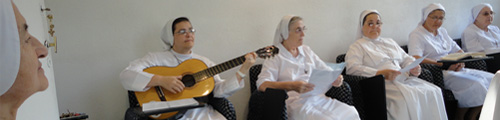

-

-

-

-

-

-

-

-

- 
-

-


NUESTRA HISTORIA
HISTORIA DE LA PROVINCIA “SAGRADO CORAZÓN DE JESÚS” ARGENTINA DESDE SU DIMENSIÓN PASTORAL. 1936 – 2010 (Por Hna. Nilda Ramírez)
“Hijas de la Misericordia de la T.O.R. de San Francisco"
- 1ª Parte: INTRODUCCIÓN
- 2ª Parte: PRIMER PERÍODO: 1936 A 1939
- 3ª Parte: SEGUNDO PERÍODO: 1940 A 1952
- 4ª Parte: TERCER PERÍODO: 1953 A 2010
1ª Parte: INTRODUCCIÓN
Palabras preliminares
En el presente año 2010, transitando la Congregación por sus 90 años de existencia y 74 años de presencia en la Argentina, me dispongo a delinear someramente cómo se ha encarnado en Argentina el carisma y la espiritualidad de las Hijas de la Misericordia enfocado desde lo histórico-pastoral. Mi trabajo está limitado al material al que puedo acceder al momento de realizarlo. En los archivos de la casa provincial de la Argentina, y en las filiales de la misma, no se encuentran los documentos de los primeros tiempos de las experiencias de las hermanas llegadas de Croacia y de la misma presencia de la Madre Fundadora María de Jesús Crucificado Petkovic; desde el año 1936 a 1952, por haber sido trasladados todos ellos a la casa general de Roma, quedando unos pocos materiales, hallados en forma aislada y muchos en idioma croato.
Me limito servirme de copias mecanografiadas de exhortaciones de la fundadora, trabajos realizados por las hermanas, informes anuales posteriores al período citado, publicaciones en español de libros sobre la historia de la congregación y escritos de María Petkovic, algunos libros de visitas, algunos documentos de autoridades y personas civiles, la tradición oral que ha quedado en la provincia y el testimonio de las primeras hermanas latinoamericanas.
La identidad carismática de las Hijas de la Misericordia
En forma explícita, directa y clara se pueden leer en las Constituciones de la Congregación, el carisma que anima a las Hijas de la Misericordia, la espiritualidad que la alimenta y las obras que en sintonía se desprenden de ella, he aquí los textos: “Vivimos nuestro carisma de Hijas de la Misericordia testimoniando la Misericordia del Padre Celestial y de su Divino Hijo Jesucristo.
Estamos llamadas a donarnos totalmente a Dios y a los hermanos observando el santo Evangelio y los Consejos Evangélicos, viviendo radicalmente el amor y la misericordia al servicio del Reino”. (Constituciones Nº 2. Ariccia agosto 2009). “Unidas en fraternidad, seguimos a Cristo Crucificado inspiradas en el ejemplo de la Beata Madre Fundadora y de San Francisco de Asís”. (Constituciones Nº 3. Ariccia agosto 2009). “El espíritu de la Congregación es: el amor a Dios y al prójimo, en primer lugar hacia nuestras hermanas; la confianza en Dios Padre; el cumplimiento de la voluntad de Dios, el empeño por alcanzar la humildad, la abnegación, el sacrificio, la penitencia, la expresión concreta de la minoridad franciscana y de la conversión”. (Constituciones Nº 4. Ariccia agosto 2009). “Nuestra espiritualidad, que brota del carisma, se centra en Jesús Hijo predilecto del Padre, Encarnado, Crucificado, Resucitado y Eucarístico, y desea promover su realeza y el amor a su divino Corazón”. (Constituciones Nº 5. Ariccia agosto 2009). “Confiadas en la Providencia Divina, fieles al Espíritu, al carisma, a las sanas tradiciones y al patrimonio espiritual de la Congregación, cooperamos con la Misericordia del Padre y nos dedicamos al apostolado: educativo-formativo, parroquial, de la salud y de los ancianos, a las misiones, a la promoción humana y a otros servicios en la comunidad; atentas a los signos de los tiempos y a las necesidades de la Iglesia”. (Constituciones Nº 6. Ariccia agosto 2009)
En estas declaraciones se encierran en forma sintética y actualizada, toda la riqueza vivida y transmitida por la Fundadora a sus herederas, y constituyen la fuerza vital, que plasmada en vidas concretas, es capaz de desencadenar el proceso de atracción, escucha y adhesión al carisma y la espiritualidad, ya sea, en la aceptación y acogida del mismo como receptor beneficiario, o como seres llamados a la plena asimilación y vivencia del don para ser artífices y continuadores del suceso carismático a través de la entrega, la consagración y expansión del mismo, debido a su fuerte y permanente actualidad en cualquier realidad humana necesitada de misericordia, como de hecho ocurrió en la Argentina y en América Latina.
Algunas líneas de fuerza desencadenadas desde el corazón de María Petkovic
a.- Ser hija del Dios de la misericordia:
Su fuerte experiencia de la paternidad de Dios desde pequeña,
la llevó a una ilimitada confianza en Dios Padre, amor y misericordia, al punto de hacerla sentir plenamente hija y plenamente amada abriéndose a una entera correspondencia a la Voluntad de ese Amor a lo largo de su vida.  Coherente con esta realidad en la que se sintió inmersa, al fundar la Congregación, por el querer de Dios, le puso por nombre “Hijas de la Misericordia” y no sierva, ni esclava, transmitiendo a sus hijas idéntica experiencia de filiación con Dios y hermana de todos en Jesucristo al estilo de Francisco de Asís de cuya espiritualidad bebió con abundancia. En este contexto les decía en sus exhortaciones: “Hijas de la Misericordia, significa que son hijas del Dios de la Misericordia, hijas del Corazón de Cristo...El Creador Dios de Misericordia, por su Hijo Jesucristo, tiene sus hijas espirituales, las hijas de su misericordia, en cuyos corazones derrama su amor y su espíritu de misericordia para continuar su obra de misericordia con la humanidad...por eso, como hijas, seamos verdaderas imágenes de la misericordia de Dios, de Jesucristo; que todos los atribulados y afligidos puedan encontrar en nosotras sus hermanas e hijas de la misericordia, un consuelo en su amargura, una hermana de todos, que a todos ama y de todos se ocupa para que sean felices y se salven”. (Capítulo, Caseros 13 de diciembre de 1942). En qué profundo compromiso amoroso y en qué abismo insondable del misterio de Dios se sumergió María, involucrando consigo a sus hijas a quienes engendró espiritualmente, las amó y quiso que participaran de su misma gracia carismática y fueran envueltas en el mismo extraordinario amor misericordioso del Padre en Cristo Verbo Encarnado y Amor Crucificado para testimoniarlo a sus hermanos con su vida y sus obras amándolos. Es por ello que “una hermana misericordiosa levanta, sana, consuela, enseña y hace felices a los demás...ha sido elegida para que sea hermana misericordiosa y ha de sentirse feliz de poder ayudar a otros. Si Dios es Misericordia, su hija que continúa su obra, se llama por esto hija de la misericordia...En Cristo debe mirar y amar a todos. Si hace excepciones, lo hará para con los necesitados, débiles, pequeños y pecadores... (Capítulo-Casa Madre, 10 de mayo de 1931).
Coherente con esta realidad en la que se sintió inmersa, al fundar la Congregación, por el querer de Dios, le puso por nombre “Hijas de la Misericordia” y no sierva, ni esclava, transmitiendo a sus hijas idéntica experiencia de filiación con Dios y hermana de todos en Jesucristo al estilo de Francisco de Asís de cuya espiritualidad bebió con abundancia. En este contexto les decía en sus exhortaciones: “Hijas de la Misericordia, significa que son hijas del Dios de la Misericordia, hijas del Corazón de Cristo...El Creador Dios de Misericordia, por su Hijo Jesucristo, tiene sus hijas espirituales, las hijas de su misericordia, en cuyos corazones derrama su amor y su espíritu de misericordia para continuar su obra de misericordia con la humanidad...por eso, como hijas, seamos verdaderas imágenes de la misericordia de Dios, de Jesucristo; que todos los atribulados y afligidos puedan encontrar en nosotras sus hermanas e hijas de la misericordia, un consuelo en su amargura, una hermana de todos, que a todos ama y de todos se ocupa para que sean felices y se salven”. (Capítulo, Caseros 13 de diciembre de 1942). En qué profundo compromiso amoroso y en qué abismo insondable del misterio de Dios se sumergió María, involucrando consigo a sus hijas a quienes engendró espiritualmente, las amó y quiso que participaran de su misma gracia carismática y fueran envueltas en el mismo extraordinario amor misericordioso del Padre en Cristo Verbo Encarnado y Amor Crucificado para testimoniarlo a sus hermanos con su vida y sus obras amándolos. Es por ello que “una hermana misericordiosa levanta, sana, consuela, enseña y hace felices a los demás...ha sido elegida para que sea hermana misericordiosa y ha de sentirse feliz de poder ayudar a otros. Si Dios es Misericordia, su hija que continúa su obra, se llama por esto hija de la misericordia...En Cristo debe mirar y amar a todos. Si hace excepciones, lo hará para con los necesitados, débiles, pequeños y pecadores... (Capítulo-Casa Madre, 10 de mayo de 1931).
b.- Los iconos de su Amor: Su ardiente y apasionado amor a Cristo Encarnado y Crucificado, expresión máxima para ella del Amor Misericordioso del Padre, se hizo vida en su persona de tal manera que la llevó a vivir y a obrar en consecuencia con total entrega a este amor en la humanidad pobre y sufriente, encarnada en la realidad y crucificada por amor a su Rey. El misterio del Verbo Encarnado, Palabra del Padre que por misericordia vino a nosotros para darnos vida, le era muy querido y refiriéndose a eso dice:”esta meditación me es grata y en ella encuentro gran placer al contemplar la misericordia y el amor de Dios por las criaturas, es decir la Encarnación...Dios se apiadó de la humanidad y envió a su Divino Hijo para que la recogiera y la sanara, tuvo misericordia de los pobres y necesitados y envió a su Verbo para que los consolara y confortara”(Capítulo-Roma 25/3/57). Al dirigirse al Hijo de Dios hecho carne se expresaba con fervor diciendo: “Oh dulcísimo Hijo, te amo en el Padre, oh Amor Encarnado, oh Don de Misericordia, o dulcísimo Hijo del seno del Padre”, Jesús, Palabra Eterna del Padre, creo en Ti...Jesús, reflejo de la hermosura del Padre, te alabo en el Padre...Jesús, Rey de mi alma y de mi corazón, reina en mí...Jesús, Maestro mío, enséñame...”(Mensajes de fe pág. 18 y 24). Decía que “no podríamos hablar de Dios si antes no escuchamos al Amado. ¿Cómo podrá brotar de nosotras un manantial de amor del cual puedan beber otros si en nosotras no hay Vida, si no estamos unidas a la Fuente de Vida Eterna que es Cristo? Nuestro ser, nuestro espíritu y todo lo que somos, debe...recibir la Palabra de Dios...el tesoro más preciado y el bálsamo para nuestra alma...”. (Roma M. Petkovic: 5/11/56). El Verbo Encarnado y el Amor Crucificado fueron en ella una fuerte expresión del amor misericordioso del Padre Celestial. Pronunciaba con frecuencia una frase característica: “el Amor Crucificado”, en cuya fuente se abrevaba y del cual anhelaba dar de beber a otros exclamando con San Pablo “el amor de Cristo me devora...me urge...(Exhortación Roma 5/11/56). Para ella “la grandeza de la Cruz resplandece como signo en todas partes, ...la Cruz no es algo triste, es la profundidad del misterio que cuanto más la contemplamos, tanto más profundamente se nos abre el libro de la grandeza y de la piedad de Dios. La ciencia más grande se aprende de la Cruz, la Cruz no puede abatir al alma, sino que la levanta y la fortalece, en la Cruz está la fuerza y la seguridad” (Exhortación-Blato 14 de mayo de 1936). A sus hermanas con frecuencia les pedía que “meditasen en esto: `mi Amor está Crucificado`, miren a su Amor Crucificado, y que El les explique su misterio; si contemplan la Cruz, aceptarán también su mística...`devuelvan Amor por Amor`, abracen la Cruz con todo el corazón y a Él, nuestro Amor Crucificado” (Exhortación-Blato 14 de mayo de 1936).
c.- Por amor a Dios, amor a los hermanos: Para María Petkovic fueron inseparables el amor a Dios del amor a los hermanos, no concebía la Misericordia de Dios sin una respuesta y una correspondencia a ese amor plasmada en obras de caridad para con los demás. La intensidad del amor misericordioso de Dios experimentado en su alma, la devoraba, y la impulsaba a la entrega completa a su Dios, y por amor a Él a su prójimo, saliéndose de sí misma, para ir hacia la humanidad haciendo conocer ese amor, aliviando todo dolor humano, socorriendo y consolando al que sufre, cualquiera fuese su condición social y su creencia, porque “quien posee el amor, posee a Dios y quien posee a Dios, incluye a todo el mundo y se sacrifica por él, sin distinción...El amor es activo, se demuestra no solo con palabras sino con obras...”. (Capítulo-Blato 23 de febrero de 1936). “...no hay dicha más grande en este mundo que servir a Cristo amado, en el pobre hermano sufriente, no hay consuelo más grande, que aliviar los corazones afligidos, no hay amor más santo que amar a todos los abandonados mirando en ellos a Cristo Crucificado...” (Libro de visita, San José, Hogar de ciegos. S. Lugares. Buenos Aires, 16 de julio de 1943)
 Considerando sus escritos, sus expresiones verbales, el testimonio de su vida y de sus obras, no queda duda de la relación intrínseca y de la síntesis que realizó en su persona acerca del Amor, estableciendo un vínculo indisoluble entre el amor a Dios y el amor al prójimo, haciendo de él, dos aspectos de una misma realidad. No podía concebir que quien amara a Dios no amara también a los demás especialmente a los más débiles, a los que sufren, a los niños, a los ancianos y a todos ya que ”no deberíamos nunca mirar si aquel a quien hacemos el bien es bueno o malo, joven o anciano, creyente o no; saber que está necesitado es suficiente para ir en su ayuda”(Mensajes de Fe, pág. 39). Para ella y sus hermanas, toda la preocupación y el esfuerzo, “debían ser por amor de Dios para los pobres, en quienes miramos a Cristo” por eso decía que, “trabajemos para la gloria de Dios y por su amor, para los pobres y abandonados” (Diario espiritual 26 de marzo), “por Él, realizamos obras de amor, aquel fuego que Él ha traído a nuestro corazón encenderá a otros corazones, así unidas con El en el amor, podremos trabajar eficazmente en la extensión de su amor divino en la humanidad, iluminarla y mostrarle el camino de la salvación. (Capítulo Casa Madre, abril de 1931). Para ella “una hermana debe mirar a Jesús en cada enfermo, sea él, anciano o joven, instruido o ignorante, pobre o rico”. (Capítulo-Casa Madre 1932). “El mejor servicio a Dios daremos trabajando y sacrificándonos por los pobres” (Orientaciones y Consejos, Casa Madre 7 de julio de 1938), “para esto debemos estar llenas del amor de Dios que despierte en nosotras el amor hacia el prójimo, hacia las personas, los niños abandonados y hacia todos”. (Exhortación, Caseros 28 de noviembre de 1941). Ella deseaba “que cada hermana tenga y aumente en su corazón el amor a Cristo, nuestro Señor y Maestro para que también pueda salvar y hacer felices a los demás”. (Capítulo, Caseros 25 de marzo de 1942).
Considerando sus escritos, sus expresiones verbales, el testimonio de su vida y de sus obras, no queda duda de la relación intrínseca y de la síntesis que realizó en su persona acerca del Amor, estableciendo un vínculo indisoluble entre el amor a Dios y el amor al prójimo, haciendo de él, dos aspectos de una misma realidad. No podía concebir que quien amara a Dios no amara también a los demás especialmente a los más débiles, a los que sufren, a los niños, a los ancianos y a todos ya que ”no deberíamos nunca mirar si aquel a quien hacemos el bien es bueno o malo, joven o anciano, creyente o no; saber que está necesitado es suficiente para ir en su ayuda”(Mensajes de Fe, pág. 39). Para ella y sus hermanas, toda la preocupación y el esfuerzo, “debían ser por amor de Dios para los pobres, en quienes miramos a Cristo” por eso decía que, “trabajemos para la gloria de Dios y por su amor, para los pobres y abandonados” (Diario espiritual 26 de marzo), “por Él, realizamos obras de amor, aquel fuego que Él ha traído a nuestro corazón encenderá a otros corazones, así unidas con El en el amor, podremos trabajar eficazmente en la extensión de su amor divino en la humanidad, iluminarla y mostrarle el camino de la salvación. (Capítulo Casa Madre, abril de 1931). Para ella “una hermana debe mirar a Jesús en cada enfermo, sea él, anciano o joven, instruido o ignorante, pobre o rico”. (Capítulo-Casa Madre 1932). “El mejor servicio a Dios daremos trabajando y sacrificándonos por los pobres” (Orientaciones y Consejos, Casa Madre 7 de julio de 1938), “para esto debemos estar llenas del amor de Dios que despierte en nosotras el amor hacia el prójimo, hacia las personas, los niños abandonados y hacia todos”. (Exhortación, Caseros 28 de noviembre de 1941). Ella deseaba “que cada hermana tenga y aumente en su corazón el amor a Cristo, nuestro Señor y Maestro para que también pueda salvar y hacer felices a los demás”. (Capítulo, Caseros 25 de marzo de 1942).
Una caridad expansiva, una misericordia sin fronteras
Tan fuerte era su amor a Jesús y al Padre Misericordioso que anhelaba solo hacer su Voluntad y llevar a todas las personas al encuentro con Cristo para que sean felices y para que Cristo sea conocido y amado por todos. Para esto no tenía fronteras ni para ella ni para sus hijas, deseaba ardientemente “ir por todo el mundo y realizar obras de amor y misericordia y salvar a las almas para que sean felices en Dios, porque en esto consiste el verdadero amor de Cristo, en hacer felices y bienaventurados a todos en Dios. ¡Oh santo amor! Qué grande y poderoso eres. Has brotado del corazón de Cristo y te derramas en las almas” (Capítulo Casa Madre, abril de 1931). Según la Madre Fundadora, el amor que se experimenta y proviene de Cristo, es dinámico, pone en movimiento a la persona hacia los demás y a la vez la hace feliz, ¡con cuánto entusiasmo decía a sus hijas!: “este amor activo las hará felices también a ustedes...porque están unidas a El!, ¡por eso, unámonos a Cristo, para que este amor se derrame a través de nuestros corazones a las almas que sufren y a la humanidad entera” (Capítulo Casa Madre, abril de 1931). “deben ir por el mundo, a trabajar en hospitales, abrir colegios, y realizar obras de misericordia, sin temor, sin desalentarse por nada, basta tener amor, porque el amor todo puede, todo salva, todo lo alcanza”.(10-9-54)
Se evidenciaba con claridad que el deseo de expandir la gloria del Padre y su amor misericordioso por todas partes, la consumía por completo haciéndola actuar en consecuencia y exclamar en muchas oportunidades que “desearía recorrer el mundo entero, y volar libre desde un confín al otro llevando a Cristo y anunciando su amor...” (Mensajes de fe pág. 30). Al mismo tiempo se disponía con gran apertura de espíritu a ser conducida por la Voluntad de Dios hacia lo que Él quería de ella, entregada completamente al querer de Dios cuya Misericordia hecha imagen en el Amor Crucificado la había marcado profundamente y no podía dejar de darlo a conocer a los demás, especialmente a los pobres y a los que sufren en cualquier parte del mundo, como se pudo apreciar de hecho en sus obras y en tantas expresiones suyas como ésta: “Heme aquí Señor, me consagro a Ti totalmente, pronta para hacer tu voluntad y sacrificarme por Ti y por los pobres (aunque no sepa qué sucederá de mí); que Tú dispongas todo como Señor y entonces yo te obedeceré, vendré y con todo mi corazón me sacrificaré por Ti, por tus hijos y como la sierva haré tu voluntad” (P. Jure Zacevic, OCD, Zagreb. 1996 “La figura y la obra de la sierva de Dios María Petkovic desde el punto de vista ecuménico”). Ella, dejándose guiar por un acertado discernimiento orante, atendiendo a las inclinaciones de su espíritu, los acontecimientos de su entorno y los consejos de su director espiritual Monseñor José Marcelic, no tuvo dudas de que “La Voluntad de Nuestro Señor Jesucristo al fundar esta Congregación fue extender y dilatar el conocimiento del Amor Divino a través de las obras de misericordia espirituales y corporales...” (Capítulo, Caseros 25 de marzo de 1942), y que esta obra estaba abierta al mundo entero a través de las hijas que Dios le había dado, ya que ella se sentía impotente y pequeña para cumplir tamaño deseo que la consumía, por eso en muchas ocasiones decía a sus hermanas que “sólo aquellas que aman a Cristo y viven unidas a Él, serán capaces de llevar amor.. y consuelo a la humanidad sufriente, cumpliendo la misión de Cristo en la tierra...”.(Exhortación. Casa Madre15-1-28), y que “ayudar a alguien, y consolarlo, es nuestro deber, por eso, cultiven en su corazón sentimientos de Misericordia ya que son Hijas de la Misericordia, ...sigan a Dios en su Misericordia en todas partes y en todo lugar”, (Exhortación. Casa Madre 8-1-36) y les pedía con ardor y entusiasmo que “vayan...por el mundo, en nombre de Dios, a sanar a los enfermos, a consolar a los tristes, a salvar a los huérfanos, a predicar el Evangelio, y a anunciar a todos, que se acerca el Reino de Dios”(Exhortación. Casa Madre 7-7-38), “por todas partes...vayan haciendo obras de misericordia...llevando la paz y el bien a la humanidad que sufre terriblemente...Por donde quiera que vayan, respeten y amen a todos como a sus hermanos en Cristo, ya sean ricos o pobres, campesinos u obreros y anuncien a todos el evangelio, amen en Dios a sus hermanos obreros, respeten sus manos trabajadoras y sufridas.” (Orientaciones y Consejos, Casa Madre 7 de julio de 1938). “Hemos venido al servicio de Dios, para trabajar por su gloria, ...en las misiones, en la salvación de las almas...para que vayamos extendiendo y llevando por el mundo, la fe y el conocimiento de Dios a todos... para que venga el reino de Dios a todas las naciones”. (Exhortación, Caseros 28 de noviembre de 1941). También, en este sentido de experimentar una misericordia sin fronteras, oraba por sus hijas con tal confianza como lo hacía Jesús con su Padre, con la sencillez propia de quien se sabe escuchada, con palabras como: “Jesús, da a mis hermanas la gracia de poder llevar por el mundo tu gloria y tu amor; a fin de que venga tu reino a todos los pueblos, a todas las almas, y sea glorificado nuestro Padre Celestial. Padre te amo sobre cada cosa y, en Ti, amo a la humanidad toda”. (Mensajes de fe pág. 23) “Quiero que mis hermanas estén llenas de tu amor para extenderlo por el mundo, enseñando a los ignorantes, fortaleciendo a los débiles, levantando a los caídos y enfervorizando en tu amor todopoderoso a los indiferentes.” (Mensajes de fe pág. 19)
La Madre Fundadora desde joven tuvo el deseo de hacer conocer el mensaje del amor de Dios como ella misma asegura en su Testamento: “Ese anhelo me consumía, me impulsaba hacia países lejanos, a predicar y a difundir su amor...”(Testamento Espiritual Autógrafo, p. 2). Al fundar la Congregación, “...pronto se dio cuenta de que los necesitados y los niños desamparados los hay en todas partes a lo largo y ancho de su patria, en otros países, al otro lado del océano..., por eso, no hay duda de que desde la primera redacción de las constituciones de 1923, donde escribía sobre el fin específico de su Congregación diciendo que: `las hermanas, por el amor a Cristo, se sacrificarán por el prójimo, se ofrecerán a Dios como victimas para la salvación de las almas, haciendo las obras de misericordia espirituales y corporales`, pensaba en una actividad y una misión más amplia que la que en aquellos días podía llevar a cabo en el pueblo natal. En las constituciones redactadas en 1928 se afirma que: `conforme a su finalidad, y teniendo en cuenta las circunstancias y la disponibilidad de las fuerzas y los medios, la Congregación cooperará con la Iglesia a favor de las misiones extranjeras`” (Matanic, Atanasio ofm, Testimonio de Amor en español pág. 103)
El llamado desde la Argentina
Leonardo Ruskovic
“A mediados de enero de 1936, María recibió una inesperada carta de la República Argentina. Le había escrito el misionero franciscano croata padre Leonardo Ruskovic y le pedía veinte religiosas para el cuidado de los enfermos. Una parte de ellas atenderían el sanatorio privado “Rivadavia” en Florida (provincia de Buenos Aires)...María aceptó con mucha gratitud la invitación, ya que representaba lo que ella deseaba y veía en esto un gesto providencial, tanto más que no conocía al padre Ruskovic. A la luz de sus ideales misioneros, bien se comprende el agradecimiento a Dios de parte de María, cuando le formularon el pedido, convertido más tarde en aceptación, y envío de sus religiosas a América del Sur. En la crónica manuscrita de la Congregación se lee: `la Madre General elevó fervientes gracias al Señor por la invitación que provenía de la República Argentina, por lo mucho que ella y sus religiosas lo habían deseado. María lo había puesto todo en las santísimas manos de Dios para que El las llamara para cuando llegase la hora...`”(Matanic, Atanasio ofm, Testimonio de Amor en español pág. 104 al 107)
La visión universal de la Madre Fundadora es propia de los santos, le urge llevar el amor de Dios a todas partes, es lo único que le importa, y siempre lo va a hacer en consonancia y en espíritu de comunión con los pastores de la Iglesia, en armonía con los laicos y respeto por las leyes civiles. Así en cada paso que dio, estuvieron de por medio las autoridades civiles o religiosas o ambas a la vez, buscando solo el bien de las personas a quienes deseaba servir. Dejó, que la voluntad de Dios se expresara para ella en todo momento a través de acontecimientos o de mediaciones humanas, no tomando la iniciativa de ninguna obra por sí misma, sino, esperando la manifestación clara, la necesidad constatada, el pedido expreso. Así la vemos en Argentina y en América Latina, responder a las solicitudes que se le hacía para enviar a sus religiosas a hacerse cargo de alguna obra apostólica, o viendo las grandes necesidades de los barrios pobres acudir a atenderlos con visitas a las familias, ayudas materiales, promoción de la mujer a través de cursos, la evangelización y la catequesis; solo en algunos pocos casos se dio la apertura de algún colegio-hogar por decisión propia, siempre respondiendo a carencias concretas que veía en la sociedad.
“La respuesta de María al padre Ruskovic fue afirmativa...El mismo día en que recibió la solicitud, reunió a las hermanas...preguntó...: `¿Quién está pronta para ir al frente como enfermera?`...Respondieron al instante catorce hermanas, declarándose dispuestas...De entre ellas escogió cinco y de otras casas dos hermanas, preparándolas espiritualmente para que estuvieran dispuestas a todo sacrificio...les recomendó que se pusieran a estudiar el idioma castellano. Destinó veinte religiosas para la Argentina, aunque en el primer viaje partirían solo siete. Ellas tomarían a su cargo el sanatorio mencionado más arriba. Las otras las seguirían a la mayor brevedad...y así, entre el 15 de enero de 1936 y el 30 de setiembre de 1938 viajaron a la Argentina veintitrés religiosas, divididas en cuatro grupos. María las preparaba y desde Blato las acompañaba al puerto de Split, donde se embarcaban. A cada una le entregaba el crucifijo para que fuera su modelo, consuelo y guía...les decía: `Almas queridas, amadas hijas, en el día de sus votos religiosos ustedes se han consagrado a Cristo para cooperar con El en la salvación de las almas, por las cuales El se ofreció a la gloria del Padre, dejó a su santísima Madre y se entregó... por nuestra salvación para mostrarnos el verdadero camino hacia la verdad y la vida.
Las ha elegido para que vayan a enseñar y a consolar a los demás. Vayan con El, felices y animadas en su amor. Feliz la esposa cuando va con su esposo a lo largo de los caminos. Nadie ni nada la molesta. Ustedes pueden ser mucho más felices, porque con ustedes se va el Esposo divino, rey del cielo y de la tierra, rey del amor y del poder. Depositen por completo su confianza en El, y permanezcan hasta la eternidad firmemente abrazadas a El. Hijas mías, les pido y les conjuro una sola cosa como su madre que soy: que permanezcan fieles al divino Esposo hasta la muerte. El las espera con el Padre en la eternidad donde descansarán y gozarán en su eterno amor. Vayan, queridas hijas,... alegres como los ángeles, vuelen para auxiliar a la humanidad sufriente. Millones de almas las esperan y en su dolor las llaman. Jesús va con ustedes, para que por medio de ustedes sean consoladas. Muestren al mundo el camino de nuestra verdadera patria celestial, donde todos los dolores serán aplacados. Mi espíritu unido a Jesús está con ustedes. A El y a la protección de santísima Virgen y san José las confío`. La salida de Blato del primer grupo para la América del Sur fue el 11 de marzo de 1936...y al día siguiente 12, las siete religiosas partían de Split para Buenos Aires. María estuvo con sus hermanas hasta el último momento, animándolas. Con el último abrazo repetía a cada una de sus religiosas: “Hija, permanece fiel a Jesús” (Matanic, Atanasio ofm, Testimonio de Amor en español pág. 107 al 110).
La apertura a lo nuevo y la respuesta a las necesidades

La llegada y posterior desenvolvimiento de la misión en suelo argentino de las hermanas croatas de las Hijas de la Misericordia, solo se podría calificar de audaz. Venían a un mundo desconocido, diferente, una cultura que tenía poco que ver con la eslava, un idioma y costumbres específicamente latinoamericanas producto de la influencia europea y precolombina, aún la geografía, el suelo, las aguas eran de otro color y textura, la vegetación, la fauna y la alimentación eran para ellas extraña. Pero vinieron con la esperanza en el corazón y con el arrojo de las mujeres fuertes de su raza, y fueron enriqueciendo sus lugares de trabajo con el aporte de sus dones personales y de su cultura, dejándose a la vez influenciar poco a poco con la frescura propia y las características singulares del pueblo argentino, con cuya idiosincrasia y misión pastoral empezaron a amalgamarse, a identificarse y a encariñarse amándola. Echaron raíces y formaron una nueva cultura de las Hijas de la Misericordia en suelo gaucho sin variar el espíritu que las animó desde su tierra natal. Llegaron a adoptar como propia esta patria y eligieron quedarse para siempre en ella, entregando sus vidas hasta el final. Se durmieron en el Señor, dejándose abrazar por los surcos repletos de siembra de los campos de la evangelización, y aguardan ahora en el seno de la cálida madre tierra argentina la resurrección de los justos, la cosecha madura de la mies, la corona sempiterna de la gloria. Mirando a la distancia tal hecho, tamaña aventura, vienen a la mente muchas preguntas que hacen pensar: ¿qué las impulsó a lanzarse a una tierra tan lejana con cultura tan diversa? ¿el sueño aventurero de sus jóvenes años? ¿el contagio del ardor misionero de su Madre Fundadora? ¿la obediencia? ¿la fuerza arrolladora de la experiencia del Dios misericordioso que invadía al grupo inicial en torno a su Fundadora? ¿la desbordante necesidad de extender el Reino de Dios, la nueva congregación? ¿el ardiente deseo de atender y aliviar todo sufrimiento humano, entregar felicidad y dar a conocer a Jesucristo? ¿qué había en sus almas, en sus corazones, en sus miradas, en sus voluntades? Tuvieron que dejar todo, lo afectivo, la familia, el pueblo, el idioma, todo lo conocido, vivido y amado hasta ahora, encarnarse para siempre, caer en esta tierra y morir dando origen a una nueva generación de religiosas que sintiéndose atraídas por esta espiritualidad y carisma tomaron la posta y asumieron la continuidad de la obra.
Fue una locura, podríamos decir, lo decimos. Pero fue cierto, ellas llegaron, con la sonrisa en los labios, con algún temor quizás, y comenzaron a trabajar sin perdida de tiempo, al día siguiente, como se puede apreciar en el diario de la primera filial del Sanatorio Rivadavia de Buenos Aires, donde quedó constancia escrita del comienzo de sus actividades el 30 de marzo de 1936, habiendo arribado el día anterior 29 de marzo, y así sucesivamente, día tras día, no hubo descanso, y pasaron las semanas, los meses y los años entregando vida, abriendo caminos y esperanzas, allí donde hacía falta.
Un nuevo y extenso panorama se abría ante sus ojos, ¡cuántas necesidades! ¡cuántos pobres! Y ¡cuántos sin acceder al conocimiento y encuentro con Jesucristo! “...iban a las zonas aledañas...de humilde condición...y dedicaban su tiempo libre a la actividad apostólica enseñando el catecismo...entregando ayuda material...” (Matanic, Atanasio ofm, Testimonio de Amor en español pág. 110).
Frente a la nueva realidad que se les presentaba, ellas que habían encarnado en sí, como dignas hijas de María Petkovic, el amor misericordioso de Dios, unido indefectiblemente al amor del prójimo, se mostraron con una actitud abierta a las necesidades y libres de espíritu para ir allí donde más urgía, respondiendo al clamor de sus hermanos ancianos, enfermos, niños y pobres de todo tipo. No se aburguesaron ni se acomodaron en ninguna casa o comunidad, sino que con amplitud de mente y desprendido el corazón, abandonaban una obra que no estaba conforme al espíritu pobre y misericordioso que les había inculcado su Madre y tomaban otra donde había más necesidad de atender, más personas carenciadas, como se verá en el desarrollo y extensión de la misión. Con gran entusiasmo y espíritu de abnegación se entregaron al servicio del prójimo, esforzándose por aprender el idioma, las costumbres, la legislación. Su dedicación al trabajo profesional que se les confiaba, el acercamiento a los pobres, la oración personal y comunitaria, la evangelización y la catequesis, conformaron un cúmulo de testimonio valioso y ejemplar que hoy admiramos profundamente. Nunca esperaron que vinieran a ellas los necesitados, sino que ellas salían a su encuentro, iban por los barrios, caminaban, visitaban llevando ayuda y consuelo. Esto por supuesto no pasó desapercibido, ya que muchos, empezaron a mirarlas como una novedad “...las autoridades eclesiásticas y civiles apreciaban mucho este trabajo desinteresado y lleno de abnegación. Como consecuencia comenzaron a afluir a la Casa Madre cartas de autoridades competentes que pedían el envío de hermanas para nuevos lugares de trabajo”. (Matanic, Atanasio ofm, Testimonio de Amor en español pág. 110).
2ª Parte: PRIMER PERÍODO: 1936 A 1939
“Las primeras Hijas de la Misericordia ponían sus pies en tierra Argentina el 29 de marzo de 1936” (Matanic, Atanasio ofm, Testimonio de Amor en español pág. 110). Ellas fueron Sor Josefina Bosnic; Sor Azaria Kumric; Sor Miroslava Skrinjar; Sor Adriana Tomasic; Sor Luciana Kerhac; Sor Tarsicia Dimitrievic y Sor Imelda Petkovic, ésta última Superiora de la nueva comunidad y luego con otras fundaciones sería nombrada Delegada. Este período marca el tiempo más difícil de la adaptación y el establecimiento de las primeras hermanas, pero también en ella se vio la admirable y rápida expansión de la acción misericordiosa de Dios a través de las Hijas de la Misericordiosa. En este primer período se fundaron 5 filiales: tres dedicadas a la salud, una a la pastoral parroquial y de barrio y una casa propia dedicada a la escuela y orfanato. De estas cinco fundaciones actualmente subsisten dos: Hospital de Melchor Romero y Tropezón trasladada a Caseros.
1ª Filial: Sanatorio Rivadavia de Florida
Al primer grupo de hermanas “las esperaba en el puerto de Montevideo el padre Leonardo Ruskovic, franciscano croata, quien subió a bordo y continuó con ellas hasta la localidad de Florida del Partidode Vicente López en la Provincia de Buenos Aires donde las recibió el director del sanatorio privado “Rivadavia”, doctor Arce, con su madre, propietaria del mismo, y todos juntos se dirigieron hacia el establecimiento. Esta fue la primera filial que las hermanas Hijas de la Misericordia, tuvieron en suelo argentino y latinoamericano, allí se prodigaron durante casi cuatro años en socorrer a los enfermos neuropsiquiátricos del sanatorio. Algunas de estas hermanas, durante el tiempo libre, en los días domingos, iban a las zonas aledañas, en busca de la juventud y de los niños de humilde condición a los que dedicaban su actividad apostólica enseñándoles el catecismo y preparándolos para la primera comunión. A través de estas misiones, las hermanas llegaron a conocer los alrededores del Gran Buenos Aires como: Bella Vista, Hospital de Campo de Mayo y el Barrio de Suboficiales Sargento Cabral, sin pensar en aquel entonces, que algunos de esos lugares más tarde serían campos de su actividad apostólica.
Las hermanas durante los primeros meses de su recorrida y visita por los barrios pobres de los alrededores conocieron al Sr. Martic, croata y católico práctico que se preocupaba especialmente de los niños. Vivía en un barrio muy pobre en Bella Vista, frente a Puerta 4 de Campo de Mayo donde faltaba todo para los niños. En su propio terreno edificó una capillita que denominó Cristo Rey y una escuelita, pero no encontraba quien le ayudara a enseñar a leer y escribir, a rezar y a prepararse para los sacramentos a los pequeños. Habiendo conocido ya el admirable trabajo apostólico de las hijas de la misericordia por esa zona, se presentó a la Superiora del Sanatorio Rivadavia pidiendo hermanas para su barrio. A pesar de haber transcurrido apenas tres meses de su llegada de Croacia, accedieron a ayudar en la catequesis a pesar de no saber el idioma. Compraron los catecismos en español y con eso se arreglaron para enseñar. La Madre Tazicia que sabía francés y le era más fácil aprender el castellano fue la que se ocupó especialmente de esta actividad a partir del 1º de noviembre de 1936 ayudada de otra hermana, desempeñándose muy bien, no solo con los niños, sino también con los padres y enfermos ayudándolos en todo sentido, porque era gente muy pobre la que residía en estos suburbios, inmigrantes de varios países, y así continuaron hasta el año siguiente. (Apuntes mecanografiados sobre datos históricos de la filial Nuestra Señora de los Ángeles. Pág. 1)
Las hermanas, cuando vieron que la dirección y la organización del sanatorio no garantizaba suficientemente la atención y el trabajo en favor de los pacientes, informaron a su Madre General de la situación, la que decidió se retirasen de dicho sanatorio” (Matanic, Atanasio ofm, Testimonio de Amor en español pág. 110) en fecha probable del 16 de enero de 1940.
El 27 de abril de 1937 partió de Blato hacia Buenos Aires, llegando el 17 de mayo, el segundo grupo misionero de las Hijas de la Misericordia compuesto por 10 hermanas: Sor Teresita Stantic; Sor Bogumila Radaic; Sor Ester Mak; Sor Albina Milat; Sor Irma Farkas; Sor Johanes(Juanita) Strazarkovic; Sor Elvira Rogic; Sor Tihomila Mezic; Sor Andita Mijatov; Sor Floriana Svrljuga.
2ª Filial: Barrio de Suboficiales
Las Hijas de la Misericordia abrieron la segunda comunidad en la Argentina: en el Barrio de Suboficiales “Sargento Cabral” de San Miguel, el 25 de abril de 1937, bajo el pontificado de S. S. Pío XI y siendo Arzobispo de la Arquidiócesis de La Plata el Monseñor Francisco Alberti, bajo el gobierno de la 1ra. Superiora General, M. de J. Crucificado Petkovic, y con la debida autorización del Ordinario del lugar bajo la protección de Nuestra Señora de los Ángeles. (Relaciones de la Congregación en Sud América 1940 a 1950 para ser elevada a la Sagrada Congregación de Religiosos. pág. 8).
El sacerdote Amancio González Paz, capellán militar, con el Sr. Martic, a principio de 1937, solicitaron la presencia de las hermanas para la atención del Barrio de Suboficiales que se estaba terminando de construir. Y dado que el Sanatorio Rivadavia ya estaba encaminado en sus tareas y se arreglaba con menos hermanas de las que habían venido inicialmente, creyeron llegado el momento de extender la misión por amor al Señor y a las almas, fuera del Sanatorio, ellas, desde un tiempo atrás lo venían deseando. Obtuvieron el permiso de la Madre Fundadora y se inauguró la nueva filial en la fecha ya indicada, con las hermanas Tarzicia Dimitrievic, Luciana Kerhac y un mes después se sumaron las hermanas Andita Mihatov y Teresita Stantic; más tarde se agregarían las hermanas Antonia Milicevic y Kalista Spoljaric para quedarse con ellas un tiempo, ésta última debía pedir limosna para una nueva casa en Tropezón.
Las hermanas vivían intensamente cada jornada, y así había transcurrido el primer año de estadía en la Argentina casi sin darse cuenta, y al compartir el último desayuno juntas en el Sanatorio Rivadavia antes de partir alguna de ellas para la nueva casa en el Barrio de Suboficiales recordaron y comentaron que esa fue la primera filial de la Congregación en Argentina, donde vivieron tan unidas en el amor fraterno, compartiendo lo bueno y lo no tan agradable que les deparó la vida durante el año 1936 debido sobre todo a su lenguaje no tan correcto, pues no conocían el castellano. En ese desayuno de despedida atestiguaron: “hemos combatido una buena lucha y vencido todo por un año en este lugar, que por lo demás queremos mucho”. Experimentaban sentimientos de alegría y de tristeza “porque veían que la Congregación se dilataba, pero les dolía la separación del grupo en el cual pasaron juntas muchos días y muchas cosas, también la nostalgia de la patria a la cual pensaban volver y anduvieron juntando moneditas para el pasaje de vuelta y nunca les alcanzó” (Apuntes mecanografiados sobre Datos históricos de la filial Nuestra Señora de los Ángeles. Pág. 1 y 2)
“Las autoridades del Barrio les proporcionaron casa, capilla y locales para realizar su misión apostólica y profesional en la nueva sede del Barrio de Suboficiales. Vivian aquí familias jóvenes venidas de distintos puntos de la extensa nación argentina, con niños pequeños que por el cambio de clima y el desarraigo se enfermaban mucho. Las hermanas se empeñaron en impartir instrucción religiosa a los niños, a los adultos, atender el jardín de infantes, dar cursos de corte y confección para jóvenes madres, enseñar labores manuales a niños del barrio y de las cercanías, dirigir el canto eclesiástico, atender la iglesia en todo, organizar y dirigir las asociaciones católicas, llevar a cabo misiones barriales periódicas, asistir a los enfermos en el consultorio y visitarlos a domicilio, atender las necesidades y aliviar los muchos sufrimientos de las familias. Más tarde abrieron la academia de música. En esta, las hermanas desplegaron su actividad” (Matanic, Atanasio ofm, Testimonio de Amor en español pág. 110 y 111) con esmero y espíritu de misericordia, sacrificio y abnegación, entregándose a la atención de todos los que necesitaban de ellas o padecían algún tipo de sufrimiento ya sean niños, jóvenes o adultos, hasta que el 15 de diciembre del año 2000 se cerró la filial por falta de miembros religiosos.
3ª Filial: Hospital de Campo de Mayo
En su actividad pastoral, como ya se dijo anteriormente, las hermanas del Sanatorio Rivadavia, frecuentaban la localidad de Bella Vista donde con el Sr. Matic y un grupo de señoras hacían un trabajo catequístico, conociendo de esta manera al padre Amancio González Paz, quien al solicitar religiosas para el Barrio de Suboficiales, lo había hecho también para el Hospital “Dr. Juan Madera” de Campo de Mayo que se acababa de construir contando con diez pabellones y una capacidad para 300 enfermos. Fue aceptado por las hermanas, ya que llegaría el 2º grupo con refuerzos desde Croacia. Se hicieron los trámites correspondientes con las autoridades del Hospital y la autorización de la Madre Fundadora. El Cardenal Copello había manifestado que ya hacía ocho años que estaba buscando religiosas para este hospital y no ha logrado conseguir.
Las hermanas por su parte se mostraban entusiasmadas diciendo que `a Dios gracias, felizmente ya están viajando para América otro grupo de nuestras hermanas misioneras, animadas por el puro y ardiente amor a las almas y por la gloria de Dios, contagiadas y fortalecidas por nuestra propia Madre Fundadora, que nos exhortaba a sus hijas espirituales a ver en los sucesos, la voluntad divina buscando los medios para llevarlos a cabo de la mejor manera posible`. Con alegría y gozo fueron recibidas las diez viajeras en el Sanatorio Rivadavia de Florida el 17 de mayo de 1937, donde almorzaron y luego por la tarde fueron a tomar posesión de su nueva misión en el Hospital de Campo de Mayo, donde luego de la cálida acogida que le brindaron las autoridades, se les hizo entrega de la casa donde debían permanecer provisoriamente hasta la construcción de una adecuada para ellas como religiosas. (Apuntes mecanografiados sobre la Historia de la filial Nuestra Señora de la Merced. Pág. 1).
En el mismo día 17 de mayo de 1937 se inauguró e instaló la comunidad de ocho religiosas en el Hospital de Campo de Mayo. Las hermanas asumieron el cuidado de los enfermos, se hicieron responsables de la alimentación y ropería, del orden y la limpieza; tomaron a su cargo varias tareas como personal técnico especializado como la electroencefalografía y electroterapia; se ocuparon además, de la dirección general de la cocina y del lavadero. Pero por sobre todo, se dedicaron a ofrecer ayuda espiritual y consuelo a los enfermos, dar instrucción religiosa y preparar a los jóvenes soldados y a los demás hospitalizados para el conocimiento de Jesucristo por medio del evangelio y el encuentro con El por la catequesis y los sacramentos. El Arzobispo de Buenos Aires y vicario castrense, el entonces Cardenal Copello, demostraba mucho interés por la actividad de las hermanas a quienes enviaba cantidades apreciables de catecismos. A petición de la Madre María, durante su estadía en Argentina, dirigida a las autoridades del Hospital, se construyó en 1948 para las hermanas una nueva casa más amplia con capilla anexa que fue puesta bajo la advocación de Nuestra Señora de la Merced. (Matanic, Atanasio ofm, Testimonio de Amor en español pág. 111)
En este Hospital se han dedicado las hermanas, como en las demás filiales, a trabajar con todo esmero y ardor en extender el reino de Dios y el amor hacia el prójimo, testimoniando con los enfermos y jóvenes soldados un incansable celo apostólico y caridad solícita, aliviando todo dolor y consolando a todo el que sufre con el amor misericordioso del Padre que los cuida.
Podemos decir que ésta fue una de las casas muy frecuentada por María al igual que el Barrio de Suboficiales durante sus doce años de permanencia en América del Sur, con sede en Caseros, provincia de Buenos Aires. Ella misma, junto con sus hijas espirituales, se preocupaba por la instrucción religiosa de los jóvenes conscriptos y de los enfermos. “Cada mes, decía María a sus hermanas, dispongan de una suma necesaria para adquirir catecismo y devocionarios para que estos jóvenes puedan aprender mejor y llevar a sus casas al menos este librito elemental de la fe cristiana”. Hasta el final, las hermanas se entregaron con el mismo fervor a la atención de todos en este centro, llevándoles alegría y serenidad. Muchos fueron los bautismos, las primeras comuniones, las confesiones y las confirmaciones que se realizaron en el hospital, hasta el retiro de las hermanas que se produjo el 10 de diciembre de 2007 por falta de miembros religiosos en la provincia.
Las primeras hermanas que conformaron la comunidad de este Hospital fueron: S. M. Ester Mak (superiora), S. M. Josefina Bosnic, S. M. Thijomila Mezic, S. M. Joanes Strazarkovic, S. M. Azaria Kumric, S. M. Elvira Rogic, S. M. Albina Milat y S. M. Miroslava Skrinjak.
El 28 de abril de 1938 partió el tercer grupo conformada por cuatro hermanas de la Casa Madre hacia Buenos Aires; Sor Alvernia Mirosevic; Sor Ljudevita Gregov; Sor Anselma Marcelic; Sor Cayetana Goevic. Poco antes había partido Sor Kalista Spoliaric.
El cuarto grupo partió de la Casa Madre hacia la Argentina el 30 de setiembre de 1938: Sor Bogoljuba Stanic; Sor Ladislava Vielis; Sor Norberta Bacic; Sor Emiliana Belic y Sor Apolonia Kdodiera
4ª Filial: Hospital Neuropsiquiátrico de Melchor Romero
El 1 de febrero de 1938, las hermanas a pedido del Ministerio de Salud de la Provincia de Buenos Aires y del Arzobispado de La Plata, aceptaron también el Hospital General de Neuropsiquiatría, sito en Melchor Romero, cerca de la ciudad de La Plata, en la arquidiócesis del mismo nombre.
Las primeras hermanas voluntarias fueron: Sor Imelda Petkovic (Superiora); Sor Josefina Bosnic; Sor Adriana Tomasic; Sor Albina Milat; Sor Joanes Strazarkovic (Informe para la Santa Sede.). Fueron recibidas por el párroco Padre Samuel Ramos, el Sr. Director del Hospital Dr. Luis Carboni, los cinco médicos que por entonces tenía el nosocomio, personal auxiliar y personas del pueblo; después de haber sido saludadas, se dirigieron todos a la Iglesia para implorar la ayuda de Dios y la protección de la Virgen María, consuelo de los afligidos. La casa para ellas todavía sin terminar dio motivo para que ocupen por un tiempo las dependencias destinadas al Director del Hospital. Se entregaron con amor, sacrificio y abnegación a una labor ardua en este hospital de enfermos mentales, tal vez el más grande por entonces en la Provincia de Buenos Aires, quienes en no pocos casos son abandonados por sus propios familiares. Se extendía en ese momento a 14 pabellones con atención aproximada a 2.800 pacientes y capacidad para 3000 enfermos. En aquel tiempo muchos enfermos estaban en estado lamentable, no teniendo la medicina necesaria ni medios adecuados para ayudarlos como hoy, pero desde un principio las Hermanas no escatimaron los esfuerzos para brindarles un poco más de orden en el aspecto físico, pero mucho más en darles el calor humano, el cariño y la comprensión, que las escasas visitas de los familiares les proporcionaban solo de vez en cuando. Naturalmente que este inmenso trabajo las absorbía a las cinco hermanas requiriendo de ellas mucha energía, por eso muy pronto llegaron otras tres más, contando así con ocho religiosas hasta el año 1945. (Breve reseña de la presencia de las religiosas en el Hospital Neuropsiquiátrico de Melchor Romero. Hna. Mira Barakovic. 15 de abril de 1984).
Cuando aquel primer día entraron al Hospital acompañadas del Director Dr. Luis Carboni, jefes y médicos, en el primer Pabellón denominado Charcot para mujeres mentales, el aspecto era muy triste, impresionante y doloroso. Las enfermas estaban muy sucias, desordenadas y abandonadas, sus miradas eran de desesperación y angustia. En distintos lugares se veían a las enfermas cocinando comida o té en unas latitas muy negras y quemadas. Por todas partes había una suciedad terrible. Dentro de la sala había un desorden único. Las paredes tenían un zócalo de 2 metros de alto pintado de negro, las camas del mismo color, frazadas rotas y sucias, sin sábanas, `se nos partía el alma de tanta tristeza`. En las salas de las enfermas mentales más graves, éstas estaban enchalecadas y atadas. En el comedor se reunían cerca de 700 enfermas, ...`nos retiramos tristísimas, pero con el más fuerte animo de hacer algo por ellas, decididas de poner todo nuestro amor para mejorar ese estado de personas que también fueron redimidas por la sangre de Cristo`. Las hermanas tenían el acompañamiento y la atención espiritual de sacerdotes y el apoyo de las autoridades del hospital, jefes de salas y médicos, lo que contribuyó mucho para un fuerte sostén moral en su labor. Con la ayuda de Dios comenzaron a hacer todo lo que podían; primero se ocuparon de la limpieza de las salas y los patios con la colaboración de cuadrillas de trabajadores compuesta de enfermos lúcidos, que duró más de dos semanas, luego se consiguió pintura y se logró pintar todo con colores claros y agradables.
La Superiora habló con el Gobernador de la Provincia Dr. Manuel Fresco quien les proporcionó la compra de frazadas, utensilios, telas para sábanas y ropas. Cada hermana tenía una repartición donde ponía todo su esfuerzo y su amor, así el cambio se vio pronto reflejado en las salas.
Organizaron la costura y confeccionaron las ropas de cama y de vestir para los enfermos, quedando las habitaciones limpias, pintadas, camas hechas con colchas blancas dando un aspecto agradable que gustó a todos. Esto solo se pudo hacer en los pabellones de las mujeres por falta de tiempo y falta de más hermanas, pero ellas visitaban también los pabellones de los hombres en igual estado deplorable dando instrucciones a los encargados para que mejoraran la situación. Así trabajando y adelantando cada día en mejoras, dieron un gran alivio a los pobres enfermos y consuelo a sus familias, médicos y empleados; `nosotras las hermanas, nos sentimos también más tranquilas viendo mejor atendidos a los enfermos; gracias a la ayuda de Dios y de todos los que colaboraron; se vio un gran cambio en poco tiempo`. El 27 de mayo de 1938 se incorporaron las Hnas. Sor Anselma Marcelic; Sor Alvernia Mirosevic y Sor Ljudevita Gregov. Con la presencia del Obispo Auxiliar de La Plata Mons. Serafini, el Gobernador de la Provincia de Buenos Aires Dr. Manuel Fresco y señora, Ministros y autoridades del Hospital, se bendijo la nueva casa y capilla para las hermanas el 19 de octubre del mismo año dedicado al Sagrado Corazón de Jesús. La primera Santa Misa celebro el Padre Leonardo Ruskovic. Las autoridades al recorrer el hospital después de la ceremonia, no podían creer tantas mejoras, y el Gobernador preguntó: ‘este es el lugar donde estuve unos meses atrás?’ y todos preguntaban a las hermanas como podían conseguir tan gran cambio en tan poco tiempo. Agradecieron mucho y prometieron toda su ayuda en lo que haga falta. Las hermanas han insistido mucho con las autoridades para agrupar a las enfermas en lugares mas pequeños, ya que estaban todas juntas en el pabellón denominado Charcot, así se lograron construir 6 pabellones y se distribuyeron las enfermas según el tipo de diagnóstico en salas de 90 a 100 habitantes y pudo mejorarse la atención personal a las mismas. También lograron que se formara un taller de costura a cargo de una hermana con algunas empleadas y enfermas lucidas que sabían coser, se ocupaban de proveer a todo el hospital de ropa adecuada. Organizaron días de fiesta al aire libre, salidas y otras diversiones para que los mentales se sintieran mejor y tuvieran alguna diversión. En 1946 se bendijo la piedra fundamental para la futura iglesia del hospital y al mismo tiempo parroquia del pueblo bajo la advocación de la Inmaculada Concepción, todo por el impulso que dieron las hermanas para que se edificara la iglesia con la casa para el sacerdote al lado. Para cumplir la misión no solo con enfermos del hospital, sino también con la gente del pueblo educando a niños pobres, la superiora con las hermanas visitaban las familias en los tiempos libres e invitaban a los niños a venir al hospital y los catequizaban preparándolos para los sacramentos y ayudándolos con alimentos, ropas y calzado recibidos en donación. Como en el hospital se hacia cada vez mas difícil la atención de estos niños, las hermanas buscaron un lugar fuera de ella para recibir las donaciones y atender a niños y personas carenciadas, pero muy pronto, la familia González les donó un terreno para esta finalidad y con el permiso de la Madre Fundadora y con las ayuda de mucha gente se empezó a construir lo que hoy es un gran colegio de mas de 1300 alumnos desde el Jardín de Infantes hasta el Secundario. Las hermanas también han creado y dirigido asociaciones católicas como las Hijas de María y otros con jóvenes del pueblo.
Durante la estadía de la Madre Fundadora en Argentina desde 1940 a 1952, visitaba muy seguido este hospital e iba por las salas de las enfermas mentales a verlas tratándolas con tanto cariño, regalándoles golosinas y recomendando a sus hermanas sean muy atentas y misericordiosas con ellas. (&Gregov S.M. Ljudevita. Datos de las obras realizadas en la Filial Sagrado Corazón de Jesús Hospital de Melchor Romero de 1938 a 1976).
Con los años y reforzadas con vocaciones latinoamericanas, se fue elevando el número de religiosas hasta doce, las cuales estaban distribuidas por todo el hospital realizando diversas tareas especialmente la de trabajar con estos enfermos psiquiátricos crónicos y agudos junto al personal auxiliar y la guía del médico de sala. Las hermanas se ocupaban también del bien espiritual de cada enfermo, en la medida de las capacidades de cada uno aprovechando toda oportunidad de mejorar y aliviar el estado en que se encontraban. En toda esta labor, durante tantos años, para todas las hermanas que están actualmente, como la de aquellas que ya no están, ha sido la fuerza del amor misericordioso de Dios y la vida de oración los medios que las ha sostenido y animado entre estos hermanos sufrientes. Una ayuda importante y grande también han sentido las hermanas de parte de todos los Directores del Hospital, con el apoyo y la comprensión de los mismos, como así de los médicos y del personal tratando de realizar juntos una labor más eficaz en bien de los enfermos. (Breve reseña de la presencia de las religiosas en el Hospital Neuropsiquiátrico de Melchor Romero. Hna. Mira Barakovic. 15 de abril de 1984).
En un informe de 1960 elevado a Roma para el Capítulo General, se lee que las 12 hermanas de esta comunidad realizaban las siguientes actividades: Como Verónicas, enjugaban las lágrimas del dolor de las imágenes borrosas de Cristo, aliviando de todas las maneras posibles las penas de los enfermos mentales. Dirigían la cocina general, el lavadero, costurero y planchador. Se ocupaban de las salas de mentales realizando las curaciones, llevando el inventario de muebles y ropa, eran responsables de la limpieza, del orden, de los medicamentos. Organizaban salidas y diversiones al aire libre para la distracción de los pacientes, para que se olviden aunque sea por unos instantes de su triste enfermedad. A los más lúcidos les enseñaban el catecismo y los preparaban para los sacramentos. A los enfermos graves se los acompañaba con la bendición del sacerdote o con la oración por ellos. En los tiempos libres, visitaban a domicilio alrededor de 200 enfermos adultos y niños asistiéndolos en todo lo que necesitaban, como nebulizaciones, inyecciones y otras curaciones. Participaban y ayudaban en la parroquia acompañando también al personal y enfermos en todas las celebraciones, novenas y devociones populares que se realizaban en ella. Por los pabellones llevaban la visita de las imágenes del S. Corazón y de la Virgen en sus respectivos meses y también en el pueblo por las casas de las familias.
Acompañan la celebración de la S. Misa los domingos en la cárcel de hombres que son también enfermos mentales. Con el apoyo de las autoridades crearon el teatro local en la sala Piñero, realizando allí representaciones religiosas y otras. Daban catequesis en el pueblo y ayudan a parroquias vecinas.(Relaciones de la Filial Hospital General M. Romero. 30/10/1960). Enseñaron catequesis a partir de 1964 en dos institutos de menores, en Villa Rosa y en Abasto. En 1966 extendieron también la catequesis a la Colonia Urquiza.
El Hospital podía albergar, en aquel tiempo, hasta tres mil enfermos, distribuidos en veinte pabellones. Actualmente se trata de reinsertar a los pacientes en la sociedad y en sus familias con un adecuado acompañamiento. Las hermanas además de los enfermos mentales, fueron nombradas para cargos de servicios profesionales en el sector de clínica médica de enfermos comunes.
La Madre Imelda Petkovic (primera Superiora de la comunidad religiosa del Hospital), en 1963 con motivo de los 25 años de presencia de las hermanas en ese lugar, les escribió en una carta que “la llegada de las hermanas a ese Hospital fue un día memorable, de gran consuelo y satisfacción...de alegría para aquellos que deben llegar a ese lugar tan triste para vivir allí, pero aliviado por la dedicación y amor de ustedes. Hemos admirado verdaderamente la intensa labor que han ido desarrollando y que siguen desarrollando entre esos seres humanos no tan tenidos en cuenta por la sociedad a los cuales ustedes tratan con verdadero amor de madre, de hermana y de amiga” (Petkovic, Madre Imelda, Carta dirigida a las hermanas con motivo de los 25 años de servicio en el Hospital 18 de febrero de 1963). El Sr. Director Dr. Jorge J. Rosa, en un testimonio escrito dijo que “ha podido ver en las hermanas un ejemplo de sacrificio, abnegación, renunciamiento y humildad” (Rosa Jorge, Director. Nota dirigida al Ministerio de Bienestar Social 26 de junio de 1978). Con motivo de cumplirse los 70 años de la presencia de las hermanas en el Hospital en el año 2008, el Director Dr. E. Melia expresó que las religiosas con su acción misionera a esta comunidad dieron inicio a una tarea edificante, desde los distintos ámbitos y concepciones contribuyeron a revalorizar al paciente como sujeto que padece, su presencia ha significado un valioso aporte a las condiciones asistenciales y la dignidad de vida de los pacientes, toda su acción ha sido muy importante para la organización administrativa y el funcionamiento de sectores del Hospital, representó una extensión y una manifestación concreta de la misión impulsada por la Beata María de Jesús Crucificado Petkovic. Hoy quieren expresar el agradecimiento las sucesivas generaciones de pacientes, empleados y profesionales hacia las Hermanas”(Disposición Nº 547 de la Dirección del Hospital Alejandro Korn. Melchor Romero).
Actualmente, la comunidad esta formada solo por cuatro hermanas, algunas muy mayores, debido a la gran disminución de las vocaciones religiosas. Las hermanas continúan trabajando en esa comunidad, se esfuerzan mucho aun en atender a los enfermos mentales y a los demás internados en el hospital por distintas causas, visitándolos en las salas y a cada enfermo, brindándoles atención espiritual y humanitaria. Realizan anualmente la Celebración del Día Nacional del enfermo organizado de manera especial con los directivos del hospital, departamento de enfermería y con todos los responsables de cada área de las salas .Cuentan para este evento con la colaboración de las hermanas de la comunidad Cristo Rey de caseros junto con un grupo de alumnos y catequistas. Ese día, la celebración central es la santa Misa, preparada con mucha solemnidad por las hermanas, alumnos y catequistas de diferentes lugares, en la que participan también los profesionales, el director del hospital, el personal, familiares de los enfermos y el pueblo. Se completa el día con entretenimientos al aire libre para los internos, almuerzo y regalos. Otro momento destacado del Apostolado es la Navidad, nacimiento del niño Dios. Para esta ocasión se arman pesebres por las hermanas ayudadas por personas de buena voluntad, en las salas, en la entrada del hospital al aire libre con imágenes de tamaño natural. Se solicitan y se reciben donaciones para los pacientes y para la realización de los pesebres por parte de entidades, empresas, personal del hospital y muchas personas generosas de la comunidad local y de otros lugares más alejados: pan dulce, golosinas, regalos, objetos religiosos, luces, estrellas, adornos varios. Familiares de los pacientes, niños, personal del hospital y público en general, visitan, rezan y se sacaban fotos en los pesebres. Las hermanas visitan las diferentes salas psiquiátricas rezando y cantando con los enfermos para alegrar su espíritu y llenarlos del consuelo de Dios y de la protección de la Virgen María; a los que están lúcidos se los prepara y acompaña en la recepción de los sacramentos especialmente cuando están enfermos, se les lleva la visita de la Virgen y otras imágenes religiosas según la devoción popular, se celebra la Santa Misa por sectores y por turno y otras celebraciones de fe; en alguna sala de enfermas mentales las hermanas asisten ayudando a los encargados en la atención personal de higiene, salud, alimentación y vestimenta. También asisten y evangelizan a los numerosos pacientes internados en el sector de clínica, destinado a enfermos comunes, ayudadas de un grupo de señoras voluntarias, con la escucha, la preparación para los sacramentos a los que desean, visitas de la Virgen y del Sagrado Corazón. En la casa también diariamente atienden a enfermos psiquiátricos, familiares pobres de enfermos que se encuentran internados y a otros brindándoles una palabra de aliento, consuelo, comida, ropa, calzado, yerba, azúcar recibidos en donación por personas generosas de distintos lugares.
En la parroquia continúan colaborando en todo lo que pueden como en la sacristía, decoro del templo, liturgia, consejo pastoral y otros. (Informe anual año 2009).
5ª Filial: “Asilo Almas del Purgatorio” – Tropezón
La fecha del 2 de noviembre de 1938 señala la apertura de la quinta casa situada en la periferia de Buenos Aires, en la localidad Tropezón, calle Rauch y Triunvirato, provincia de Buenos Aires.
La autorización la dio el Arzobispo de La Plata con el permiso de la Madre Fundadora, 1ra. Superiora General. Este inmueble constituye la primera propiedad y fue por un tiempo la casa central de la Congregación en Argentina. En ella se desarrolló la actividad propia de la Congregación a favor de los niños pobres y de los huérfanos. La casa abarcaba un orfanato, jardín de infantes, escuela primaria para unos trescientos niños. Cursos de corte y confección para las mujeres. Asimismo no faltó un buen número de niños que recibían la enseñanza del catecismo y la preparación para la primera comunión. Las hermanas iban visitando a las familias más necesitadas, llevando víveres que recibían en el mercado general de Liniers. (Matanic, Atanasio ofm, Testimonio de Amor en español pág. 112). La casa fue dedicada a las Almas del Purgatorio en agradecimiento a la Hna. Kalista quien incansablemente trabajó pidiendo limosna para el pago de esta casa desde su llegada hasta su muerte, siendo muy devota de las almas del purgatorio. Aparentemente sin precisión, las primeras hermanas que formaron parte de esta nueva filial fueron: Sor Luciana Kerhac como Superiora, Sor Kalista Spoljaric, Sor Teresita Stantic, Sor Imelda Petkovic, Sor Bogoljuba Stanic y otras. (Explicación encontrada en el álbum fotográfico general de Caseros).
Esta propiedad fue adquirida con el sacrificio y el trabajo de las hermanas, fue también el fruto de limosnas y algunas donaciones. La casa se había comprado con el préstamo de un banco y el dinero con sus intereses las hermanas lo devolvían con lo que percibían de las mensualidades en los hospitales, mediante privaciones y trabajos extras, como también con la ayuda de unos pocos bienhechores. (Matanic, Atanasio ofm, Testimonio de Amor en español pág. 117).
El 15 de marzo de 1939 comenzó a funcionar la escuela primaria con 100 niños en un día lluvioso. Por disposición del Consejo General de Educación de la Provincia de Buenos Aires a partir del 12 de agosto de 1941, la escuela primaria pasó a llamarse `General José de San Martín`. (Orcellet, Hna. Gema. Historia de la Casa Regional Cristo Rey. Caseros. Pág. 6). Abierta la escuela primaria, se presentó a las hermanas una docente que se ofreció a colaborar sin compensación alguna, se consideró su ayuda como un regalo de la Providencia, pero engañó a las hermanas quienes habían puesto en ella su confianza, usó el sello de la escuela, falsificó la firma de la hermana ecónoma e hizo compras para uso personal, luego, más tarde comenzaron a presentarse los acreedores a reclamar el pago de las deudas. Con la ayuda de Dios y la cooperación de un buen abogado, se alcanzó la solución rápida y satisfactoria del problema en ese entonces ya con la presencia de la Madre Fundadora que había llegado de Europa. Aquí se dio inicio además a la casa de Formación para la vida religiosa en el año 1938, con el ingreso al noviciado de una joven postulante proveniente de Croacia Dj. Bárbara Dujmovic con el nombre religioso de Hna. Rosa. El 6 de agosto de 1940, emitió su profesión religiosa la novicia Hna. Smilka Stanic que vino con la Madre Fundadora de la Casa Madre y profesaron perpetuamente varias religiosas jóvenes, llegadas de Croacia. Así se comenzó a llevar a efecto el deseo de la Madre de agrandar la Congregación con la mira puesta en las vocaciones en el suelo sudamericano. (& Matanic, Atanasio ofm, Testimonio de Amor en español pág. 117 y 119).
Las primeras vocaciones latinoamericanas empezaban a llegar. En el año 1941 se dio comienzo al primer grupo de Postulantes latinoamericanas, y así fueron admitidas al postulantado, el 16 de abril Sergia Helman de Ybycuí y María Elba Saffi de Ybycuí; el 17 de agosto se agregaron provenientes de Ybycuí donde habían ingresado al postulantado el 25 de marzo: María Marecos e Ignacia Salinas; el 14 de agosto Dorinda Pazo Otero nacida en España; el 17 de agosto Bonifacia Peña proveniente de Ybycuí; el 3 de octubre Sara García proveniente de Villarrica, Paraguay; el 10 de octubre Dolores Leguizamón de Ybycuí. (Elenco de Hermanas. Primer Libro de las Hijas de la Misericordia. Caseros. Argentina págs.12 al 15 y 58 al 71).
El 4 de octubre de 1941 se realizó la primera ceremonia grupal de inicio al noviciado con la presencia de la Madre Fundadora: Hna. Fidelis del Amor de Jesús (Sergia Helman); Hna. Luisa de Jesucristo (María Elba Saffi); Hna. Eduarda de la Asunción (María Marecos); Hna. Humildad del Niño Jesús (Ignacia Salinas); Hna. Piedad del Sagrado Corazón (Bonifacia Peña). El ingreso del segundo grupo latinoamericano al noviciado tuvo lugar el 25 de marzo de 1942 con: Hna. Adoración de Jesús (Dorinda Pazo Otero); Hna. Stella de la Santísima Virgen (Sara García); Hna. Carmen de la Santísima Virgen (Dolores Leguizamón). (Elenco de Hermanas. Primer Libro de las Hijas de la Misericordia. Caseros. Argentina págs.12 al 15 y 58 al 71).
El primer grupo de la Primera Profesión de Hermanas latinoamericanas fue el 5 de octubre de 1942 con: Hna. Fidelis Helman del Amor de Jesús; Hna. Luisa Saffi de Jesucristo; Hna. Eduarda Marecos de la Asunción; Hna. Humildad Salinas del Niño Jesús.
El segundo grupo de Primera Profesión de latinoamericanas fue el 26 de marzo de 1943 con: Hna. Adoración Pazo Otero de Jesús; Hna. Stella García de la Santísima Virgen; Hna. Carmen Leguizamón de la Santísima Virgen. (Elenco de Hermanas. Primer Libro de las Hijas de la Misericordia. Caseros. Argentina págs.12 al 15 y 58 al 71).
Esta Casa principal y de Formación de la Congregación en Argentina y América Latina, por decisión de la Madre Fundadora, fue trasladada en 1943, a un predio de la localidad de Caseros, Provincia de Buenos Aires, sobre la Avenida San Martín, llamándose más adelante con el nombre de Cristo Rey.
Características de este primer período: Desde los inicios se empezó a perfilar un estilo propio de las Hijas de la Misericordia en todas las filiales; una característica común que se repitió en cada obra nueva que se fue gestando hasta el día de hoy que es la salida a los barrios y la presencia parroquial de las hermanas en sus tiempos libres, además del trabajo institucional de los hospitales, colegios u hogares, a excepción de aquellas comunidades que nacieron explícitamente para la pastoral parroquial y de barrio. Visitaban las familias más necesitadas y catequizaban a los niños; ayudaban a los carenciados entregando alimentos, ropas y calzados recibidos en donación; atendían a domicilio a enfermos pobres, ancianos y niños. Participaban y ayudaban en las parroquias en todas las celebraciones, novenas y devociones populares, en la catequesis, colaboraban en parroquias y capillas vecinas y en otras instituciones; dirigían asociaciones católicas y otras agrupaciones.
3ª Parte: SEGUNDO PERÍODO: 1940 A 1952
Vida y Obra de las Hermanas en la Argentina con la presencia de la Madre Fundadora María de Jesús Crucificado Petkovic.
Llegada de la Madre Fundadora a Argentina
Hacia fines del año 1939, la Madre Fundadora“...Quiso a toda costa cumplir la promesa que en 1936 había hecho a sus hijas espirituales y primeras misioneras que habían emigrado a la República Argentina. Quería viajar cuanto antes para una visita de seis meses a sus hermanas, pero el estallido de la segunda guerra mundial la detuvo por doce años en América del Sur, hecho que constituyó una singular experiencia para ella y un hito clave en la vida de la Congregación.
La Madre al decidir visitar a sus religiosas en Argentina, habló de ello con el arzobispo de Zagreb, Mons. Luis Stepinac, quien alentó tal decisión. Obtuvo para eso el permiso de la Sagrada Congregación de los Religiosos y del obispo diocesano de Dubrovnik. María, en la nave italiana Vulcania, partió hacia Buenos Aires el 29 de abril de 1940. Sus palabras al despedirse fueron: `...por lo débil de mi salud, solo Dios sabe si volveré con vida...` “Que sea según la voluntad de Dios...”. Con ella viajaron tres religiosas profesas y una novicia. Sor Kalista Spoljaric en su 2º viaje. Sor Jania Bilokopic. Sor Egidia y la Novicia Sor Smilka Stanic. En la crónica de la Casa Madre se lee: `A causa de las obras que iban aumentando y de las dificultades de las hermanas y de las casas de nuestras hermanas en Argentina, se vio cada vez más urgente la necesidad de que nuestra Madre Fundadora y primera Superiora General emprendiera el mencionado viaje con el fin de encaminarlas mejor y darles nuevas orientaciones. Las hermanas se encontraban allí desde hacía casi cinco años y deseaban la visita de su madre espiritual. La Madre, sabiendo que estaban lejos de su patria y de la Casa Madre, decidió ir, no obstante las circunstancias poco favorables, ya que, de un momento a otro, se esperaba la segunda guerra mundial`. María y sus compañeras de viaje dejaron Blato muy de madrugada, casi de noche, el 26 de abril de 1940 y llegaron a la Argentina el lunes 20 de mayo de 1940. En el puerto la esperaban sus religiosas y en la casa de la Congregación de Tropezón el padre Leonardo Ruskovic. (& Matanic, Atanasio ofm, Testimonio de Amor en español pág. 112 al 115).
La Madre, enseguida empezó a reunir a sus hijas espirituales para hablarles, escucharlas y aconsejarlas, visitó cada una de las casas, organizó cursos de espiritualidad para diversos grupos de hermanas según los cargos y edades e hizo junto a ellas los ejercicios espirituales. También comenzó a ocuparse de la misión, de las obras de misericordia, dentro y fuera del país. Abierta completamente al querer de Dios respondía a los pedidos que le llegaban tanto de la Argentina como de países vecinos. A pedido del Padre Julio Ortellado que vino desde Paraguay a pedirle hermanas, la Madre viajo a ese país en febrero de 1941 fundando una casa en Ybycuí y volvió trayendo algunas jóvenes para el aspirantado. Allí donde había personas sufriendo iba, se le desgarraba el corazón, se sentía obligada a llevar consuelo a estos Cristos crucificados que veía, por aquel amor que ardía en ella, no podía ver la miseria sin dar una respuesta de misericordia.
Durante este período de estadía de la Madre en América Latina, con su intervención directa y su presencia, en Argentina: se trasladó la casa de Tropezón a Caseros; se fundaron cinco filiales. De ellas, cuatro dedicadas a la salud (Clínica Basterrica, Hogar San José, Cruz Roja de Caseros, Hogar Belgrano), y una escuela y orfanato (Cristo Rey de Basavilbaso). De éstas cinco, actualmente subsiste una sola: Colegio de Basavilbaso; en Paraguay se fundaron cuatro filiales, de las cuales actualmente subsisten dos (Colegio de Ibycuí y la Previsión Social para atención de enfermos); en Chile se fundaron tres filiales de las cuales subsisten todas (Castro, Chimbarongo y Maipú).
Mientras hacía todo esto, no dejó de preocuparse por la situación en que vivían sus hermanas en Croacia, los sufrimientos y las carencias que atravesaban a causa de la guerra, esperaba con ansias recibir noticias de ellas las que llegaban de vez en cuando por alguna carta o incluso a través de periódicos o por vía diplomática de la iglesia, de religiosos, de la cruz roja o de otros medios; por ello con las hermanas en América recolectaban y enviaban ropa, alimentos y otros artículos de utilidad, a fin de que no les faltara lo necesario a ellas y a los niños que le fueron confiados. Esta ayuda, no solo se realizó durante la guerra, ya que según consta en los archivos, desde los comienzos, las hermanas enviaban giros en dinero a la Casa Madre como ayuda y luego también otras provisiones aún después de la guerra, a pesar de que aquí se vivía en una gran pobreza, subsistiendo a costa de trabajos manuales, rifas, limosnas y sacrificios, ya que se debían proveer a las necesidades, ampliar y mantener las obras, atender a las formandas y a los niños de los asilos que se iban abriendo. Las hermanas cuentan de haber pasado hambre, frío y muchas privaciones.
6ª Filial: Clínica Bazterrica de Buenos Aires
La dirección de la clínica “Bazterrica” de Buenos Aires pidió a las hermanas la atención a los enfermos allí internados. La Madre Fundadora decidió dar su cooperación y el 30 de mayo de 1940 acompañó a sus hermanas a dicho nosocomio abriendo una nueva filial. Estuvo también acompañándolas el Padre Leonardo Ruskovic. La casa, propiedad de la clínica, fue cedida en préstamo para la vivienda de las hermanas. La primera Superiora de esta comunidad fue S. M. Luciana Kerharc. Más tarde al conocer la Madre las grandes necesidades apostólicas y de atención a los más pobres, que había en otras partes y sintiéndose obligada a atenderlas, como siempre lo hizo, deploró haber ocupado a las hermanas en esta clínica particular que atendía solo a personas ricas, además dice la crónica de Caseros, no podían cumplir bien las Constituciones. (& Matanic, Atanasio ofm, Testimonio de Amor en español pág. 117 al 119). Se retiraron de esta Clínica el 10 de octubre de 1943.
Cristo Rey de Caseros: Casa Madre de América Latina
Uno de los principales propósitos que trajo a la Madre Fundadora a la Argentina, fue el de erigir la casa central para el continente latino-americano, donde se establecería el noviciado como primera célula para el aumento y la difusión de la Congregación con vocaciones autóctonas. El predio de Tropezón, no satisfacía todas las necesidades, por estar situado en un lugar poco apropiado y haberse vuelto demasiado pequeño para que en él se pudieran realizar las obras propias de la Congregación y pudiera considerarse como casa central. Por lo tanto, la Madre se esforzó para solucionar a toda prisa los problemas que había encontrado y resolvió vender la propiedad adquirida y buscar otro lugar para construir la proyectada casa principal. (& Matanic, Atanasio ofm, Testimonio de Amor en español pág. 117 al 119).
A poco de llegar de Croacia, hacia fines del mes de mayo, la Madre abrió una filial en la Clínica Bazterrica de Buenos Aires. A fines de 1940, acompañada por Sor Imelda Petkovic y Bogoljuba Stanic, fue a visitar a la Sra. María Antonieta de Romero, viuda con tres hijas, dueña de extensos terrenos en la localidad de Caseros, y mostrándole una imagen del Santo Cristo de Limpias, le pidió en su nombre una parcela de quinta para edificar un hogar y escuela para niñas pobres. La Sra. conmovida, le donó 3.000 metros cuadrados sobre la avenida San Martín (a unas cinco cuadras de Tropezón) y con la ayuda de los Profesionales Ingeniero Ernesto Manzella y Holffert comenzaron los trabajos de construcción previo trámite de titularización del terreno, autorización del Arzobispo de La Plata Monseñor Chimento y comunicación al Párroco de Caseros Juan García Savio de la Iglesia de Nuestra Señora de la Merced a cuya jurisdicción pertenecía esta comunidad religiosa. En este tiempo aparecen otros nombres de profesionales abogados y escribanos ligados a los trámites de escritura y de edificación tales como los Sres. Pinasco; E. Padilla; David Urias. Entre tantos bienhechores se destaca también el Señor Penazzio, el cual venía al llamado de la Madre para ser consultado en lo que se refería a construcción, pedido de ayudas ante las autoridades ministeriales y todo trámite que tenía que ver con la edificación, supervisaba la obra y siempre llegaba a la casa con alguna ayuda conseguida. (Orcellet, Hna. Gema. Historia de la Casa Regional Cristo Rey. Caseros. Pág. 4, 5 y 42). Entre tanto la Madre viajó a Paraguay con algunas hermanas en febrero de 1941 fundando una casa en Ybycuí y volvió trayendo algunas jóvenes para el aspirantado. En mayo de 1942 abrió la filial de San José en Santos Lugares, que luego se trasladó a Villa Zagala.
La casa de Caseros fue construida por etapas, en seis años a costa de limosnas, donaciones y sacrificios de las hermanas quienes también trabajaban como ayudantes de albañil. Colaboraban para esta obra todas las filiales. La bendición de la piedra fundamental se llevó a cabo el 19 de septiembre de 1942, cuando para esa fecha ya se habían cavado los cimientos y las paredes de la nueva casa ya tenían una altura de un metro. Desde Tropezón se encaminó una caravana encabezada por la cruz y conformada por las hermanas venidas de todas las filiales, novicias, postulantes, alumnas de la escuela, internas, sacerdotes, religiosas de otras congregaciones, autoridades civiles, religiosas y una gran cantidad de fieles. La bendición con la presencia de la Madre Fundadora, la realizó el Guardián de los franciscanos Fray Luis A. Costoya venido de Buenos Aires, oficiaron de padrinos el Intendente de San Martín Sr. José del Carril y la Sra. María Antonieta de Romero; acompañaron también el Padre Lacabe capellán de las hermanas en Tropezón y el Padre Rafael Cantilo, sacerdote sacramentino quien ayudó mucho a la Madre y a las primeras hermanas en Tropezón y Caseros. En la piedra fundamental se colocó una caja de metal preparado por la Madre y que contenía una cruz, la nomina y foto de las hermanas, la foto de la Madre Fundadora, una estampa de la Virgen, una medalla de la Sagrada Familia, una del Sagrado Corazón de Jesús, una copia de la historia de la Congregación y un pergamino con el acta de la bendición firmada por la Madre, el Intendente, el Guardián franciscano y la Sra. de Romero. La obra de la edificación arrancó entonces con verdadera fuerza a pesar de no tener dinero; la Madre seguía con atención perseverante el desarrollo de los trabajos de la construcción la cual “se realizaba parte por parte, según el buen Dios nos proveía de medios. Las hermanas, todas juntas, añadían su parte, procurando los medios para comprar los materiales necesarios para la construcción, siguiendo el ejemplo de la Madre que andaba de fábrica en fábrica y de ministerio en ministerio, a pesar de su delicada salud”. En la crónica que escribieron sus hermanas, se puede encontrar el eco de todos sus problemas que fueron resolviéndose poco a poco “...nunca faltó la providencia de Dios”. Entre tanto el 10 de enero de 1943 viajó a Chile con Sor Bogoljuba Stanic para ver la posibilidad de fundaciones en ese país regresando el 19 de febrero del mismo año. El 15 de marzo de 1943 comenzaron las clases en la nueva edificación de Caseros, sin ventanas y con unas puertas precarias. Cada mañana la Superiora Luciana con las hermanas que debían dar clases, hacer catequesis y trabajar por la continuidad de la casa, venían desde Tropezón trayendo los elementos necesarios y volvían por la tarde. Trabajaban con ellas dos señoritas. El 28 de marzo del mismo año con la presencia del Arzobispo de La Plata Monseñor Chimento, el párroco y autoridades, se realizó la bendición de la casa y escuela; la capilla estaba en forma provisoria instalada en un aula escolar a continuación de la actual salita que está después de la portería del lado de la avenida San Martín. El 21 de abril se trasladaron de Tropezón al nuevo Hogar Cristo Rey aún sin terminar, 13 huerfanitas, dos postulantes y tres hermanas. Como la casa no estaba terminada, las hermanas y las niñas debían ir a la casa de Tropezón a comer. El domingo de pascua 25 de abril se celebró la primera S. Misa con presencia de fieles de la localidad, las hermanas y las niñas internas. (Orcellet, Hna. Gema. Historia de la Casa Regional Cristo Rey. Caseros. Pág. 10 al 23).
Con la ayuda del Sr. Martic, (el croato que las primeras hermanas del Sanatorio Rivadavia habían conocido en sus salidas apostólicas por los barrios pobres de Bella Vista) la Madre comenzó los trámites para la venta de la casa de Tropezón. El 20 de mayo de 1943 se trasladó definitivamente toda la comunidad y el noviciado a Caseros y este año se celebró por primera vez en forma solemne la fiesta del Sagrado Corazón de Jesús patrono de la Provincia. Por este tiempo aparece en las crónicas el nombre del sacerdote Rafael Capurso también muy querido y ligado a las hermanas. Europa se hallaba en plena guerra mundial por lo que la Madre y las hermanas aquí en Argentina estuvieron siempre preocupadas por sus hermanas de Croacia a quienes procuraban enviar provisiones y ropa. También aquí en el país estalló la revolución llamada del 43 consistente en un golpe militar estableciéndose un gobierno de facto y se hacía difícil salir a las calles en busca de ayuda. En el mes de setiembre de este año la Madre viajó nuevamente a Paraguay para ver a sus hermanas y realizó una nueva fundación en San Roque retornando en el mes de octubre. (Orcellet, Hna. Gema. Historia de la Casa Regional Cristo Rey. Caseros. Pág. 24 y 25). El día de Cristo Rey de 1943 se celebró por primera vez como fiesta solemne en esta nueva casa con la Santa Misa, Adoración nocturna al Santísimo, presencia de hermanas de todas las filiales y la Primera Comunión de niños. En el mes de noviembre del mismo año se realizó el primer retiro espiritual con 17 profesas, 3 novicias y 3 postulantes. La primera navidad en esta casa fue celebrada como era costumbre con una solemne Santa Misa, visita y saludo de las hermanas de las filiales. En el diario de Caseros se cuenta que la Madre Fundadora fue por primera vez a la procesión de Corpus Cristi en la Plaza de Mayo en 1944 y quedó profundamente admirada por esta fiesta, por la fe popular, por la multitudinaria presencia de fieles y la organización del evento. En noviembre de 1944 la Madre viajó a Paraguay en compañía de cuatro hermanas para abrir una nueva casa en Asunción regresando a Caseros en el mes de diciembre.
El 8 de enero de 1945, la Madre reunió a las profesas, novicias y postulantes y bendijo en forma privada la piedra fundamental para el edificio del noviciado y se dio comienzo a la construcción del mismo. El 6 de mayo celebraron y dieron gracias a Dios por la terminación de la guerra en Europa, pero Croacia había quedado en manos de los comunistas conformando con otros estados el nuevo país de Yugoslavia del cual no se podía salir ni entrar sin un permiso especial; a las hermanas además se les había despojado de muchas de las obras donde trabajaban a favor de niños pobres. El 9 de julio de 1945 se inauguró la parte del noviciado, cocina, comedor, etc. El 15 de julio de este mismo año, se trasladó la capilla provisoria de un aula escolar donde se encontraba, a otra sala próxima a la clausura; en 1946 se trasladaría nuevamente la capilla a una sala dentro de la casa antes de inaugurarse definitivamente la actual. El 6 de agosto de 1945 se bendijo la piedra fundamental de la capilla en Caseros, donde la Madre personalmente dirigió la edificación de esta iglesia, consagrada a Cristo Rey, para la cual mandó hacer en la Santería Pezza de Buenos Aires la imagen de Cristo Crucificado, de Cristo Rey, de una altura de 2,40 m con manto celeste, y una imagen de la Santísima Virgen bajo la advocación de Madre de la Divina Gracia.
En la caja de la piedra fundamental la Madre depositó estampas de: Cristo Rey, Corazón de Jesús, Madre de la Divina Gracia, Lourdes, Luján, del Carmen, Pompeya, la Merced, del Rosario, de la Misericordia, Santa Teresa, Santa Teresita, Santísima Trinidad, San Francisco, San Judas Tadeo, Santa Ana, San Cayetano, San Roque, San Miguel, San Rafael, una cruz, un catecismo, la Historia Sagrada, el Evangelio, fotos de las Hermanas Emilia, Catalina Kunjacic y Julia Radaic muertas en fama de santidad, un ramo de olivo, agua bendita, vela bendita y el acta firmada por la Madre y por todas las autoridades.
En medio de una intensa actividad la Madre abrió otra Filial en la Cruz Roja de Caseros en enero de 1946.
A partir del 3 de febrero de 1947 por una Ordenanza de la Madre Fundadora se estableció que los libros de los archivos de la Congregación en América Latina, que hasta ahora se escribían en idioma croata, se escribieran de ahora en adelante en español. El mismo día estableció por otra Ordenanza el Comisariato General de América Latina y se eligió en una reunión de Superioras y Hermanas Mayores a Sor Imelda Petkovic como Superiora Comisaria. En los meses de febrero y marzo de 1947 viajó a Paraguay a visitar a las hermanas para ver cómo se encontraban, animarlas y guiarlas en su misión allá. El 31 de mayo de 1947 le llegó a la Madre de Roma las Constituciones aprobadas en tres idiomas que ella entregó a las hermanas en una ceremonia.
Los años 1946 y 1947 en adelante aparecen las crónicas de Caseros signadas por una profunda preocupación y sufrimiento por las hermanas de Croacia que despojadas de muchas de sus obras sufrían la persecución, la pobreza y el hambre. La Madre deseaba sacarlas de ese país y también eran muchos los pedidos para que abriera una casa en Roma para darles refugio a los que huían de Croacia, pero no tenía medios para hacerlo aunque buscó ayuda por todas partes, nacional e internacional, solo pudo juntar con las hermanas de América Latina y enviarles todas las veces que se podía, ayuda en provisiones, ropas, dinero, y junto con otras asociaciones colaborar también con los que emigraron tanto en Roma como aquí en Argentina.
En marzo de 1948 la Madre inauguró una nueva Filial, el Hogar Belgrano para niños ciegos en la Capital Federal y trasladada más tarde a Villa Zagala. En el mes de abril del mismo año la Madre abrió la Filial Cristo Rey de Basavilbaso destinada a escuela y pupilado.
El día 8 de julio de 1948 la Escuela Primaria de Caseros fue incorporada a la Enseñanza Oficial pudiendo de ahora en adelante realizar válidamente todos los exámenes de los alumnos en el propio colegio sin intervención de una escuela estatal como se venía haciendo hasta ahora.
La inauguración de la capilla se realizó al cabo de tres años de construcción, el 31 de octubre de 1948, presidido por el padre Carlos Balic, franciscano, Rector del Pontificio Ateneo Antoniano de Roma y Procurador de nuestra Congregación ante la Santa Sede, quien, en aquellos días se encontraba en Argentina, participando de un Congreso Mariano. En esa oportunidad él trajo tres reliquias: una astilla de la Cruz de Cristo, un trozo del cordón de San Francisco y un trozo del hábito de Santa Clara. (Orcellet, Hna. Gema. Historia de la Casa Regional Cristo Rey. Caseros. Pág. 55 y 57).
En Febrero de 1949 la Madre en compañía de Sor Tarzicia, Sor Estela, Sor Carmen y Sor Celia partió a Chile fundando la primera casa en ese país. En el mes de junio del mismo año la Madre hizo otra visita a Paraguay para ver a sus hermanas de allá, realizando nuevas fundaciones y consolidando las que ya estaban, regresando en el mes de septiembre.
El 18 de enero de 1950 la Madre viajó nuevamente a Chile para continuar con fundaciones en ese país, retornando en el mes de abril. El 6 de mayo de 1950 falleció la Sra. de Romero donante de este terreno de Caseros y gran bienhechora en todo momento de esta obra, las hermanas acompañaron su velatorio y sepelio y se celebró por ella varias Santas Misas. El 11 de enero de 1951 la Madre con otras hermanas viajó a Chile para la primera vestición llevando la indumentaria religiosa necesaria para las futuras religiosas.
La pastoral llevada a cabo en esta casa de Cristo Rey desde los comienzos fue la educación y enseñanza escolar de niñas en el nivel primario; asilo para niñas pobres, abandonadas y huérfanas; preparación para los sacramentos de iniciación; casa de formación para las futuras religiosas; enseñanza de corte y confección; apostolado en la parroquia y en el barrio con ayuda material y espiritual a todas las personas necesitadas; conformación y guía de varias asociaciones católicas. (& Relaciones de la Congregación en Sud América 1940 a 1950 para ser elevada a la Sagrada Congregación de Religiosos. pág. 11). Desde que se establecieron las hermanas en esta casa, la participación en la parroquia fue una tarea característica como en todas las filiales, ayudaban en las confirmaciones, primeras comuniones, horas santas, fiestas patronales, acontecimientos especiales, el decoro del templo, lavado de ropas de la iglesia, realce de las procesiones con niños del colegio vestidos de angelitos, etc. participaban en todos los eventos importantes junto con las alumnas e internas ayudando en todo. En la Misa dominical en la capilla del colegio concurría mucha gente humilde del barrio. Las grandes festividades de Pascua, Pentecostés, Ascensión, Corpus, Dulce Nombre de María, Anunciación, Cristo Rey se celebraban con mayor solemnidad desbordando la pobre capillita de fieles; se enseñaba la catequesis a los niños del pueblo y se introdujo también el oratorio festivo a pedido y con la presencia de la Madre. Las hermanas ayudaban también a las parroquias vecinas en catequesis y celebraciones especiales, se asistía en forma masiva a los actos públicos de la Iglesia a nivel diocesano y nacional, se dirigían asociaciones piadosas, se visitaba a los enfermos. Las hermanas según los constantes testimonios encontrados en la crónica de la casa, vivían en extrema pobreza, pero con gran alegría en estos primeros tiempos de concreción de esta gran obra dedicada a Cristo Rey para la educación de niños y jóvenes, formación para la vida religiosa y sede central de la Congregación en América Latina por muchos años desde donde la misma Madre Fundadora partía a otros países a realizar nuevas fundaciones.
Con el fin de recaudar fondos se pedía prestado el salón parroquial de N. S. de la Merced para la realización de festivales a beneficio con la participación de las alumnas y docentes de la escuela para terminación de la construcción de la casa, colegio y capilla de Caseros. También en la filial de “Nuestra Señora de los Ángeles” de Barrio se realizaban frecuentes festivales a beneficio de la casa de Caseros y se prestaba el salón para que las alumnas de este colegio realizaran sus festivales con la misma finalidad.
Para poder subsistir las hermanas trabajaban en la huerta, criaban cerdos, gallinas y conejos, se ordeñaba una vaca prestada de la familia Razzetto y que se cambiaba cada año hasta que recién mucho más adelante pudieron comprar una vaca lechera propia, se elaboraba el pan con harina muchas veces donada por algunos bienhechores y se cocinaba en un horno precario a leña. Iban a pedir verduras y frutas al mercado de Liniers y al Tigre y de ello sacaban la parte sana para dar de comer a más de 100 personas entre hermanas y huerfanitas según se cuenta en la crónica de 1948. Tejían medias para vender, pedían limosna todos los días por amor a Dios para sostener las obras y terminar la construcción; se recurría a cuantas instituciones públicas, privadas y personas de buena posición se pudieran encontrar, para pedir ayuda, cosa que la Madre Fundadora lo hacía personalmente acompañada de sus hermanas.
El 25 de julio de 1951 la Madre Fundadora viajó a Roma hospedándose con las religiosas “Esclavas del Sagrado Corazón” con el fin de tratar asuntos y trámites de la Congregación ante la Santa Sede y ver la posibilidad de establecer allá la Casa General de las Hijas de la Misericordia; volvió en el mes de octubre.
El 11 de enero de 1952 partieron Sor Luciana Kerhac, Sor Salud Helman y la postulante Nélida Botino (Sor Electa) a Roma en barco para junto con otras dos que venían de Croacia tomar posesión de la nueva casa en Roma, cosa que hicieron el 19 de marzo, y que luego se convertiría en la Sede central de la Congregación.
El 5 de febrero de 1952 fue designada S. M. Tarcizia Dimitrievic (recién llegada de Croacia) como Superiora Comisaria de América del Sur permaneciendo en ese cargo hasta el año 1957.
El 13 de agosto de 1952 viajó la Madre Fundadora definitivamente a Roma en compañía de la Hnita. Severiana, una Postulante y dos Profesas y se instaló en la reciente casa inaugurada que la convertirá luego en Casa Generalicia para toda la Congregación.
Entre tanto la casa de Caseros como sede central y casa madre de América Latina dirigía y encaminaba todos los trámites de todas las filiales y al mismo tiempo iba creciendo como casa religiosa y como colegio adecuándose a las exigencias eclesiales, legales y ministeriales en todos los aspectos.
El 8 de octubre de 1953 se comenzaron los trámites para erigir la Personería Jurídica de la Congregación en Argentina bajo el nombre de Sociedad Civil Hijas de la Misericordia de la Tercera Orden Regular de San Francisco. El 25 de octubre del mismo año se realizó el primer depósito de aportes jubilatorios para el personal del Colegio.
El año 1955 destaca la crónica de la casa como un año de gran tensión entre la Iglesia y el Estado, hubieron prohibiciones para hacer manifestaciones públicas de la fe, allanamientos de iglesias y conventos incluida esta casa que ocurrió el 14 de junio de 1955 por la noche, acto en el cual según se cuenta en los libros, “revisaron toda la casa, revolvieron todos los cajones, armarios, colchones, detrás de los cuadros, sacristía, debajo de los manteles del altar; no encontraron nada de lo que buscaban. El 16 del mismo mes, estalló la revolución con bombardeos en la Capital, saqueos e incendios de templos católicos, encarcelamiento de sacerdotes incluido el capellán de nuestra casa. El día 18 por una resolución ministerial, todos los conventos e iglesias fueron custodiados por la gendarmería nacional; a nuestra casa vinieron 6 gendarmes. Se suspendieron las actividades escolares por seis días. Las hermanas oraban día y noche en la capilla por la paz en el país” (Hna. Gema Orcellet “Historia de la Casa Cristo Rey de Caseros” Pág. 93). Este año también estuvo signado por un acontecimiento relevante a nivel mundial como fue el año mariano (8 de diciembre de 1954 al 8 de diciembre de 1955) celebrando el centenario de la declaración del dogma de la Inmaculada Concepción en cuyos actos oficiales de la Iglesia han participado activamente las hermanas, alumnos, docentes y padres. Con motivo de este año dedicado a la Virgen, las “Hijas de María” donaron la imagen de la Virgen de Fátima y que fue colocada en una ermita al fondo del patio del colegio, sacada luego alrededor de 1980 para la edificación del actual Jardín de Infantes. En octubre de 1956 destaca la crónica de la casa, la llegada de un sacerdote permanente a la Capilla Sagrado Corazón de Jesús de Caseros Norte, el español Padre Melanio Ogueta el cual fue nombrado como primer párroco el 3 de mayo de 1958, cuando fue instituida canónicamente como parroquia la mencionada capilla del Sagrado Corazón. El padre Ogueta fue por muchos años también capellán de las hermanas y del colegio Cristo Rey.
Desde el año 1956 se comenzó a tramitar la construcción de una nueva casa en Melchor Romero para dedicarse a la misión barrial y escuela, que se llamaría “Mater Divinae Gratia” Una noticia llegada desde Croacia, conmovió a todas las hermanas, se trata del fallecimiento el 30 de marzo de este año de la Vicaria General S. M. Gabriela Telenta, primera compañera de la Madre Fundadora en los inicios de la aventura de la fundación de esta nueva Congregación, se oró intensamente por su eterno descanso.
El 12 de julio de este año 1957 por orden de la Madre Fundadora, viajó a España S.M. Tarcizia Dimitrievic junto con otras hermanas para abrir allá una nueva casa. Por tal motivo fue designada nueva Superiora Comisaria de América del Sur S.M. Floriana Svragulja que se desempeñó hasta 1961.
Una novedad en la casa de Caseros a mediados de 1957 fue la compra y la instalación de una cocina a gas, porque hasta el momento todo era a base de leña, y desde ahora dice la crónica de Caseros, fue todo más rápido y fácil, cocinar para muchas niñas internas, hermanas, novicias, postulantes y aspirantes.
En 1958, el 8 de marzo, el fallecimiento en José Ingenieros del Padre Leonardo Ruskovic, enlutó a la Congregación. A él le debemos el haber podido extender las ramas de la Congregación en esta parte del mundo. Muchas hermanas asistieron al velatorio, Misa de cuerpo presente y sepelio de tan insigne sacerdote franciscano croata que tanto acompañó a nuestras hermanas y se desvivió como misionero en estas tierras. En este mismo año el 9 de octubre fallecía el Papa Pío XII y el 4 de noviembre fue elegido como sucesor el gran visionario Juan XXIII.
La escuela de Caseros mientras tanto iba creciendo, aumentando el número de alumnos, pupilas y huerfanitas. Había que agrandar el edificio y el 9 de junio de 1959 se recibió de Roma el plano aprobado por la Madre Fundadora para la ampliación de una parte del colegio. En el mismo mes el señor Penazio envió 5.000 ladrillos para la construcción de la vereda de la calle Paraíso y que se realizó enseguida por medio de la Sociedad de Fomento. En 1960 se dio comienzo a la construcción de ampliación de la escuela.
El 25 de marzo, hermanas de todas las filiales asistieron a la inauguración de la nueva Filial de “Mater Divinae Gratiae” en Melchor Romero para ocuparse de actividades misioneras en el pueblo y abrir luego la escuela. Durante este mismo año en el libro de la historia de la casa regional (Hna. Gema Orcellet), se recuerda un gran desastre sísmico en Chile por lo que las hermanas desde Argentina enviaron varias veces ayuda a través de la embajada y también directamente por vía aérea. Importante es destacar que en el mes de octubre de este mismo año participaron las hermanas de la gran misión que se llevó a cabo en el gran Buenos Aires organizado por los Obispos precedido por censos parroquiales culminando con la celebración del Congreso Mariano, todo esto con la activa colaboración de las hermanas.
El año 1961 estuvo marcado por un acontecimiento singular en la Congregación consistente en la celebración del Capítulo General en Roma, la renuncia irreclinable de la Madre Fundadora como Superiora General y la elección de la Madre Juliana Franulovic como nueva Superiora General. También cesó en su cargo de Superiora Comisaria S. M. Floriana Svragulja y fue nombrada nuevamente S.M. Imelda Petkovic.
Este año se ha conmemorado y festejado 25 años de la llegada de las primeras hermanas a Argentina y se inauguró la escuela primaria de “Mater Divinae Gratiae” de Melchor Romero. Y otro acontecimiento memorable fue la creación de la Diócesis de San Martín siendo su primer Obispo el Monseñor Manuel Menéndez quien fue recibido el 1º de octubre de 1961 en la plaza San Martín; en toda la preparación y recibimiento del nuevo Pastor colaboraron activamente todas las hermanas.
El año 1961 verdaderamente se vio colmado de novedades, de acontecimientos significativos para toda la congregación y para nuestra Provincia y todavía se debe agregar uno más como signo de fecundidad y bendición apostólica ya que entre las hermanas de Caseros surgió desde los primeros días de este año la inquietud de la creación de la Escuela Secundaria sumándose a este deseo el pedido de los padres y vecinos del lugar. Enseguida dieron empuje al proyecto y se pusieron a trabajar para concretar el objetivo, solicitaron permiso a la Madre Fundadora quien autorizó la apertura para el año siguiente. De inmediato varias hermanas comenzaron a estudiar alguna carrera en el profesorado del Consudec para prepararse. Recurrieron al Hno. Septimio para dejarse aconsejar en los trámites pertinentes. Comenzaron los pedidos de ayuda y todo tipo de actividades tendientes a recolectar fondos para la construcción, se elaboraron los planos a cargo de profesionales y comenzó la construcción hacia fin de año.
El 19 de febrero de 1962 con toda esperanza y valentía comenzaron las inscripciones para el 1º Año de la Secundaria y las clases comenzaron el 19 de marzo con 24 alumnas de las cuales 8 eran hermanas; la orientación que se le había dado es la pedagógica encaminada hacia el magisterio con título de maestra para la escuela primaria. La primera Rectora fue la Hna. Consolata Zacarías. Otro acontecimiento que conmocionó a esta casa y a toda América Latina fue la visita de la nueva Superiora General S. M. Juliana Franulovic quien llegó el 14 de setiembre a Montevideo por barco y desde allí con las hermanas que fueron a esperarla, viajó a Buenos Aires arribando el 17 de setiembre a Caseros recibida por hermanas de todas las filiales, alumnos, docentes, autoridades y muchas personas del entorno.
En junio de 1963, un acontecimiento llenó de tristeza a la Iglesia entera, falleció el Papa Juan XXIII quien había inaugurado el Concilio Vaticano II el año anterior (1962), y en su reemplazo fue elegido Pablo VI que dará continuidad a los trabajos del Concilio hasta su culminación en 1965.
En 1964 en la Historia de la Casa Regional de Caseros (Hna. Gema) se habla de que el 18 de sepiembre comenzaron las obras de construcción de la nueva casa de formación en Cortínez que la misma Madre Juliana empezó a tramitar consiguiendo la donación de un terreno del Señor Julio Steverling de nacionalidad belga establecido en esas tierras con varias fábricas textiles.
El año 1966 estuvo marcado por un acontecimiento cumbre que afectó a toda la Congregación como es el fallecimiento de nuestra Madre Fundadora María de Jesús Crucificado Petkovic el 9 de julio. Viajaron en representación de América Latina, la Madre Imelda, Superiora Delegada, y otras hermanas. El 9 de agosto del mismo año en la Basílica de Lourdes de Santos Lugares, se celebró un solemne funeral en sufragio de su alma, saliendo de la casa de Caseros en forma procesional hermanas de todas las filiales, alumnos, docentes y padres. La celebración Eucarística estuvo presidida por el Obispo Monseñor Manuel Menéndez.
Al finalizar este año 1966 con gran regocijo se celebró la colación del 1er. Grupo de egresadas de nuestro colegio secundario, las primeras Maestras! Fue un acontecimiento que embargó de alegría a toda la comunidad, a los padres y vecinos. El sacrificio de las hermanas se vio coronado con este hermoso éxito.
El año 1967 marcó un profundo cambio en toda la Región conformada por Argentina, Paraguay y Uruguay. El 4 de febrero se dio comienzo al Capítulo Regional con las delegadas de los distintos lugares de la Región. El 1º de abril se inauguró la nueva casa de formación “Villa de la Santísima Virgen María” en Cortínez y se trasladaron las novicias, postulantes y aspirantes. El 10 de abril se celebró en Roma el Capítulo General donde fue confirmada la Madre Juliana en su cargo de Superiora General y la Madre Imelda como Delegada de Argentina, Paraguay y Uruguay. Hacia fines de este año la Madre Juliana realizó su 2da. Visita a América Latina.
A medida que fue pasando el tiempo, la localidad de Caseros, conocida inicialmente como zona de chacras y quintas, poco a poco se fue convirtiendo en una populosa ciudad y nuestra casa junto con el colegio se fue adecuando a las nuevas necesidades urbanas de sus habitantes en continuo crecimiento hacia la modernidad con sus demandas en todos los campos ya sea educativo, profesional, económico, religioso, etc.
El Noviciado funcionó en Caseros desde el 20 de mayo de 1943 hasta el 1 de abril de 1967 en que fue trasladado a Cortínez, volviendo nuevamente aquí el 2 de febrero de 1982. La primera vestición religiosa y votos perpetuos (Hna. Smilka) en esta casa de Caseros fue el 21 de noviembre de 1943. La primera Profesión Perpetua de Hermanas latinoamericanas fue el 5 de octubre de 1945 con: Hna. Luisa Saffi de Jesucristo; Hna. Eduarda Marecos de la Asunción. El 26 de marzo de 1946 se llevó a cabo el segundo grupo de Profesión Perpetua de vocaciones latinoamericanas con: Hna. Fidelis Helman del Amor de Jesús; Hna. Humildad Salinas del Niño Jesús; Hna. Adoración Pazo Otero de Jesús; Hna. Stella García de la Santísima Virgen; Hna. Carmen Leguizamón de la Santísima Virgen. (Elenco de Hermanas. Primer Libro de las Hijas de la Misericordia. Caseros. Argentina págs.12 al 15 y 58 al 71). Actualmente, esta casa soñada y llevada a la realidad por nuestra Madre Fundadora, continúa siendo casa de formación para la vida religiosa, Colegio y Casa Provincial donde reside el gobierno de la Provincia “Sagrado Corazón de Jesús” de Argentina.
Podemos concluir que al momento de escribir estos elementos básicos de la historia (año 2010), esta casa madre de la Congregación en Argentina y América Latina “Cristo Rey” es un centro de fuerte irradiación evangélica, sede Provincial, Casa de Noviciado y Colegio que posee desde el nivel inicial hasta el nivel medio, una gran comunidad educativa de más de 1400 alumnos de ambos sexos, reconocido por la calidad de su educación, el testimonio y la vivencia de la fe cristiana y misionera.
Anualmente en la escuela se elabora el Proyecto Pastoral para todos los niveles inspirado en el evangelio y en algún pensamiento de nuestra Madre Fundadora que impulsa y anima la vida escolar del año en curso. Se conmemoran los acontecimientos importantes de la congregación, de la iglesia local, universal y los acontecimientos históricos-patrióticos.
Se trabajan valores propios de la espiritualidad francispetkovianos: Amor, Misericordia, Confianza en Dios como hijos, Responsabilidad, Serenidad, Espíritu de sacrificio, Amor a la Paz y al Optimismo y Ecología, buscando vivir cada uno de ellos en lo cotidiano de las aulas y en los hogares, buscando trabajar unidos familia-escuela.
Las Hnas Representantes legales realizan un acompañamiento continuo a los Directivos, secretarios, coordinadores y catequistas pudiendo escuchar, orientar, asesorar a todo el personal para cumplir con los requerimientos administrativos y contables, organizar juntos los eventos, analizar situaciones problemáticas específicas a través de reuniones periódicas y talleres durante el año, con la colaboración a veces de personal especializado incluyendo reflexiones y dinámicas que ayudan a integrar, acompañar y crecer en la difícil tarea de dirigir las escuelas hoy. Participan anualmente de los encuentros organizados por el Equipo de la Pastoral Educativa de la Provincia llevados a cabo en algunas de nuestras tres escuelas destinados a Representantes Legales, Personal Directivo y Catequistas de todos los niveles con la presencia de hermanas y personal de los colegios de Caseros, Basavilbaso y Madre de la D. Gracia abordando diferentes temas en conjunto.
En todos los niveles se acompaña a padres y alumnos, especialmente a los que presentan problemas de conducta, aprendizaje, afectivos y de relación, tratando de escuchar e iluminar los caminos adecuados para el sano y equilibrado crecimiento integral de los mismos a través de reuniones de padres, entrevistas, convivencias con las familias, juegos y disfrute al aire libre.
Además del programa habitual de estudios, los alumnos del último año del nivel medio realizan Pasantías o Prácticas profesionales con muy buenos resultados, dentro de la misma escuela y fuera de ella, en consultorios médicos, veterinarias, hospitales, oficinas, etc. También los alumnos participan en distintas Olimpíadas provinciales y nacionales con mucho éxito. En los niveles y cursos de los más pequeños se llevan a cabo proyectos en que se involucran a los niños, padres y docentes trabajando con entusiasmo en torno a algunas actividades escolares.
La catequesis en el Nivel Inicial es impartida por la docente de cada sala con un encuentro semanal organizando celebraciones en común para fechas especiales del año litúrgico. En este nivel de un modo especial se trata de trabajar buscando la estrecha colaboración de los padres en todo lo que se emprende. En los Niveles Primario y Medio, la catequesis es un momento privilegiado de la formación integral que reciben los alumnos, está a cargo de una hermana y catequistas laicos. De un modo especial los directivos acompañan la oración y reflexión del inicio de las clases diarias. La coordinación de toda la catequesis escolar está a cargo de un laico quien, a su vez trabaja con los Directivos de cada nivel con las orientaciones de las Hermanas. Representantes Legales y la colaboración del Padre Capellán. Se realizan en el colegio celebraciones de Cuaresma y Semana Santa; celebraciones Pascuales de la Luz, de la Virgen de Luján patrona de la República, homenaje a nuestra Madre Fundadora el 9 de julio. Celebraciones de Reconciliación, Primeras Comuniones, encuentro de Ahijados y Padrinos de Confirmación, celebración del Sacramento de la Confirmación, celebración de Navidad con docentes y no docentes.
Se realizan visitas y peregrinaciones a Santuarios de la Virgen, al parque temático Tierra Santa y otros, llevando a cabo jornadas de oración, celebración y de convivencia con los alumnos, padres y docentes, entre estos lugares siempre está nuestra Casa de Cortínez. Se hacen Campamentos y convivencias al aire libre en distintos lugares con los alumnos y con el equipo integrado de profesores y catequistas profundizando el amor a la naturaleza, aprendiendo a respetar y cuidar la creación y propiciando el Encuentro con Dios Creador a través de una experiencia comunitaria muy fuerte en el ámbito natural del mar, el río, los bosques y los animales y que apuntan también a que los alumnos a través de las actividades propuestas experimenten la amistad, los límites y posibilidades personales, la ayuda mutua y los valores propuestos por nuestro ideario.
Experiencias Solidarias y Misioneras: Se llevan a cabo actividades solidarias de ayuda a los más necesitados dentro de la diócesis y fuera de ella, durante todo el año especialmente a través de campañas de “cuaresma solidaria” “colecta de caritas” “colecta de más por menos” “navidad para todos” “campañas para niños desamparados, ancianos y enfermos mentales”, recogiendo dinero, alimentos, libros, elementos de aseo personal destinado a escuelas rurales, a familias pobres de nuestra diócesis y parroquia, a los niños de nuestro Hogar de Neuquén, enfermos del Hospital de Melchor Romero y abuelitos de nuestro geriátrico de Cortínez.
Un grupo de adolescentes y jóvenes misioneros alumnos y exalumnos del colegio con las hermanas vive su compromiso cristiano personal y grupal en encuentros semanales, convivencias y experiencias, en torno a la Palabra de Dios, la Eucaristía y la espiritualidad de la Congregación por medio de charlas, dinámicas, meditaciones, y actividades especiales. Este grupo anualmente misiona en nuestro Hogar de niños de Neuquén con todo tipo de ayuda tanto espiritual como material y en el Hospital Neuropsiquiátrico de Melchor Romero en el día del enfermo, participa de la Experiencia Francisca y comparte un día de vida comunitaria con las hermanas. Funciona también otro grupo de oración que semanalmente se reúne para adorar al Santísimo, rezar el rosario meditado por las necesidades personales y familiares del grupo, por los enfermos, por las vocaciones y por la Congregación. Mensualmente otro grupo de adultos “misioneros de la misericordia” se reúne a reflexionar en forma dinámica y creativa sobre el carisma y espiritualidad de la Beata María Petkovic.
La comunidad de Hermanas elabora su proyecto anual de vida a partir de las pautas del Proyecto Provincial que toma un tema del último capítulo provincial y general generando un lema animador que envuelve y abarca todos los aspectos de la vida comunitaria: espiritual, fraterna, pastoral y de formación permanente.
La Vida Espiritual de la comunidad se desarrolla a través de la oración, la Santa Misa diaria, la adoración al Santísimo, el Sacramento de la Reconciliación, los retiros mensuales y anuales planificados y centrados en el tema del proyecto comunitario utilizando como medio fundamental la Palabra de Dios con ayuda de sacerdotes y de diversas dinámicas. En estos años se está llevando adelante un proyecto en el cual se viene realizando la Planificación Pastoral Participativa a través de retiros e intensas jornadas finalizando con la elaboración de opciones provinciales, líneas de acción y anteproyectos de la Planificación Pastoral Participativa seleccionando los prioritarios y elaborando con ellos por comisiones los proyectos específicos. Con alegría y empeño se comparte la Lectio Divina, reflexionando en forma personal y comunitaria con los subsidios de la página Web de la Provincia, con el acompañamiento de alguna biblista, o de lo que la Hna. encargada prepara.
La fraternidad entre las hermanas crece a través de la espiritualidad reforzada por la Palabra, el discernimiento y la revisión de vida, el trabajo cotidiano, la mesa compartida, los espacios recreativos y todas las actividades que se desarrollan en comunidad. Se llevan a cabo reuniones semanales o capítulos. Se participa de todos los eventos de la Provincia, reuniones, encuentros, celebraciones, proyectos, etc. Se vivencian como tiempos de gracias las visitas fraternas y canónicas tanto del Gobierno General como del Provincial.
Cada una de acuerdo a sus posibilidades realiza cursos de formación permanente ya sea en el área espiritual, fraterna, pastoral o profesional.
Además de dirigir y animar la pastoral educativa y el funcionamiento de la institución escolar, dirigen y animan todos los grupos misioneros, de solidaridad y de espiritualidad arriba mencionados. También colaboran en la parroquia en actividades varias de pastoral especialmente en la liturgia. Visitan periódicamente a algunas familias pobres dentro de la jurisdicción parroquial, a ancianos solos y/o enfermos, llevándoles el mensaje del Evangelio, la sagrada Comunión, escuchándoles y atendiéndoles en sus necesidades. En ocasión de las fiestas patronales visitan a las familias que desean con la imagen del Sagrado Corazón. Preparan personas adultas para la recepción de los Sacramentos de Iniciación.
Mensualmente guían la Lectio Divina parroquial con la asistencia de buen número de fieles. Participan de la Misa Dominical y también a veces diaria de la parroquia ayudando en todo lo necesario.
Diariamente en la comunidad religiosa se atiende a varios pobres que se acercan a la puerta entregándoles viandas con comida caliente, realizándoseles un acompañamiento especial durante todo el año visitando sus hogares y atendiéndoles en sus múltiples necesidades espirituales, materiales y de salud. En Navidad se les entrega una caja navideña con alimentos y regalos preparadas por los alumnos y padres, además comparten con las hermanas una celebración junto al pesebre y el almuerzo.
Las instalaciones del colegio, el parque y el amplio salón multiuso están abiertos al pueblo católico, se prestan a asociaciones que lo soliciten y especialmente a grupos y al obispado de San Martín para sus eventos religiosos. (La información volcada aquí de los tiempos más recientes fue extraída de los informes anuales de los últimos años de la comunidad)
7ª Filial: San José de Villa Zagala
El 4 de mayo de 1942, en la localidad llamada Santos Lugares, provincia de Buenos Aires, perteneciente entonces a la arquidiócesis de La Plata, y siendo Obispo el Monseñor Juan P. Chimento, las hermanas con la debida autorización y Contrato con el Ministerio de Justicia, se hicieron cargo del Hogar San José para no videntes, perteneciente al gobierno de la nación el cual proveía para todo el sostenimiento del mismo otorgando además a las hermanas un sueldo mensual. Ellas se hicieron cargo de la dirección y administración de este hogar y de toda la atención humanitaria y espiritual de los ancianos ciegos. (& Relaciones de la Congregación en Sud América 1940 a 1950 para ser elevada a la Sagrada Congregación de Religiosos. pág. 12).
La Madre Fundadora, llevó personalmente a las hermanas destinadas a esa casa y las introdujo en ella, las visitaba con mucha frecuencia, conversaba con los internos no videntes y les hablaba del amor del Eterno Padre, de Cristo Redentor y de la Santísima Virgen. Instruía a las hermanas sobre la forma de dar diariamente a estas almas las enseñanzas religiosas, cómo rezar con ellos y ser para todos verdaderas madres espirituales. La primera comunidad estuvo formada por S. M. Imelda Petkovic (Superiora); S. M. Joanes Strazarkovic: S. M. Apolonia Dalodjera y la Aspirante Bonifacia Peña. Fueron saludadas por la Sra. María Adela de Pereira Presidenta del Patronato Nacional de Ciegos. La bendición e inauguración del hogar se llevó a cabo el 14 de este mismo mes con la presencia de la Madre Fundadora, hermanas de distintas filiales, autoridades religiosas y del gobierno. La finalidad de la apertura de esta filial es que en el nombre de Jesús se extienda su amor hacia las personas que habitan en este hogar, que sea una casa de amor y consuelo hacia los no videntes y que las hermanas sean para ellos madres en el amor de Jesús, tratándolos siempre con amabilidad y paciencia, no solo a los internos sino a todo el personal y cualquier persona con quienes se relacionen. (&Historia del Hogar San José 1942 al 1968. pág. 2, 3, 6).
Este Hogar fue trasladado en octubre de l947 a la localidad de Villa Zagala en un edificio más amplio y cómodo para los ciegos. En 1954, las hermanas, por disposición del gobierno y motivos ajenos a su voluntad, fueron obligadas a abandonar esta obra. (& Matanic, Atanasio ofm, Testimonio de Amor en español pág. 120). De improviso el 31 de mayo del presente año se presentaron al hogar 7 personas con la resolución del gobierno exigiendo a las hermanas que entreguen la dirección y la administración de dicha institución, ellas así lo hicieron de inmediato y quedaron atendiendo las necesidades espirituales y humanas de los ciegos, al mismo tiempo crecía una presión contra la presencia de las religiosas en la institución, prohibieron al personal participar de la Misa dominical, luego les prohibieron hablar con ellas bajo amenaza, finalmente les prohibieron a las hermanas entrar al comedor mientras comían los cieguitos debido a que la alimentación había empeorado notablemente y ellos se quejaban, finalmente cuando la situación se volvió insostenible, con permiso de la Madre Fundadora y del Arzobispo de La Plata, comunicaron su retiro del hogar que es lo que deseaban en definitiva las nuevas autoridades. Los cieguitos sufrieron angustiosamente esta situación y también los empleados debido al gran desorden y desatención que reinó con la nueva administración en detrimento de los internos. A los dos años, el 16 de agosto de 1956, volvieron a tomar las hermanas la dirección del hogar a solicitud nuevamente del gobierno. Encontraron un desorden total, los cieguitos mal alimentados y mal atendidos en todo, la capilla convertida en despensa, las dependencias muy sucias y carentes de todo. Les costó varios meses volver a la situación primera, pero por el gran esfuerzo que pusieron esto fue logrado y se pudo apreciar nuevamente la alegría de sus moradores.(& Matanic, Atanasio ofm, Testimonio de Amor en español pág. 120). Eran éstos, tiempos de profundos cambios políticos y sociales dentro del país donde la iglesia misma fue protagonista, a veces apoyando al gobierno de turno y otras veces enfrentándolo; y esto afectó de alguna manera como consecuencia y en todas las épocas, la presencia de las religiosas en instituciones estatales y a veces también en las propias.
En el año 1966 las hermanas tomaron como anexo al Hogar San José, el Hogar San Cayetano recientemente erigido y muy próximos entre sí, con ancianos ciegos de ambos sexos.
La obra apostólica con los no videntes consistía en asistir a más de 150 personas internadas con la ayuda de 25 o 30 empleados, brindándoles la atención humana necesaria en salud, alimentación, higiene, vestimenta y expansión, la atención espiritual con un amplio acompañamiento personalizado y grupal dándoles la posibilidad de recibir los sacramentos a los que quisieran, momentos de oración, de escucha de la Palabra de Dios, de catequesis y de participación de la Santa Misa no solo a los internados sino también a los empleados. Con motivo de las fiestas de navidad, pascua, san José y otras, las hermanas preparaban algo especial para los ciegos consistente en una comida mejor, un regalito, una sorpresa y durante el año organizaban salidas a santuarios u otros lugares recreativos.
Las hermanas además colaboraban con las necesidades del pueblo en todo lo que podían, así lo han hecho en ocasión del gran terremoto de la Provincia de San Juan en el año 1943 con personas traídas de allá y alojadas en campamentos en una zona cercana a las hermanas. Han logrado formar un gran grupo de jóvenes voluntarias para ayudar en el hogar haciendo más alegre la vida de los no videntes. Visitaban las familias del pueblo evangelizándolas y ayudándolas especialmente a las más necesitadas.
Acompañaban en todo momento las manifestaciones de la devoción popular impulsando especialmente la del Sagrado Corazón y las advocaciones de la Virgen María. Enseñaban la catequesis a distintos grupos de niños que luego recibían los sacramentos en la capilla del Hogar.
Las hermanas se retiraron de este Hogar San José y su anexo San Cayetano definitivamente el 1º de abril de 1979, por falta de miembros que reemplazaran a las que se encontraban trabajando allí durante muchos años, ahora afectadas fuertemente en su salud y muy mayores de edad.
8ª Filial: Cruz Roja de Caseros
Se inauguró el 2 de enero de 1946, por petición de las autoridades del Comité de la Cruz Roja Argentina de Caseros (provincia de Buenos Aires). La Madre Fundadora designó a cuatro hermanas para el cuidado del hospital, donde se atendía a enfermos de humilde condición y espiritualmente descuidados. Se atendía diariamente el consultorio externo con a veces hasta 500 enfermos al día. Además las hermanas se ocupaban de la administración de los alimentos según indicación médica, de toda la atención humanitaria y espiritual de los internados todos provenientes de familias muy carenciadas. (& Relaciones de la Congregación en Sud América 1940 a 1950 para ser elevada a la Sagrada Congregación de Religiosos. pág. 13). El 28 de enero de 1946 recién se inauguró la casa para las hermanas, con su pequeña capilla, puesta bajo la advocación de Nuestra Señora de Luján, mientras tanto venían del Hogar San José todos los días para trabajar. Las primeras hermanas de esta comunidad fueron: S. M. Imelda Petkovic (Superiora); S. M. Floriana Svragulja; S. M. Auxiliadora Gaona y una coadjutora. El hospital se fue extendiendo con construcciones de nuevas salas ocupando también las habitaciones de las hermanas, por lo tanto ellas tuvieron que ir de nuevo a pernoctar en el Hogar de San José o Caseros y venir de día para trabajar de 8 a 18 hs. Las hermanas tenían a su cargo casi toda la administración del Hospital, cocina, lavandería, costurero, limpieza, etc., como responsables de quienes dependían los empleados, además del trabajo propio de enfermería y preparación para las cirugías. En varias visitas de las autoridades de la Cruz Roja Argentina han sido felicitadas y condecoradas por su labor, por el orden, la limpieza y la buena atención a las personas enfermas que llegan al nosocomio. En una carta del 2 de noviembre de 1948 dirigida a la Madre Fundadora, el Presidente de la Cruz Roja de Caseros dijo: “en nuestro querido Hospital de Caseros, contamos con el concurso de hijas de vuestra congregación, que ponen al servicio de los enfermos, de las almas sufrientes, todo su amor cristiano, para aliviar sus males corporales y espirituales...rendimos nuestro homenaje de admiración a esas almas generosas...que laboran con todo cariño para hacer posible el cumplimiento de la obra de generosa humanidad de la Cruz Roja...”Las hermanas se interesaban en la escucha a los enfermos, de su situación familiar, de sus necesidades y sufrimientos, y les prodigaban todo lo que estaba a su alcance. En el Hospital funcionaba una escuela de enfermería, donde muchas de las hermanas de las filiales han estudiado y se han recibido de enfermera profesional. (& Petkovic. S. M. Imelda. Crónica del Hospital Cruz Roja de Caseros (traducido por S. M. Mira Barakovic).
Alrededor del mes de marzo de 1956 las hermanas se retiraron del mismo, a pedido de las autoridades de la Cruz Roja motivada por la precaria situación económica de la entidad según consta en la nota del 20 de enero de 1956 del presidente de esa institución “...la medida tomada es motivada exclusivamente por no contar con los recursos mensuales necesarios para el pago de sueldos, parte del plan de reducción de personal, gastos de víveres y supresión de cocina, no obstante la eficacia de la colaboración que desarrollan en bien de la población de la zona necesitada que encuentra junto con la atención profesional la asistencia espiritual que complementa la atención del paciente...”.
9ª Filial: Hogar Belgrano de Villa Zagala
El 1º de marzo de 1948, en la Capital Federal primero y luego trasladado en la localidad de Villa Zagala en el departamento de San Martín (provincia de Buenos Aires), a petición de las autoridades nacionales y eclesiásticas, la Madre Fundadora aceptó hacerse cargo de otro hogar para no videntes, que atendía a niños y jóvenes. Esta nueva filial se puso bajo la protección de “Jesús Crucificado”. Las hermanas tenían a su cargo la dirección y administración del hogar como también el control del personal. Se ocupaban de la atención completa de los niños en sus necesidades físicas, materiales y espirituales, brindándoles todo el amor de madres que ellos necesitaban. (& Relaciones de la Congregación en Sud América 1940 a 1950 para ser elevada a la Sagrada Congregación de Religiosos. pág. 14). La primera comunidad estuvo formada por: S. M. Bogomila Radaic (Superiora y Directora); S. M. Ladislava Bjelis; S. M. Delia López; S. M. Elvira Rogic; S. M. Albertina. (Nota de la Madre Fundadora dirigida al Director de Asistencia Social. 5 de marzo de 1948)
Hacia fines del mes de febrero de 1954, las hermanas, por la imposibilidad de atender la educación de estos niños y jóvenes no videntes de hasta 20 años de edad internados en esa institución y no contando con la colaboración de celadores competentes, se retiraron del Hogar Belgrano con la autorización de la Madre Fundadora, de las autoridades civiles y eclesiásticas correspondientes.
10ª Filial: Cristo Rey de Basavilbaso
El 11 de abril de 1948, a solicitud del cura párroco de la ciudad de Basavilbaso, Presbítero Pascual P. Velzi y con la debida autorización del Obispo de Paraná, Monseñor Zenobio Guilland, la Madre Fundadora aceptó el ofrecimiento, de hacerse cargo de la dirección del asilo-colegio situado en la ciudad antedicha, en la provincia de Entre Ríos, al nordeste de la provincia de Buenos Aires, y que estaba escriturado a nombre de la Curia Diocesana. Se trata de una edificación realizada por el Padre Velzi y destinada a educación de niños del pueblo. Se lo denominó Colegio Cristo Rey. Aquí comenzó a funcionar la escuela primaria y un asilo para niñas pobres o para aquellas que por la distancia de las zonas urbanas y por la falta de medios de transportes y caminos intransitables necesitaban estar internadas para estudiar. En los primeros dos años figuran en los informes la cantidad de siete grados con 180 alumnas de la enseñanza primaria y 50 internas, todo en forma gratuita, en todo caso los padres colaboraban con lo que podían y con productos del campo. Se enseñaba también dactilografía, corte y confección a las señoras y señoritas del pueblo con título oficial. En los inicios estuvieron tres hermanas profesas y una coadjutora (Hna. Verónica Ollarzo), se estableció también en esta casa el aspirantado. (& Relaciones de la Congregación en Sud América 1940 a 1950 para ser elevada a la Sagrada Congregación de Religiosos. pág. 15). Unos años más tarde se erigió la nueva diócesis de Gualeguaychú con el Obispo y Pastor Monseñor Jorge Chalup dentro de cuyo territorio diocesano se encuentra ubicada la filial de Basavilbaso.
Como el edificio estaba muy separado del centro y los caminos de entonces eran de tierra, intransitables especialmente en épocas de lluvias, al principio las actividades de las hermanas resultaron muy difíciles.
Además había muchos inconvenientes económicos, ya que el peso de la educación y el mantenimiento del colegio caían únicamente sobre las hermanas. (& Matanic, Atanasio ofm, Testimonio de Amor en español pág. 122). La obra se mantenía con la colaboración de la gente del campo, del pueblo y a costa de trabajos manuales, limosnas, eventos a beneficios y pedidos de ayuda en las ciudades más importantes de la Provincia, en los Ministerios, en el Gobierno Provincial y Nacional. En el año 1957 la filial estuvo a punto de cerrarse por las muchas dificultades que se tenía especialmente para llevar adelante la institución atendiendo gratuitamente a las internas y al alumnado con todo lo necesario y abonando los sueldos a los docentes laicos.
Las hermanas fueron creciendo en número y también en actividades pastorales. Además de la escuela y asilo, se ocupaban de visitar a las familias más pobres del pueblo, y de pueblos vecinos para ver a los enfermos y ancianos solos, les proporcionaban ayuda material en alimentos, ropa y calzado y al mismo tiempo el consuelo, el acompañamiento y la ayuda espiritual. Llevaban la visita de la imagen de la Virgen por las casas, realizaban la cruzada del santo rosario, enseñaban catequesis los fines de semana en el mismo colegio, colaboraban en la parroquia con la limpieza, confección de hostias, atención y cuidado de ornamentos, en las celebraciones litúrgicas y en todo lo necesario, además colaboraban con capillas pobres de otras localidades.
La escuela secundaria se abrió el 16 de marzo de 1965 en la sala de corte y confección, con la intención de que se continúe con los cursos superiores de Magisterio Normal con el título de Maestra para las alumnas. La Rectora y profesora de este nuevo nivel fue la Hna. Felice Ramos. No se consiguió la ayuda del gobierno para el pago de profesores, por lo tanto las hermanas debían arreglarse como podían para seguir adelante, mientras tanto había comenzado la edificación para la escuela normal con ayuda de padres, docentes y personas de buena voluntad del pueblo. Las Superioras, Hermanas, Directoras y laicos que pasaron por este colegio trabajaron sin descanso y con gran constancia haciendo que el colegio creciera cada vez más y con mucha fuerza.
Hoy el “Cristo Rey” de Basavilbaso es un centro religioso y educativo muy importante, de referencia en la zona, apreciado por su alta calidad educativa, destacada por la calidez y espíritu de comunión de toda la comunidad educativa; en él funciona el nivel inicial, la escuela primaria completa, la secundaria y el profesorado superior el cual va rotando en las carreras terciarias de acuerdo a las necesidades educativas de la población y las disposiciones del Ministerio de Educación de la Provincia de Entre Ríos. El inmueble es actualmente propiedad de la Congregación. Además del profesorado se dictan cursos de capacitación para docentes y otros profesionales de todos los niveles con títulos oficiales muy concurridos, promediando la concurrencia de 100 personas por cada curso dictado. En el colegio se realizan con los alumnos, profesores y padres diversas actividades de tipo cultural, religioso y de solidaridad para el pueblo y a veces para otras provincias necesitadas.
La finalidad primera y principal de la actividad escolar es la formación integral del ser humano- cristiano, impregnando la acción educativa de los valores evangélicos que caracterizan a San Francisco de Asís y nuestra Madre Fundadora, María Petkovic. A este fin se programan los contenidos formativos en todas las áreas del saber tratando no solamente de transmitir la espiritualidad propia sino sobretodo la vivencia de esos valores humanos y espirituales, especialmente el amor a Dios Padre misericordioso, la fraternidad con todas las criaturas, solidaridad, respeto, justicia, honestidad, responsabilidad, paz.
Las Hermanas Apoderadas Legales acompañan todo el proceso educativo de la Institución con su constante presencia, animación y orientación a los directivos de todos los niveles y al personal docente, realizan con ellos reuniones celebrativas, de reflexión, de estudio y de discernimiento para una formación permanente espiritual y profesional como para compartir experiencias, expresar ideas y buscar juntos encauzar situaciones nuevas o problemáticas.
Además de las clases sistemáticas de las asignaturas de estudio, los alumnos realizan convivencias por grados o cursos acompañados por sus directivos, docentes, profesores de educación física, catequistas y sacerdotes para afianzar los valores humanos y evangélicos en los niños, adolescentes y jóvenes donde la reflexión, la admiración por las obras de Dios y la capacidad para la relación, la comunión, la solidaridad, la tolerancia, el compañerismo y la colaboración se incrementan. En el nivel inicial, las convivencias se realizan con los niños, padres y docentes.
Se llevan a cabo olimpiadas, fiesta de la educación física, jornadas de arte, talleres de teatro, ferias, donde los alumnos ponen en común, ciencia creatividad y solidaridad. También participan en campeonatos locales, provinciales e interprovinciales de, voley, básquet, fútbol, gimnasia y atletismo, con buenos resultados, algunos de ellos con medallas de plata, bronce y menciones especiales.
Se realizan viajes educativos con todos los niveles del alumnado dentro de la Provincia de Entre Ríos y a distintos lugares del país.
Se organizan talleres y proyectos interdisciplinarios donde los alumnos, guiados por las hermanas y docentes realizan campañas de solidaridad para compartir con los que menos tienen, llevan a cabo trabajos de concientización y reflexión sobre la explotación humana, las diferentes adicciones y problemáticas de los adolescentes y jóvenes, sobre la salud humana, la tecnología y los productos y utilizados en esta era de la posmodernidad, todo esto con ayuda de profesionales a través de charlas, experiencias y actividades específicas.
Otra área a la que se le da mucha importancia es la atención a las familias que se acercan al colegio a exponer sus dificultades personales y familiares a las que se les brinda la escucha, el consuelo, asesoramiento, comprensión. para fortalecerlos y animarlos en su tarea de “ser padres hoy”. Se realizan con ellos reuniones periódicas para dialogar sobre la realidad que los afecta, foros para debatir, proponer, concienciar, buscar propuestas a la problemática actual que presentan adolescentes y jóvenes.
La catequesis escolar en todos los niveles está a cargo de hermanas y profesores laicos, en los grados más pequeños la misma maestra es también la catequista.
Se prepara a los jóvenes del Colegio para que participen en los Encuentros diocesanos y tomen parte activa en las actividades de su propia Iglesia, sea católica o protestante. Se trata de vivir un ecumenismo que no equivale a sincretismo sino a un respeto mutuo entre las distintas confesiones y una colaboración mutua entre los líderes religiosos en bien de toda la comunidad.
La asistencia de los jóvenes para las celebraciones litúrgicas en la parroquia es muy escasa, por lo que se trata de ofrecerles dentro del Colegio la posibilidad de participar de la Misa y del Sacramento de la reconciliación y de celebrar de manera especial los tiempos fuertes del año litúrgico preparando momentos especiales de oración en conjunto o en grupos. Se cuenta con dos profesores sacerdotes que dan clases en el nivel medio y Superior y con dos horas semanales de pastoral para atender confesiones, celebrar Misas o charlar con alumnos y profesores; esta presencia es muy importante dentro del Colegio.
El servicio a la Evangelización que se brinda en el Nivel Superior es de gran valor, ya que se está trabajando con jóvenes y adultos de muy diferentes estratos sociales, formación y cultura religiosa. Los programas de formación incluyen Teología y Ética, campo en los cuales se intenta confirmar la fe de los alumnos, darles una sólida formación doctrinal desde el Magisterio de la Iglesia y Doctrina Social Cristiana, utilizando fundamentalmente el Catecismo de la Iglesia Católica, pero respetando la libertad personal y la diferencia de credos. Contamos para esta área con un sacerdote que es profesor en Ciencias de la Educación y Ciencias religiosas, además la presencia y acompañamiento de las Hermanas.
Alumnos de nuestro establecimiento y de otros, pertenecientes al grupo "Kairós" de la Parroquia, empezaron a participar de la llamada "Experiencia de oración franciscana”, creada por las hermanas de la congregación, que supone vivenciar los valores franciscanos, entre otras cosas contemplar y orar con la naturaleza, la hermandad, etc. Desde el área de Catequesis también se realizan visitas con alumnos a otros establecimientos católicos de enseñanza, con el objetivo de intercambiar experiencias en cuanto a las actividades religiosas y acciones desde el área para y con la comunidad. Se busca con esfuerzo la participación de los jóvenes en la celebración eucarística, con el acompañamiento de las familias, para ello las hermanas junto a un grupo de directivos, docentes y alumnos cada año organizan la celebración de una Misa de acción de gracias de 15 años y para los egresados del Nivel Medio de todo el pueblo y del Profesorado. Se ofrece a continuación de la celebración religiosa una calurosa y sencilla fiesta con la participación del coro conformado por un grupo numeroso de adolescentes.
Se hacen colectas de alimentos, ropas, medicamentos y dinero para entregar a Cáritas. Se implementan también proyectos donde los alumnos ofrecen servicios solidarios dentro del Colegio y fuera del mismo, haciéndose extensivo hacia otras localidades, se realizan campañas solidarias en distintos barrios, una vez al mes, ya sea juntando ropa, o alimentos para paliar necesidades a quienes lo necesiten. Se colabora todos los años con el Hospital local con ropas de bebé.
A los alumnos que necesitan, se les proporcionan calzados, ropa, útiles escolares, alimento. De todos modos la cuota escolar que deben abonar los alumnos es muy baja para dar oportunidad a todos de formarse en este colegio católico de la congregación aún los que profesan otra religión; en algunos casos se les consigue una beca de la Municipalidad o de la Provincia para que puedan terminar sus estudios secundarios y empezar una carrera de Nivel Superior.
El salón multiuso del colegio es solicitado muchas veces por la parroquia cuando la convocatoria para alguna celebración excede la capacidad de la iglesia y por entidades públicas y privadas de la localidad para eventos varios como ser la Feria Anual de Libros con stand de más de veinte editoriales, diversos talleres para docentes y niños, grupos de cantos, charlas expositivas con renombrados escritores locales, provinciales e internacionales; el Encuentro Coral interconfesional anual con coros de diversos lugares; cena del Centro Comercial y agropecuarios de la zona. Estos eventos aunque no tengan un matiz netamente religioso, sirven para hacer conocer nuestra espiritualidad y nuestras obras y entrar en contacto con mucha gente.
La comunidad de Hermanas elabora su proyecto anual de vida teniendo en cuenta los objetivos principales del Proyecto Específico Provincial que toma las orientaciones del último capítulo general y provincial generando un lema animador que envuelve y abarca todos los aspectos de la vida comunitaria: espiritual, fraterna, pastoral y de formación permanente que sirve para fortalecer la vida religiosa, acentuando la participación en la búsqueda de una nueva manera de vivir el carisma, recreando nuestra espiritualidad y acción Apostólica.
La Vida Espiritual de la comunidad se desarrolla de acuerdo al Proyecto Comunitario y está basado en el encuentro con Jesucristo a través de la oración, la meditación de la Palabra, la Lectio Divina personal y comunitaria, la Santa Misa diaria, la adoración al Santísimo, la recepción del Sacramento de la Reconciliación, los retiros mensuales y anuales, lectura espiritual personal y comunitaria, la revisión de vida especialmente en los tiempos de evaluación y elaboración del Proyecto Comunitario. Se participa en jornadas espirituales a nivel provincia para reforzar la vida espiritual con ayuda de sacerdotes y biblistas.
En estos años se está llevando adelante un proyecto en el cual se viene realizando la Planificación Pastoral Participativa a través de retiros e intensas jornadas finalizando con la elaboración de opciones provinciales, líneas de acción y anteproyectos de la Planificación Pastoral Participativa seleccionando los prioritarios y elaborando con ellos por comisiones los proyectos específicos para aplicarlos en la Provincia.
La vida de fraternidad entre las hermanas se basa en la vivencia sencilla y amable de la vida fraterna, con una participación activa y gozosa en todos los actos comunitarios. La comunicación trata de ser fluida, se busca valorar a cada Hermana y se pone el acento en la ayuda mutua. Se esfuerzan por hacer de su casa un lugar cálido y familiar, con el cumplimiento responsable de los deberes y tareas comunitarias. Realizan reuniones comunitarias semanales para tratar temas de interés, realizar trabajos de la Congregación, leer e informarse sobre documentos eclesiales y congregaciones y/o estudio de algún tema. Fomentan el esparcimiento y la vida sana, haciendo salidas comunitarias, buscando contacto con la naturaleza, la cultura, el arte, etc., encuentros que las nutren como personas. Participan de todas las actividades propuestas por la Provincia en el área de la fraternidad y también en la diócesis con las comunidades religiosas.
Se vivencian como tiempos de gracias las visitas fraternas y canónicas tanto del Gobierno General como del Provincial.
Cada una de acuerdo a sus posibilidades realiza cursos de formación permanente ya sea en el área espiritual, fraterna, pastoral o profesional.
También las hermanas trabajan en la parroquia con la catequesis, la liturgia, preparan celebraciones, hacen oración por los difuntos todas las veces que son llamadas y toda actividad necesaria para el pueblo de Dios, visitando las familias en los barrios en sus tiempos disponibles y participando de todos los acontecimientos y compartiendo preocupaciones y proyectos juntos, por el bienestar de la ciudad de Basavilbaso.
Esta fue la última filial fundada personalmente en la Argentina por la Madre Fundadora antes de su partida definitiva hacia Roma en el año 1952.
Característica común de este 2º período 1940-1952
Se caracterizó por la presencia, enseñanza y acompañamiento continuo de la Madre Fundadora a las hermanas, a las filiales y a cada nueva fundación. Se ha mantenido en todas las casas la tradición de salir hacia los barrios pobres del entorno y participar activamente en la iglesia local y colaborar con capillas pobres de otras localidades, visitar a las familias evangelizándolas; ayudando y consolando especialmente a los más necesitados, sin mirar su credo; acompañar las manifestaciones de las devociones populares impulsando especialmente la del Sagrado Corazón y las advocaciones de la Virgen María, rezar el rosario, enseñar la catequesis a distintos grupos de niños, jóvenes y adultos, guiar varias asociaciones católicas, enseñar corte, confección y dactilografía, formar grupos de jóvenes voluntarios para ayudar en hospitales u hogares.
Desde Buenos Aires a Paraguay y Chile
La Madre María de Jesús Crucificado, con el corazón ensanchado por la generosidad, la mente y el espíritu abiertos a cualquier signo de la manifestación de la Voluntad de Dios, su Amado Señor, para cuya gloria vivía y trabajaba buscando todo aquello que merecía compasión para atenderlo, descubrió que la necesitaban también en otros países de América Latina. En verdad, ella lo venía deseando, quería volar con el amor y la misericordia a otras partes del planeta, deseaba tener también vocaciones nativas y oraba incesantemente para que se manifestara el querer divino.
En la fiesta de la Inmaculada Concepción de 1940 en Tropezón, pidió de modo especial al Señor que le mandara vocaciones religiosas de este continente y al salir de la capilla, se encontró con un sacerdote que deseaba hablar con ella. Era el párroco del pueblo de Ybycu-í, de la diócesis de Villarrica del Paraguay Padre Julio Duarte Ortellado. El le habló de la necesidad de tener un colegio y un orfanato en su parroquia y exponía de antemano que la mayoría de las familias eran muy pobres, pero que había mucho que hacer. Había también, firme esperanza de conseguir buenas vocaciones eclesiásticas y religiosas.
Cuando en un mapa mostró a María en el interior de Paraguay dónde se encontraba Ybycuí, la Madre sin vacilar le dijo que si, y añadió que ella misma iría a acompañar a las hermanas. El Padre Julio, expresó que su petición estaba de acuerdo con su obispo, Mons. Agustín Rodríguez.
Así, el 18 de febrero de 1941, por vía fluvial, la Madre Fundadora se dirigió con cuatro de sus religiosas hacia Asunción, capital del Paraguay. El viaje fue para ella muy penoso por lo delicado de su salud, pero mucho más lo sería desde Asunción al pueblo de Ybycu-í, distante unos ciento veinte kilómetros de la capital con la carretera apenas transitable. En Asunción, se alojaron con los franciscanos y acompañadas por Fray Andrés Harlindegui, emprendieron el viaje hacia el pueblo de Ybycuí. Les tocó recorrer caminos y esteros llenos de agua, donde tuvieron que cambiar el camión de carga por la carreta de bueyes y hacer a pie algunos trechos de barro. Llegadas al pueblo, el 27 de febrero 1941, sus habitantes recibieron a las hermanas, como lo hace la gente sencilla y buena, con corazón abierto, con mucha alegría y gratitud hacia Dios. La casa en que entraron resplandecía por su pobreza y estaba en un estado muy precario.
Con todo, la Madre y sus hermanas se sentían llenas de alegría franciscana. La Madre después de un tiempo les dio su bendición y volvió a Tropezón acompañada de algunas jóvenes aspirantes. En este pueblo las hermanas se pusieron a trabajar con inmensos sacrificios y en medio de una gran pobreza pero con el apoyo incondicional del pueblo profundamente católico, quienes dando todo de sí ayudaron a las hermanas en su misión. Esta primera filial en Paraguay se la denominó Niño Jesús. Se formó en pocos años aquí un gran centro educativo, internado, escuela primaria, secundaria, magisterio y corte y confección. Desde aquí promovieron las hermanas la extensa cruzada del santo rosario. Recorrían vastas zonas a caballo misionando y visitando a las familias mas alejadas de los centros de urbanización llevándoles la Palabra de Dios y la presencia de la Virgen. De este pueblo surgió la mayor cantidad de vocaciones religiosas para nuestra Congregación en América Latina de los primeros tiempos.
En 1943, la Madre Fundadora se dirigió nuevamente a Paraguay para una visita a sus hermanas. En Asunción, se entrevistó con varias autoridades civiles y eclesiásticas. Todas le pedían religiosas para hospitales y parroquias. Monseñor Bartolomé Adorno, condujo a la Madre a su parroquia de San Roque, donde una parte de la población, estaba compuesta por habitantes muy pobres, alojados en barracas y le solicitó la fundación de una casa en ese lugar. La Madre aceptó la obra que fue puesta bajo la advocación de la Inmaculada y fue abierta el 23 de marzo de 1944. Ayudó a las hermanas para que se encaminaran en su nuevo apostolado. Junto con las hermanas dejó allí también las primeras aspirantes que provenían de Ybycu-í. La casa destinada para la comunidad religiosa era muy precaria y demasiado restringida y no pudieron realizar en ella las obras de la Congregación a favor de la niñez y no contando con medios para ampliar y remodelar la casa, las hermanas se vieron obligadas a buscar otro lugar donde pudiesen desarrollar las actividades y que fuese propiedad de la Congregación para poder edificar allí una casa para atender a la niñez especialmente pobre y se retiraron de San Roque en el año 1954.
Las autoridades solicitaron a la Madre que las Hijas de la Misericordia prestasen su servicio en el Hospital Militar de Asunción. Ella al visitar el nosocomio se convenció de que se trataba de una verdadera necesidad de que sus religiosas estuvieran en ese lugar y dio también una respuesta afirmativa, y el 20 de noviembre de 1944, la Fundadora entró con un grupo de hermanas en el Hospital, donde muchos soldados recibieron instrucción religiosa. Pero al no proporcionarles el lugar adecuado para la vivienda de las hermanas y capilla donde pudieran tener privacidad y sus momentos de oración y vida fraterna, tuvieron que dejar el lugar.
El Instituto de Previsión Social de Paraguay también solicitó a la Madre la presencia de las hermanas allí para la atención de enfermos de clase obrera y sus familias. El 2 de agosto de 1949, la misma Fundadora introdujo a las hermanas en el hospital de IPS denominado filial de Santo Cristo. Esta fue su última visita a la República del Paraguay.
Más tarde la familia Guanes-Machaín regaló a la Congregación un terreno en el kilómetro cinco de Asunción. Después de poco más de dos años, luego de construir una pequeña parte en ese predio, en 1954, se trasladan las hermanas desde San Roque y del hospital militar a esta casa, que se denominó San Francisco y que es hoy la principal en Paraguay. (& Matanic, Atanasio ofm, Testimonio de Amor en español pág. 122 al 128).
Las fundaciones y obras de la República del Paraguay constituyeron una Delegación dependiente de la Casa Central de “Cristo Rey” Caseros – Argentina donde se encontraba el Noviciado y el Gobierno Provincial bajo la denominación ”Sagrado Corazón de Jesús” hasta el IX Capítulo General de 1979 en que Paraguay fue erigida como Provincia con el nombre de “Nuestra Señora de la Asunción”
La Madre Fundadora, mientras permaneció en la Argentina o en viaje a Paraguay, pensó muchas veces cómo realizar la fundación de una casa al otro lado de los Andes, en la República de Chile. Este deseo se hizo realidad a mediados de 1948 cuando recibió las primeras ofertas de Chile. Quiso esperar la ocasión de conocer personalmente los lugares y las condiciones. El padre Carlos Balic, quien había venido de Roma por ese tiempo, viajó a Chile y la Madre le pidió que reuniera las informaciones necesarias, relacionadas con la parroquia llamada La Granja, de donde procedía la petición. El padre Balic se encontró con otra demanda que hacía el obispo de Ancud, y que ofrecía casa, iglesia y escuela, en la ciudad de Castro, isla de Chiloé. El obispo redactó el contrato correspondiente y se lo envió a la Madre Fundadora por el mencionado padre, quien la aconsejó que aceptara la solicitud. Ella, después de haber escuchado el parecer de sus hermanas, se decidió por admitir la oferta, mientras agradecía al Señor por el bien recibido. El 13 de febrero de 1949 viajó por avión a Santiago, acompañada de una hermana. Luego por tren, llegaron las otras religiosas destinadas a la nueva casa. El 8 de marzo de 1949, el obispo de Ancud, Mons. Cándido Rada y María de Jesús Crucificado Petkovic, firmaron el contrato de la fundación de la casa en Castro en la isla de Chiloé. La casa, el colegio y la capilla fueron dedicados al Corazón Inmaculado de María. Las hermanas fueron recibidas solemnemente por el obispo, los sacerdotes, las autoridades civiles y el pueblo, comenzando enseguida su trabajo misional en esta filial y en los barrios de los alrededores.
Desde los primeros días de su llegada, María recibió a cuatro jóvenes para un próximo noviciado en Chile.
La Madre realizó otras dos fundaciones en la República de Chile en el año 1950. Una en la diócesis de Rancagua que denominó Betania en Chimbarongo y otra en la arquidiócesis de Santiago en Maipú que es la casa central sede del Gobierno Provincial de Chile.
Según la convicción de la Madre Fundadora, todo esto sucedió de acuerdo al plan trazado por la Providencia Divina. Dijo en una carta a sus hermanas de Croacia: `No hemos venido aquí por nuestra voluntad, sino por evidente voluntad de Dios. El nos ha llamado por medio de su representante el obispo de Ancud, Mons. Rada, y aquí hemos encontrado todo preparado`. En 1951, el 2 de febrero, la Madre abrió el noviciado de Chile, en la casa llamada Betania. (& Matanic, Atanasio ofm, Testimonio de Amor en español pág. 128 al 132).
Más tarde desde Caseros, luego de la partida definitiva a Roma de la Madre Fundadora pero con su autorización, se tramitó la apertura de la primera filial de Perú en 1953, conformando ambos países la Provincia “Santo Nombre de María”.
La Madre Fundadora deja Argentina y América del Sur
La Madre Fundadora decidió instalarse en Roma estableciendo allí la sede central del gobierno de la Congregación para ocuparse mejor de las cuestiones legales con la Santa Sede. El estado de salud de la Madre, era delicada por una afección cardíaca. El 25 de julio de 1951, viajó a Roma con Sor Luciana Kerhac con la intención de encontrarse con su Vicaria General, Sor Gabriela Telenta, además tenía la inquietud de convocar el capítulo general, acelerar la aprobación de las constituciones y otros asuntos de la Congregación. De todos modos, la Sede Apostólica, le prolongó el cargo en forma indefinida a ella y a sus consejeras por la imposibilidad de venir hermanas de Croacia para celebrar el capítulo general.
Antes del viaje, hizo la visita canónica a las casas de Chile y las comunidades de la Argentina; también dedicó varios días en dar conferencias a las hermanas. El 2 de agosto de 1951 se encontró en Roma con Sor GabrielaTelenta y Sor Branislava Franulovic quienes consiguieron permiso para salir de su país. En septiembre del mismo año firmó la compra-venta de la casa generalicia y en octubre volvió a la Argentina.Mientras trabajaba en prepararse para el viaje definitivo a Roma, comenzó a preocuparse por la fundación de una casa de la Congregación en Perú que se abriría el 15 de diciembre de 1953, después de su llegada definitiva a Roma en la Clínica Delgado de Miraflores de Lima. El 13 de agosto de 1952 regresó definitivamente a Roma y se instaló allí en la nueva casa generalicia inaugurada el 16 de marzo de 1952.
En los meses anteriores a su partida se dedicó a visitar las casas de A. Latina, instruyendo a las hermanas, a las formandas y se preocupó de conseguir el dinero necesario para pagar la última cuota de la Casa Generalicia, todo esto en medio de frecuentes problemas de salud. El 12 de agosto se reunieron en Caseros hermanas de Argentina, Paraguay y Chile para darles su última exhortación.
“Con motivo de la partida definitiva de nuestra Madre Fundadora a Roma, nos reunimos junto a ella con el fin saludarla y ofrecerle nuestra despedida según el programa preparado previamente. En primer lugar fuimos con ella a la capilla ante Jesús Sacramentado. La Madre después de hacer una breve oración nos dirigió unas palabras muy emocionantes entre sollozos, hasta que no pudo más articular palabra por el dolor que sentía en su alma de tener que alejarse definitivamente de sus hijas; algunos fragmentos de sus palabras en ese momento fueron: `Siento profundamente tener que dejar a mis hijas de América Latina, aún tan jóvenes, a quienes quisiera seguir enseñando personalmente cómo deben conducirse en la vida espiritual para permanecer fieles a Cristo y a la Congregación hasta el fin, pero por voluntad de Dios me alejaré físicamente de ustedes, pero mi espíritu queda y presiente que ya no volverá aquí, moriré en Roma, y esto es lo que punza mi alma de dolor, el no poder volver a verlas antes de mi muerte, adiós queridas hijas...´ Luego no pudiendo contener más sus lágrimas, se puso de rodillas en la nave central de la Capilla con el rostro pegado al suelo y susurrando algunas palabras. Después de permanecer así por unos instantes, levantó de nuevo la vista hacia las hermanas sin proferir palabra alguna con las lágrimas corriendo por sus mejillas, nadie pudo pronunciar discurso alguno ni llevarse a cabo la despedida que se tenía previsto. Luego la acompañamos al puerto y cuando el barco se alejaba, la Madre Fundadora hasta el último momento siguió levantando las manos hasta que la embarcación se perdió de vista...” (Testimonio de S. M. Florinda Solís)
Viajó a Roma acompañada por tres hermanas. Quedaron en Argentina numerosas conferencias dadas por ella y copiadas por algunas de sus hijas, son aproximadamente 106 charlas sin contar las instrucciones especiales para novicias y postulantes. Dejaba en América del Sur 140 hnas. Profesas, 20 novicias y un buen número de aspirantes y 15 casas. (Matanic, Atanasio ofm, Testimonio de Amor en español pág. 134).
Entre sus hijas en la Argentina y entre todos los que la conocieron, quedó para siempre, el eco de sus pasos, de sus palabras y de su santidad…
4ª Parte: TERCER PERÍODO: 1953 A 2010
En este último período, luego de la partida de la Madre Fundadora definitivamente a Roma, se fundaron 10 filiales. Cinco dedicadas a la pastoral de la salud, tres de pastoral educativa y dos dedicadas a la pastoral parroquial y misionera. De estas 10 filiales subsisten actualmente cinco (Colegio M. de la D. Gracia), (Hogar de niños de Neuquén), (Hogar de ancianos de Cortínez), (Santa Clara de Asís. El Bolsón. Pastoral parroquial y misionera)
11ª Filial: Sanatorio Central de Tunuyán. Mendoza:
A pedido del Directorio del Sanatorio Central de Tunuyán, cuyo presidente era el Dr. Zdenko Petkovic, en la Provincia de Mendoza, las hermanas con la debida autorización de la Madre Fundadora y del Ordinario del lugar, tomaron la obra en abril de 1955.
La primera Superiora fue S. M. Floriana Svrgulja y luego reemplazada por S. M. Elvira Rogic.
En breve tiempo, el 27 de octubre de 1955, se retiraron por problemas internos en la Clínica.
12ª Filial Nuestra Señora de Lourdes de La Paloma. Uruguay:
El día 3 de abril de 1958 a pedido del Párroco de La Paloma Presbítero Sergio Cabrera, y una comisión de damas, se dio inicio a la misión en esta filial, propiedad de la Congregación, con la autorización de la Madre Fundadora y del Ordinario del lugar, denominándose a la comunidad “Nuestra Señora de Lourdes”.
Las primeras hermanas de esta filial fueron: S. M. Anselma Marcelic (Superiora); S. M. Luisa Galarza; S. M. Anunciata Benítez y S. M. Inmaculata Chelvis. Fueron recibidas en la Estación y desde allí en una caravana de autos adornados con banderas papales y uruguayas avanzaron hacia el lugar distante a tres kilómetros; al llegar a la iglesia sonaron las campanas y en los altos parlantes una música sacra junto a un gran número de personas que se congregaron para recibirlas. Les dieron la bienvenida con un discurso, entrega de ramos de flores y la llave de la casa donde residirían, la bendición y palabras de acción de gracias del párroco acompañado de otro párroco vecino.
Las hermanas empezaron enseguida con su trabajo misional de visitar las familias del pueblo y ayudarlas humana y espiritualmente, comenzaron con la enseñanza de la catequesis y con el funcionamiento de la escuela de 1º a 4º grado de la primaria, mientras se construía el edificio destinado al mismo.
Sucesivamente se fueron aumentando los grados hasta completar el 6º grado. También abrieron el pupilado para niñas que por la distancia no podían concurrir a las clases diarias. También enseñaron en la escuela corte y confección, bordado a máquina y a mano, tejidos a máquina, trabajos con telares, hilados de lana, confección de alfombras, jergas, ponchos y otros trabajos con lana hilada. Esto dio impulso a una economía de ingresos para las mujeres que empezaron a ganarse su propio dinero. Para las primeras comuniones conseguían a través de la comisión de señoras: vestidos, zapatos, libritos, estampas y desayuno especial para los niños ese día. El número de chicos que recibían los sacramentos de iniciación era de alredor de 150 por año. Llevaban a cabo misiones barriales junto con sacerdotes religiosos venidos de otros lugares, hasta 15 días, encabezadas siempre por la imagen de la Virgen de Los Treinta y Tres Orientales, patrona de la República de Uruguay. Se entronizaba la imagen del Sagrado Corazón en los hogares difundiéndose así su devoción entre la gente del pueblo. Realizaban visitas a los hogares y procesiones con la imagen de la Virgen Patrona por las calles, rezando el santo rosario, despertando la devoción dormida pero latente en este pueblo por la Virgen María.
Anualmente se realizaban peregrinaciones al santuario de la Señora; los alumnos de 4º, 5º y 6º grado y señoritas del pueblo realizaban encuentros o retiros espirituales por grupos a cargo de algún sacerdote traído por las hermanas procurándoles para esos días todo lo necesario con la ayuda de la comisión de señoras. También las hermanas visitaban a los enfermos del policlínico y atendían a los que venían a la casa con alguna dolencia y visitaban a los que estaban enfermos en sus domicilios.
El 25 de octubre de 1959, se bendijo la piedra fundamental para el colegio que llevó luego el nombre de General Artigas, en un terreno donado por la Sra. María Antonia Vda. de Cristiano escriturado a nombre de la Congregación. Con la colaboración del párroco Sergio Cabrera y la ayuda de estancieros y personas de buena voluntad se edificó el colegio para la enseñanza de los niños y el trabajo social de las hermanas y su vivienda inaugurada el 26 de agosto de 1967.
A principios de 1975, las hermanas se retiraron de esa filial con la autorización de la Superiora Provincial y de la Madre General con sus respectivos consejos y comunicado con la debida anticipación a las autoridades eclesiásticas y educativas de La Paloma, con mucho dolor de parte del pueblo. Los motivos fueron muy fundados: muchas hermanas se retiraron de la vida religiosa, otras se enfermaron gravemente y la única hermana oriunda de ese país falleció de improviso, sin poder reemplazarlas por hermanas nacionalizadas uruguayas y profesionales exigidos por el país para los trabajos educativos de esa filial.
(Marcelic, S.M. Anselma. Historia de la Filial Nuestra Señora de Lourdes. La Paloma. Uruguay Pág. 1 al 14)
13ª Filial: Madre de la Divina Gracia de Melchor Romero:
Fue fundada el 25 de marzo de 1960 bajo la advocación de “Mater Divinae Gratia” (Madre de la Divina Gracia) con la autorización del Arzobispo de La Plata y de la Madre Fundadora residente en Roma, por iniciativa del pueblo de Melchor Romero junto con las hermanas de la comunidad Sagrado Corazón del Hospital de esa localidad, para la educación de la niñez y el trabajo misional en el pueblo. Ellas viendo la necesidad de tener un lugar propio para catequizar, atender a las asociaciones católicas, alojar a niñas abandonadas y proveer a las necesidades de los pobres con donaciones recibidas, consiguieron un terreno donado por la familia González frente a su casa.
El terreno donado por don Anselmo González, español afincado en estas tierras, fue concretado por medio de sus hijos y nietos. Don Anselmo González oriundo de Covadonga (España), poseía una gran extensión de campo en este lugar donde criaba ganados y cultivaba la tierra. Había soñado que frente a su casa se levantaba una iglesia o colegio religioso, contó a sus hijos y desde entonces tuvo el deseo de que se concretara, pero falleció sin poder cumplir su ideal. Las hermanas Hijas de la Misericordia que desde el año 1938 estaban instaladas en el Hospital local, dirigían y trabajaban con asociaciones católicas, especialmente con las Hijas de María, salían por el pueblo a reunir y catequizar a los niños, primero los juntaban dentro del hospital, luego en el pueblo en algún baldío o locales prestados. Luego a través de la presidenta de las Hijas de María, (Estela González) nieta de don Anselmo, quien contó en su casa el deseo de las hermanas y de las hijas de María, de contar con una casa propia para estas misiones, se concretó el sueño, tomaron contacto las hermanas con la familia González y la donación se llevó a cabo con un terreno frente a la casa de los González.
El 21 de noviembre de 1954 se colocó la piedra fundamental en cuyo interior además de otros objetos religiosos fue colocada tierra de Covadonga traída por don Anselmo cuando abandonó su patria. Y comenzaron los arduos trabajos y sacrificios de las hermanas especialmente de la Hna. Cayetana Gojevic, Hna. Alvernia Mirosevic, las superioras de turno del hospital y las hermanas residentes allí, para recolectar material y medios para la edificación cuyo plano fue aprobado y corregido por la Madre Fundadora. El pueblo colaboró mucho y de un modo especial la familia González en cuya casa se juntaban para comer los obreros. Se inauguró la casa con unas pocas dependencias en la fecha arriba indicada a cargo de Monseñor Raúl Primatesta, Obispo Auxiliar de La Plata, con la presencia de la Superiora Comisaria S. M. Tarsicia Dimitrievic, hermanas de todas las filiales, el Intendente Municipal de La Plata, el ingeniero director de obras Sr. Oscar Penazzio, religiosas de otras congregaciones, autoridades civiles, bienhechores y numerosas personas del pueblo.
La primera Superiora de esta comunidad fue la Hna. Auxiliadora Gaona y al año siguiente la Hna. Alvernia Mirosevic con tres hermanas más quienes conformaron la primera comunidad y continuaron con la acción misionera empezada por las hermanas del hospital, catequesis para niños, adultos, charlas, visitas a domicilio, ayuda en la liturgia parroquial, atención de enfermos en los domicilios, distribución de ropas, alimentos y medicamentos recibidos en donación por parte de personas caritativas y del Ministerio de Salud para este fin.
Al año siguiente el 11 de marzo de 1961 comenzó a funcionar la escuela primaria con el primer grado inferior con autorización de la Inspección de Enseñanza aprobándose oficialmente por decreto el 11 de diciembre de 1961 y a partir de allí cada año se fue creando el curso inmediato superior hasta completar los siete grados de la escuela primaria. La primera directora de la escuela fue la Hna. Javiera Galarza hasta el año 1964 sucediéndole la Hna. Clara Rodríguez, luego la Hna. Lourdes Báez, la Hna. Nilda Ramírez, y la última directora religiosa de la primaria fue la Hna. Aurora Marecos. Le sucedieron después laicos por falta de miembros religiosos.
Los primeros años fueron difíciles, con calles de tierra, sin luz, sin agua corriente, sin gas natural.
Lentamente con tenacidad y lucha de las distintas hermanas que pasaron por esta filial, con la ayuda de los padres de los alumnos y personas de buena voluntad del pueblo y de otros lugares, se pudo ir dotando a la escuela de todas las comodidades para una educación eficaz y de calidad con valores cristianos para los niños del pueblo.
A medida que pasaron los años, aumentaba el número de alumnos y se tuvo que habilitar una segunda y luego una tercera sección para cada grado. Las hermanas estuvieron completamente a cargo de la catequesis parroquial para lo cual se utilizaban las aulas del colegio y también se enseñaban en otros centros, en barrios del pueblo y colonias. No dejaron de ayudar en la parroquia, visitar a las familias especialmente a los ancianos y enfermos, llevar de visita por las casas la imagen de la Virgen y realizar actividades misionales más intensas en tiempos litúrgicos importantes del año.
Todas las Superioras, Hnas. Directoras y hermanas de la comunidad que pasaron y se encuentran actualmente trabajando en esta filial pusieron y continúan poniendo todo el esfuerzo, el entusiasmo y un carisma tesonero en el crecimiento y sostenimiento de la obra como mujeres de una gran fuerza moral y espiritual. La escuela fue teniendo enormes progresos en todo sentido, se edificaron las habitaciones de las hermanas, el salón de actos, el jardín de infantes, la capilla grande semipública, se aumentó la extensión del terreno, todo con ayuda de donaciones y también fruto del trabajo de las hermanas en la escuela. El matrimonio conformado por la sra. Aída Bría y Juan Pablo Corna se constituyó como uno de los grandes benefactores de esta comunidad quienes donaron totalmente la construcción de la capilla y del Jardín de Infantes antes mencionado. Luego se comenzó con la construcción de la casa para las hermanas separada de la escuela.
En el año 1995 se inauguró el colegio secundario fruto del trabajo de las Hnas. Delia y Aurora que arduamente se empeñaron con la ayuda de padres hasta concretar este sueño. La primera directora fue la Hna. Nilda Ramírez.
Año tras año cientos de niños del colegio y de la parroquia han recibido los sacramentos de la iniciación preparados por las hermanas ayudadas siempre de laicos capaces. Se han conformado en la escuela grupos de adolescentes y jóvenes católicos con diversos fines benéficos, que viviendo su fe también lo testimonian con actos concretos de caridad. Se realizaron siempre y se continúan realizando campañas de solidaridad con los alumnos y docentes para las necesidades más urgentes de las personas que sufren tanto dentro de la escuela como en el barrio o dentro del país en otras provincias. También en la parroquia las hermanas han trabajado y continúan haciéndolo en la conformación y dirección de grupos diversos al servicio de la misma parroquia, de la misión, de los enfermos del hospital y de los más necesitados del pueblo. En los barrios también hicieron y hacen acto de presencia junto con laicos en pro de la evangelización y catequesis; en todos los acontecimientos del pueblo estuvieron y están siempre participando, porque se sienten insertas y comparten con todos, las penas, las alegrías, los progresos y los eventos de la comunidad local.
Actualmente esta filial es una gran obra con un centro educativo de alto prestigio en la zona donde funciona el nivel inicial, primario y secundario con un total aproximado de 1.300 alumnos y más de 100 personas docentes y empleados que trabajan allí. También es casa de formación para el aspirantado y postulantado de la Provincia. (Rodríguez, S. M. Clara. Historia de la Filial Madre de la Divina Gracia - Pág. 1 al 9)
La tarea apostólica principal de esta comunidad es la Pastoral Educativa. Tres Hermanas, están directamente involucradas en esta actividad escolar, 1 como Secretaria, y 3 como Representantes Legales en los tres Niveles. En la escuela anualmente se elabora un Proyecto Pastoral para todos los niveles inspirado en el evangelio teniendo en cuenta algún acontecimiento eclesial o de la congregación con un lema que impulsa y anima la vida escolar del año en curso. Se conmemoran los acontecimientos importantes de la congregación, de la iglesia local, universal y los acontecimientos históricos-patrióticos.
Se trabajan valores propios de la espiritualidad francispetkoviana buscando vivir cada uno de ellos en la vida diaria, en las aulas y en los hogares trabando juntos familia-escuela.
Las Hnas Representantes legales realizan un acompañamiento continuo a los Directivos, coordinadores y catequistas escuchando, orientando, asesorando a todo el personal para cumplir con los requerimientos administrativos, organizar los eventos, analizar situaciones, etc. a través de reuniones periódicas, charlas, reflexiones que ayudan a integrar y crecer en la difícil tarea de dirigir o de ser docente en la escuela hoy. Participan en todos los encuentros organizados por el Equipo de la Pastoral Educativa de la Provincia llevados a cabo en cualquiera de nuestros tres colegios. La institución posee un gabinete psicopedagógico que atiende las necesidades de los alumnos con dificultad.
Un grupo llamado “teatral misionero” esta inserto en el seno de la escuela desde hace muchos años y reúne a niños, adolescentes y jóvenes, alumnos y ex alumnos con una fuerte formación espiritual y a través de obras de teatro recaudan fondos para ayudar a una escuela muy pobre que apadrinan en la Provincia de Santiago del Estero-Argentina. Se reúnen semanalmente para organizar su trabajo, reflexionar, formarse. Hay otro grupo de adolescentes que se reúnen periódicamente a reflexionar y organizan actividades misionales y solidarias en el barrio de la escuela. Otro grupo de alumnos adolescentes de la escuela a cargo de hermanas y profesores laicos realizan encuentros periódicamente para formarse a través de propuestas creativas y dinámicas y organizando alguna misión para con los demás.
Todos los años con motivo del día del colegio se realiza una exposición denominada “Expo-Madre de la Divina Gracia” donde se presentan trabajos de los alumnos de todos los niveles referidos a las asignaturas estudiadas incluida la catequística y la correspondiente a la comunidad religiosa con la presentación del carisma y la historia de la congregación y de la escuela.
La catequesis escolar en el nivel Inicial y Primario está a cargo de las mismas docentes de las aulas; en el nivel Medio a cargo de profesores de teología. Una coordinadora se encarga de armonizar y animar con los docentes la vida catequística de todo el colegio. Los niños reciben en la capilla de la escuela los sacramentos de iniciación: confesión, comunión y confirmación y en muchos casos el bautismo. Realizan celebraciones religiosas en todas las fechas importantes a cargo de los propios docentes, catequistas y coordinadores. Un sacerdote capellán asiste a la comunidad educativa en la conducción espiritual, sacramentos y celebraciones litúrgicas.
La comunidad de Hermanas elabora su proyecto anual de vida a partir de las pautas del Proyecto Provincial que toma un tema del último capítulo provincial y general generando un lema animador que envuelve y abarca todos los aspectos de la vida comunitaria: espiritual, fraterna, pastoral y de formación permanente.
La Vida Espiritual de la comunidad busca desarrollarse a través de una intensa espiritualidad interior por medio de la oración personal y comunitaria, lectura formativa-espiritual individual y en común, la Santa Misa diaria en la capilla de la comunidad, la adoración al Santísimo, la recepción periódica del Sacramento de la Reconciliación, la práctica de la lectio divina comunitaria, la celebración creativa de la Liturgia de las Horas, la realización de retiros mensuales y anuales planificados con apoyo del material sugerido por la Provincia y centrados en el tema del proyecto comunitario utilizando como medio fundamental la Palabra de Dios con ayuda a veces de sacerdotes y diversas dinámicas. Las hermanas realizan también peregrinaciones religiosas a distintos lugares ya sea en el barrio dentro de la parroquia o a santuarios marianos especialmente.
En estos años se está llevando adelante un proyecto a nivel Provincial en el cual se viene realizando la Planificación Pastoral Participativa a través de retiros e intensas jornadas finalizando con la elaboración de opciones provinciales, líneas de acción y anteproyectos de la Planificación Pastoral Participativa seleccionando los prioritarios y elaborando con ellos por comisiones los proyectos específicos de los cuales participa activamente esta comunidad.
La fraternidad entre las hermanas crece a través de la espiritualidad reforzada por la Palabra, el discernimiento y la revisión de vida, el trabajo cotidiano, la mesa compartida, los espacios recreativos y todas las actividades que se desarrollan en comunidad. Se llevan a cabo reuniones semanales o capítulos. Se participa de todos los eventos de la Provincia, reuniones, encuentros, celebraciones, proyectos, etc. Se vivencian como tiempos de gracias las visitas fraternas y canónicas tanto del Gobierno General como del Provincial.
En esta comunidad como en tantas otras se encuentra diversidad de edades, nacionalidad, formación, preparación profesional, preocupaciones, anhelos, afectos, sueños... por lo tanto encontrar el punto de convergencia es el secreto que buscan permanentemente para lograr una vida de fraternidad serena y activa a la vez, donde cada una pueda realizarse como persona con sus dones y virtudes, y también con sus defectos y deterioros normales tanto de la edad como de la falta de salud.
Los momentos fuertes del compartir son los eventos especiales de la espiritualidad comunitaria, las celebraciones fraternas, las frecuentes visitas de la Superiora Provincial, los ingresos de jóvenes al aspirantado o postulantado y otros eventos especiales.
Cada una de acuerdo a sus posibilidades realiza cursos de formación permanente ya sea en el área espiritual, fraterna, pastoral o profesional organizados por la Provincia religiosa o en otros ámbitos dentro de la propia ciudad, Arzobispado, u otros lugares dentro del país.
Además de dirigir y animar la pastoral educativa y el funcionamiento de la institución escolar, las hermanas dirigen y animan grupos religiosos de jóvenes y adultos con distintas finalidades y organizan con ellos encuentros y experiencias especiales uniéndose en ocasiones con otros grupos similares de nuestras filiales. También siguen colaborando en la parroquia y sus diversos centros o capillas en actividades varias de pastoral especialmente la catequesis, la liturgia, las fiestas patronales, acompañan las devociones populares, novenas, procesiones, visitas con imágenes religiosas a los hogares, visitan a familias dentro de la jurisdicción parroquial, a ancianos solos y/o enfermos, llevándoles el mensaje del Evangelio, la sagrada Comunión, escuchándolos y atendiéndoles en sus necesidades. Participan de todos los acontecimientos y celebraciones de la Arquidiócesis y existe una fuerte comunión y colaboración con el Arzobispo y sus representantes
Diariamente en la comunidad religiosa se atiende a varios pobres que se acercan a la puerta, entregándoles alimentos, ropas y calzados.
(La información volcada aquí de los tiempos más recientes fue extraída de los informes anuales de los últimos años de la comunidad)
14ª Filial: Clínica de Cardiología de Buenos Aires:
El día 29 de junio de 1963, se inauguró esta filial bajo el nombre de Sagrado Corazón de Jesús con la autorización de la Madre Juliana Franulovic y del Ordinario del lugar a pedido del Dr. Héctor Vidoggia Director de ese Centro. Es una Clínica de Cardiología dependiente de la Academia Nacional de Medicina.
La primera comunidad religiosa estuvo formada por: S. M. Luciana Kerhac; S. M. Amalia Ricov; S. M. Egidia Dávalos y la Coadjutora Hermanita Plácida quienes trabajaron incansablemente para la organización hospitalaria y así dar comienzo con las primeras intervenciones quirúrgicas del corazón y más adelante también transplante de riñón. Las hermanas atendían a los enfermos en sus necesidades físicas y espirituales, acompañaban también a los familiares y a todo el personal. Instalaron una capilla con la presencia permanente del Santísimo Sacramento donde las personas podían acercarse a orar y se realizaban celebraciones de la Palabra y Eucarísticas a cargo de los sacerdotes religiosos agustinos, oraciones por y con los enfermos. La presencia de las hermanas era muy apreciada de los enfermos y de los profesionales. En las festividades religiosas más importantes, se realizaba la celebración de la Santa Misa para los enfermos que puedan asistir a la capilla y luego las hermanas preparaban una atención especial llevando a los enfermos en sus lechos, como ser alguna estampita, cruces o medallas y la oración y bendición por su sanación junto con el consuelo de sus amables palabras invitándolos a confiarse al amor de Dios. Muchos internados, pedían los sacramentos y volvían a Dios luego de largos años de alejamiento. Llamativamente en esta Clínica se han producido por invocación de los enfermos muchas gracias de sanación concedidas por la Madre Fundadora al poco tiempo de su fallecimiento y de la Madre Gabriela Telenta.
Junto al trabajo apostólico, las hermanas realizaban también lo profesional consistente en atender las salas de internados, sala de hemoterapia, se encargaban del personal no profesional y parte de la administración, ellas eran responsables de la sección de análisis clínicos de nefrología, de la sección de diálisis, de la cocina y de las dietas, encargadas también de la ropería. Todas ellas atendieron espiritualmente a los pacientes a su cargo con mucha eficiencia. Las hermanas han tramitado para que todo sacerdote o religioso y religiosa se atienda gratuitamente en esta clínica donde normalmente se pagan todos los servicios médicos. Fuera de su horario de trabajo en la Clínica, visitaban a los vecinos del barrio enfermos o ancianos solos y los atendían como enfermeras y los ayudaban y consolaban espiritualmente. Todas las hermanas que se desempeñaron en la clínica fueron profesionales en las áreas donde trabajaban. (Rivas, S. M. Inés. Relación Filial Sagrado Corazón de Jesús. Buenos Aires 1963 a 1968. pág. 1 al 18).
Las hermanas se retiraron de esta filial en el año 1994 por quiebre económico de la Clínica y cambio del servicio de salud con nuevas autoridades.
15ª Filial: Villa de la Santísima Virgen María de Cortínez:
El 1º de febrero de 1963 la Superiora Delegada S. M. Imelda Petkovic, escribió al Sr. Julio Steverlynck una carta solicitando un terreno para construir el noviciado en la zona de Cortínez debido a que según su parecer las formandas deben tener un lugar tranquilo para su formación y Caseros se había convertido en una populosa ciudad llena de ruidos. El Sr. Julio y su Sra. esposa doña Alicia, personas de profunda fe, trabajadores incansables entre los más pobres de la zona y fundadores de dos pueblos de ese lugar, oriundos de Bélgica sembraron, de fábricas textiles toda esa zona dando trabajo a miles de familias humildes tanto dentro de sus fábricas como en las plantaciones de lino, dedicándose además a obras de beneficencia para los más pobres. Ellos con toda generosidad donaron un extenso predio en la entrada del pueblo de Cortínez. Y como siempre se ha hecho en nuestra Provincia, comenzaron los sacrificios, trabajos, limosnas y pedidos de donación de parte de todas las hermanas de las filiales para la construcción de la casa de noviciado. Así el 1 de abril de 1967, se inauguró la casa con la presencia de la Superiora Delegada S. M. Imelda Petkovic, superioras y hermanas de todas las casas, la familia Steverlynck y las nuevas moradoras, novicias, postulantes y aspirantes con sus formadoras. La bendición se llevó a cabo con el Obispo de Mercedes Monseñor Luis J. Tomé acompañado del párroco Osvaldo de Marco y el Capellán de la capilla de Cortínez y de la comunidad naciente Padre Valentín González.
La primera comunidad estuvo formada por: S. M. Benigna Morigi (Superiora y maestra de novicias); S. M. Daroslava Voyvodic (Maestra de postulantes); S. M. Herminia Vera Uribe (ecónoma); 22 novicias de 1º y 2º año; 17 postulantes y algunas aspirantes. En esta filial se desarrollaron las actividades propias de la formación: clases diarias con las formadoras, asistencia a curso de catequesis una vez por semana en la ciudad de Mercedes viajando por tren todas las novicias y postulantes con su maestra, clases sobre vida religiosa una vez por semana con el padre Silvio de Schrijver o.f.m.; clases una vez por semana sobre doctrina cristiana, liturgia y catequesis para niños y adolescentes a cargo del párroco Padre Osvaldo De Marco. Las novicias con el asesoramiento del párroco trabajaron en varios centros catequísticos instalados en casas de familias, escuelas, capillas y parroquia formando alrededor de 12 centros para la preparación de niños, jóvenes y adultos a los sacramentos. Visitaban además las formandas a las familias especialmente las más carenciadas y a los ancianos solos y enfermos llevándoles palabras de aliento, ayuda espiritual y material, todo esto en estricta comunión con el párroco. En la casa se comenzó a enseñar también corte y confección, bordado y otras manualidades y se formó un grupo de jóvenes que venían a tener sus reuniones con las novicias. Años más adelante también se trabajó con grupos de familias con quienes se tenía reuniones, charlas de espiritualidad y familia. Se ayudaba en la capilla de Cortínez en la liturgia, en el cuidado y limpieza del templo igualmente en la parroquia situada en Pueblo Nuevo.
En fiestas religiosas importantes especialmente en Navidad, las formandas preparaban grupos de coros de chicos que vestidos de ángeles y ayudados por otros jóvenes recorrían las calles de los pueblos cantando villancicos, representaban también el pesebre viviente en las capillas y parroquia; dentro de la comunidad en forma frecuente se hacían representaciones de tipo artístico o religioso para alegrar a las hermanas de la casa o cuando había visita de hermanas de otras comunidades. Las novicias y postulantes además trabajaban en la quinta y en el cuidado y cría de animales de granja para la subsistencia de las hermanas. Cuando era necesario, las hermanas profesas salieron a pedir ayuda económica debido a que al principio se pasó mucha necesidad por carencia de fondos propios para proveer de vestimenta, alimentación y demás cosas a las formandas que eran muchas. La familia de Steverlynck ayudó en todo momento con productos de sus fábricas y otras cosas, siempre estuvieron cercanos a las hermanas.
A partir de 1969, la comunidad de profesas se agrandó con la presencia de junioras que profesaron y se quedaron allí a trabajar y estudiar. También la granja de a poco se fue agrandando con más animales y más cultivos para las necesidades de la casa que eran muchas, además se continuaba con la construcción de la casa no terminada.
A partir del año 1970 teniendo habitaciones disponibles, se comenzó a recibir pensionistas ancianas con la finalidad de tener entrada propia, porque muchos eran los gastos y esta casa no tenía de donde sacarlos. Se comenzó con cuatro señoras y cada una pagaba un monto no muy elevado pero ya era una ayuda. Se pensó continuar y terminar el edificio para recibir más pensionistas y poder autoabastecerse en esta filial. A medida que pasaron los años, el trabajo apostólico se redujo al pueblo de Cortínez por el aumento de trabajos en la casa debido a las pensionistas y la disminución de las formandas quienes con su maestra hacían todo lo que podían continuando con la catequesis, visitas a las familias, mes de María, atención de grupos de padres, jóvenes y ayuda en la capilla en la liturgia y otros. El postulantado había vuelto a Caseros sin poder precisar bien la fecha, puede ser en 1974.
En esta filial se celebró el primer Capítulo Regional de Argentina, Paraguay y Uruguay del 28 de diciembre de 1972 al 11 de enero de 1973.
El noviciado volvió a Caseros el 2 de febrero de 1982 con dos novicias. A partir de entonces la filial se dedicó a atender a los ancianos siendo cada vez eran más numerosas las internaciones. Muchas hermanas jóvenes y junioras han vivido, estudiado y trabajado en esta casa con los ancianos y continuando también con el trabajo de granja para el mantenimiento.
Actualmente el hogar aloja a 70 ancianos atendidos con esmero y amor por parte de las hermanas.
También en esta filial se atienden a las hermanas ancianas y enfermas que necesitan más cuidado. Se les ofrece también atención espiritual. Las hermanas brindan a los ancianos y a las hermanas mayores, acompañamiento y contención para que sea más llevadero el deterioro físico propio de la edad avanzada.
Este trabajo requiere la atención permanente de las hermanas ya que es su primer deber y obligación la caridad para con ellos quienes necesitan siempre de una mano generosa sea para el cuidado físico o espiritual que no consiste solo en la buena alimentación e higiene, sino que necesitan una atención personalizada y el tiempo adecuado para escucharlos. Cuando recién ingresan se les da la contención necesaria no solo a los abuelos sino también a su familia. En estas personas mayores las hermanas miran el rostro de Dios, los cuidan con dedicación haciendo en muchos casos las veces de los familiares que no pueden atenderlos en estos momentos de sus vidas cuando más necesitan de cuidado, amor y cariño.
Las hermanas son concientes que todo lo que realizan es pastoral, y que las tareas llevadas a cabo en el geriátrico y en la comunidad, sean directas o indirectas es para el bien de los ancianos que se encuentran internados y el mejor cuidado y atención de las hermanas mayores que están en la comunidad.
Todos los abuelos/as tienen la posibilidad de recibir la Unción de los Enfermos que se administra una vez en el año con una preparación especial, o también de recibirlo en cualquier momento, los que necesitan. Según sus posibilidades y deseos asisten además a los actos litúrgicos, especialmente a la Celebración de la Santa Misa y el rezo diario del Rosario con la comunidad religiosa.
Las hermanas, responsables en su sección acompañan al médico que controla periódicamente el estado de cada paciente y les administra la medicación necesaria cada día.
Las hermanas han sido siempre conscientes que la contención que brindan a los ancianos y a las hermanas mayores, es la base de la caridad y del amor para que no se sientan solos, sino acompañados y queridos. Se encargan de llevarlos a una clínica cuando requirieren internación por el estado de salud y los visitan todos los días mientras dura el tratamiento que realizan. Asimismo asisten a los funerales de los que fallecen invitando a los familiares a participar de la Eucaristía que ofrecen en sufragio de las almas de los que partieron a la Casa del Señor.
La comunidad de Hermanas trata de elaborar su proyecto anual de vida a partir de las pautas del Proyecto Provincial basado en el último capítulo provincial y general con un lema que anima y abarca todos los aspectos de la vida comunitaria: espiritual, fraterna, pastoral y de formación permanente.
La Vida Espiritual de la comunidad busca desarrollarse a través de un enriquecedor camino hacia Cristo por medio de la oración personal y comunitaria, lectura formativa-espiritual individual y en común, la Santa Misa en la capilla de la comunidad y los domingos en la parroquia, la adoración al Santísimo, la recepción periódica del Sacramento de la Reconciliación, la practica a veces de la lectio divina comunitaria, la celebración de la Liturgia de las Horas, la realización de retiros mensuales y anuales centrados en la Palabra de Dios. En estos años las hermanas de la comunidad han participado del proyecto a nivel Provincial sobre Planificación Pastoral Participativa a través de retiros e intensas jornadas finalizando con la elaboración de opciones provinciales, líneas de acción y anteproyectos de la Planificación Pastoral Participativa seleccionando los prioritarios y elaborando con ellos por comisiones los proyectos específicos que han de aplicarse a la vida real.
La fraternidad entre las hermanas crece a través de la espiritualidad reforzada por la Palabra, el trabajo cotidiano, la mesa compartida y todas las actividades que se desarrollan en comunidad. Se llevan a cabo de tanto en tanto reuniones comunitarias o capítulos. Participan de todos los eventos de la Provincia, reuniones, encuentros, celebraciones, proyectos, etc. Se vivencian como tiempos de gracias las visitas fraternas y canónicas tanto del Gobierno General como del Provincial y las frecuentes visitas de la Superiora Provincial.
Cada una de acuerdo a sus posibilidades realiza cursos de formación permanente ya sea en el área espiritual, fraterna, pastoral o profesional organizados por la Provincia religiosa o en otros ámbitos. (La información volcada aquí de los tiempos más recientes fue extraída de los informes anuales de los últimos años de la comunidad)
16ª Filial: Amunche Ruca de Neuquén:
El Sr. Gobernador de la Provincia del Neuquén Dr. Felipe Sapag, el día 12 de agosto de 1985, solicitó a la Congregación la presencia de las hermanas para trabajar en la Casa de Salud “Amunche Ruca” (casa de tránsito en mapuche) destinada a alojar a enfermos de cáncer provenientes del interior y de escasos recursos, la mayoría de origen mapuche de los pueblos originarios de América Latina. (Sapag, Felipe. Gobernador de la Provincia del Neuquén. Carta dirigida a la Superiora Provincial el 12 de agosto de 1985).
El 23 de noviembre de 1985 se inauguró esta casa de tránsito, aunque su funcionamiento comenzó recién en el mes de febrero del año entrante. Estuvo presente y presidió la bendición el Nuncio Apostólico Monseñor Ubaldo Calabresi. Estuvo además el Gobernador de la Provincia del Neuquén Dr. Felipe Sapag, la presidenta de la filial del LALCEC (Liga Argentina de lucha contra el cáncer) y otras autoridades civiles y eclesiásticas. (Texto del Programa oficial de inauguración 23 de noviembre de l985).
La comunidad de las hermanas dio comienzo a su funcionamiento el 3 de febrero de 1986 como nueva filial bajo el nombre de Sagrada Familia, con la autorización de la Madre General S. M. Goretti Krznar y del Obispo de Neuquén Monseñor Jaime Francisco de Nevares. Las acompañó en esta oportunidad la Superiora Provincial S. M. Benigna Morigi y la Hna. Martha Duarte. La primera comunidad estuvo formada por: S. M. Aurora Marecos (Superiora); S. M. Alejandra Olazar; y S. M. Lidia Penayo. Y la primer paciente llegó al día siguiente 4 de febrero. La actividad que realizaron las hermanas desde el principio fue la de recepcionar a los pacientes, supervisar la calidad y distribución de la alimentación, supervisar y distribuir las prendas destinadas al uso dentro de la institución, supervisar el economato y la higiene del instituto y la atención humanitaria y espiritual de los pacientes. Las hermanas con mucha paciencia y bondad han estado cumpliendo sus obligaciones y de modo especial el de acompañar a cada persona en su difícil tiempo de tratamiento de esa enfermedad tan dolorosa y destructiva como es el cáncer; ellas con su espíritu misericordioso y maternal han suavizado dicho dolor y han otorgado a cada uno de esos seres sufrientes la posibilidad del acercamiento a Dios respetando su credo. Colaboraban también las hermanas en la parroquia con la catequesis y la liturgia; en sus tiempos disponibles han salido a misionar por el barrio y junto con la gente del lugar lograron juntos levantar una iglesia que no tenían, bajo la advocación de San Francisco de Asís, en homenaje a las hermanas de nuestra Congregación que trabajaron junto con ellos para lograr este objetivo. (Crónica de la Filial Sagrada Familia. Amunche Ruca de Neuquén. Pag. 3 al 85).
Esta filial se cerró el 13 de mayo de 1989 con autorización del Gobierno General de la Congregación y con aviso al Obispo, debido a la falta de cumplimiento del contrato desde los primeros meses de asumida la obra y aunque mediaron muchas conversaciones y reuniones con las autoridades del Instituto en las cuales se prometían soluciones que nunca se llevaron a cabo. Las hermanas no tuvieron libertad de acción para las funciones que le fueron asignadas especialmente la de directora porque la administradora se tomaba todas las atribuciones que no le correspondían, además fueron constantemente maltratadas verbalmente delante de los pacientes y de cualquier otro personal y ante cualquier problema o error cometido se les echaba la culpa. En la visita canónica de la Sup. Provincial, las hermanas expresaron estar muy tensionadas y presionadas con incapacidad de continuar soportando una convivencia que se hacía insostenible y que buscaron por todos los medios solucionar sin resultados, por lo que todas consideraron conveniente retirarse de esa filial a pesar del dolor de dejar a los enfermos. (Acta Nº 26 de reunión de Consejo Regional. Caseros 19 de marzo de l989).
17ª Filial: Hogar Nuestra Señora de la Misericordia de Neuquén:
En una visita de la Sra. Graciela, esposa del Gobernador, acompañada de la Sra. Mariela, a las hermanas que acababan de instalarse en la filial de Amunche Ruca, les manifestó el deseo de que la Congregación se haga cargo de un hogar de niñas en un futuro muy próximo; la idea fue bien acogida por las hermanas.
En el mes de abril de 1986 la Sra. Mariela concurrió a la filial de Amunche Ruca a conversar con la Superiora nuevamente sobre el hogar de niñas que deseaban abrir. El 2 de junio de este año viajaron a la comunidad de Neuquén la Superiora Regional Hna. Benigna Morigi y la Madre Mira para iniciar los trámites correspondientes para un hogar de niñas que desea tener la Congregación en esa ciudad y que el Gobierno de la Provincia apoyaba y promovía con ahínco. Fueron acompañadas por la Sra. Mariela para comenzar las gestiones en la Gobernación y también con el padre José Grigioni quien poseía una construcción destinada a niños abandonados y que no pudo concretarse. Se llegó a un acuerdo respecto al lugar y al modo de adquirirlo para el funcionamiento adecuado del hogar. Estaría ubicado en el Barrio Progreso, que es una zona marginal donde viven familias muy pobres. El terreno estará cedido por el gobierno para usufructuarlo en forma gratuita. Se unirán tres lotes que lindan entre sí, uno será el de las carmelitas que en breve se mudarán, y otras dos que habían sido cedidas al Padre José y en la cual él edificó una casita para la niñez abandonada. El gobierno dará un subsidio para comprar a las carmelitas la edificación existente en su territorio y el padre José lo cedería gratuitamente la casita construida. Todos estos terrenos unificados pertenecían al gobierno el cual se comprometió a cederlos en forma gratuita para que allí funcione un hogar. Las hermanas fueron a conversar con el Obispo sobre el proyecto del hogar de niños y él se manifestó muy conforme y dio su consentimiento. Acordaron las hermanas en formalizar las gestiones tendientes al establecimiento del hogar en el Barrio Progreso y concedieron poder a la Sup. Aurora para los trámites y la firma de cualquier documento al respecto. El gobierno giró enseguida un subsidio para el pago de la casa a las carmelitas. Mientras la Superiora Provincial se puso en comunicación con la Madre General para pedirle opinión y concretar los pasos a seguir junto con la solicitud. (Crónica Filial Sagrada Familia. Neuquén. Pág. 9, 16, 21 al 38).
En febrero de 1987 fue inaugurado el Hogar de niñas llamada de Nuestra Señora de la Misericordia con la presencia de la Sup. Regional S.M. Benigna Morigi, autoridades eclesiásticas y civiles y varias hermanas de las distintas filiales. La primera Superiora y Directora del Hogar fue la Hna. Elida Portillo.
Se firmó un contrato con el Gobierno de la Provincia el cual se hacia cargo de proveer al personal para el cuidado de los niños allí internados con autorización del Juez de Menores y de entregar un subsidio por cada menor para su mantención. Deberán regirse por el Reglamento para Hogar de Menores del Gobierno de la Provincia del Neuquén y también uno propio interno.
Las hermanas se han esforzado por entregar afecto y cariño de madre a estas criaturas abandonadas que llegan al hogar; se ocuparon siempre de atender su dimensión física, la salud, la alimentación y de todo lo que les ayude a crecer sanamente pero por sobre todo también les hacen conocer a Dios, aprenden a rezar y los más grandecitos a prepararse y recibir los sacramentos. Se ocupan con esmero del cuidado y educación integral de estos niños y niñas que los distintos juzgados entregan al resguardo de las hermanas con ayuda de laicos que trabajan con ellas. Su mayor deseo es que crezcan sanos e íntegros; para muchos de ellos el hogar es la única referencia de familia que tienen en la que las Hermanas y las educadoras laicas los acompañan como buenas madres a ejemplo de la María Petkovic.
Algunos vienen sin haber recibido el bautismo y otros sacramentos; con el consentimiento de los padres (si los tienen ) se los bautiza en la capilla del Hogar, las Hermanas buscan los padrinos, personas de fe y comprometidos con esta misión. Para la confirmación asisten a la catequesis de la parroquia; participan también de grupos como Infancia y Adolescencia Misionera.
En el Hogar, las hermanas con la asistente social siempre han trabajado y continúan trabajando mucho con las familias; en especial con las de los niños que están internados allí y con los que ya se fueron, pero aún así se los sigue acompañando.
Se participa juntamente con la asistente social y personal del hogar en distintos talleres y Cursos convocados por el Ministerio de Acción Social referidos a violencia familiar, abusos, maltrato infantil y todo lo que se refiera a Hogares de niños y familias en situaciones de riesgo.
Anualmente hay niños que se externan por orden del Juez de Menores y van llegando otros nuevos con problemas diversos de abandono, de maltrato, de abuso, etc. con los cuales se va trabajando con amor, cariño y respeto buscando su recuperación.
Diariamente se atiende a muchas personas pobres que se acercan pidiendo ayuda; se las trata de ayudar materialmente con comestibles y escuchándolas con amor y respeto.
Las hermanas además de atender a los niños en todas sus necesidades y educación humana y religiosa, ayudan en la parroquia en lo que pueden, salen por el barrio a visitar a las familias más pobres y entregarles ayuda en víveres, colaboran en la pastoral de inmigrantes y visitan la cárcel.
La comunidad religiosa vive su vida espiritual muy franciscanamente, en cada día que inician sienten la presencia de Dios que las acompaña y las guía con su providencia y misericordia. Buscan crecer en la intimidad con Dios, y para ello utilizan distintos medios como la Eucaristía con celebraciones de dos o tres veces por semana de la Santa Misa en la capilla del Hogar a cargo del párroco, abierto a todas las personas del pueblo que deseen participar incluido el rezo de la Liturgia de las Horas de Vísperas dentro de ella. Los demás días participan en la parroquia u otras iglesias vecinas. Se sirven también del Sacramento de la Reconciliación, de la meditación de la Palabra de Dios, de las oraciones comunitarias, Adoración al Santísimo y lecturas espirituales.
Realizan periódicamente reuniones comunitarias de trabajo y reflexión para reforzar la fraternidad y mantenerse formadas. La vida de fraternidad se desarrolla en un ambiente de sencillez al estilo de S. Francisco. Cada una aporta lo mejor de sí. Si bien la tarea con los niños les impide estar más tiempos juntas, procuran encontrase una vez por semana para compartir más intensamente la vida, realizar trabajos enviados desde la Casa Provincial, el Obispado, leer circulares, cartas, leer libros para el crecimiento espiritual y acordar juntas algunas actividades.
La casa de las hermanas y el Hogar siempre están abiertas, para religiosas y sacerdotes que pasan y piden hospedaje. También se acoge a laicos, familiares de hermanas, grupos de jóvenes, seminaristas que van de paso o tienen que realizar alguna misión en la Provincia de Neuquén.
La comunidad de hermanas participan de todos los eventos organizados y realizados por la Provincia religiosa por turno de acuerdo a sus tiempos y posibilidades, cursos intensivos, talleres y asambleas del Plan Pasar, retiros anuales y otros encuentros que abarcan todas las áreas de la vida religiosa, humana y pastoral. A nivel local, participan de encuentros organizados por la Diócesis para la vida religiosa y asisten a talleres de artesanías varias.
Si bien la Comunidad, no realiza una pastoral vocacional específica, acompaña a cada joven que se acerca a la casa con alguna inquietud y se la trata de conectar con las Hermanas formadoras.
18ª Filial: San José de Las Heras:
Fue inaugurada 26 de enero de 1988 con la autorización de la Madre General y el Obispo diocesano de Mercedes Monseñor Emilio Ognenovich a solicitud del párroco de la Parroquia San Cipriano de General Las Heras, Presbítero José María Cerella. Asistió a la inauguración la Superiora General S. M. Goreti Krznar, la Superiora Provincial S. M. Benigna Morigi, hermanas de todas las filiales y un representante del Obispo, el párroco y numerosos fieles. Con la celebración solemne de la Santa Misa y la bendición de las dependencias de la pequeña casa de las hermanas quedó inaugurada oficialmente esta filial con el nombre de San José. La primera comunidad estuvo compuesta por: S. M. Gema Orcellet (Superiora), S. M. Anita Macek y S. M. Isabel Montenegro. (Orcellet, S. M. Gema, Acta de inauguración)
Previamente a la inauguración se había firmado un contrato con el Obispo donde de detallaron las condiciones de vida y la prestación de servicios de las hermanas en esa parroquia. Las hermanas se dedicaron en esta filial exclusivamente a la pastoral parroquial y de barrio, visitaban a los enfermos del hospital municipal y a los ancianos del asilo. Visitaban a las familias en sus hogares especialmente donde había personas enfermas o ancianas. Se ocuparon también de la pastoral juvenil vocacional, de la liturgia en la parroquia, de la formación de catequistas y de otros grupos parroquiales. Atendían la secretaría parroquial y la supervisión de la limpieza, ornato y elementos litúrgicos del templo. Por este servicio la parroquia abonaba un sueldo mensual a las hermanas que no estaban jubiladas (Convenio firmado el 26 de enero de 1988)
En febrero de 1990, se cerró la filial por dificultades internas. (Acta Nº 30 de Reunión de Consejo Regional. 27 de setiembre de 1989)
19ª Filial: Hospital Municipal de Chivilcoy:
Esta nueva comunidad surgió a solicitud del Obispo de la Diócesis de Mercedes-Luján Monseñor Emilio Ognenovich a través del Padre Roberto Peidregosso encargado de la Pastoral de la Salud y Asesor de las religiosas de la diócesis, haciéndose eco del sentir de toda la feligresía católica de la ciudad que no deseaban que el Hospital Municipal quedara sin religiosas ya que las Hermanas Hijas de San José debían retirarse por falta de personal. También el director del hospital expresó el deseo y la necesidad de religiosas en el nosocomio. Después de varias visitas y entrevistas con el director del Hospital Dr. Jorge Goldenberg, el Dr. Juan Carlos Ferzola y la administradora Sra. Cristina Ravaglia, y de conocer el hospital y la casa destinada a la comunidad, se dialogó con las tres hermanas dispuestas a asumir esta tarea; se analizaron las propuestas en el Consejo Regional y se elevó la solicitud a la Madre General y su Consejo quien aprobó esta iniciativa dando así origen a una nueva filial con el nombre de Nuestra Señora de Luján, patrona de la República y de la Diócesis de Mercedes-Luján a la cual pertenece esta filial. (Martini, S. M. Alicia. Informe de la apertura de la filial Nuestra Señora de Luján. Chivilcoy. Provincia de Buenos Aires. Pág. 1)
Fue inaugurada el 10 de agosto de 1996 con una solemne celebración Eucarística en la capilla del hogar de ancianos presidida por el Sr. Obispo Monseñor Emilio Ognenovich, la presencia de los sacerdotes párrocos y capellanes, la Superiora Regional S. M. Alicia Martini, hermanas de todas las filiales, el director del Hospital, otros médicos, enfermeros, empleados, miembros de la cooperadora y personas del pueblo.
En procesión con la imagen de Nuestra Señora de Luján se dirigieron luego al Hospital donde se realizó un acto de recepción por parte de las autoridades y se firmó el contrato con la municipalidad, posteriormente fueron invitados a un refrigerio preparado por la cooperadora en el salón de actos y finalmente se dirigieron a la casa de las hermanas donde fue puesto en su cargo la nueva Superiora. La primera comunidad estuvo formadas por: S. M. Azucena López (Superiora); S. M. Guillermina Meza y S. M. Mabel Allende. (&Martini, S. M. Alicia. Informe de la apertura de la filial Nuestra Señora de Luján. Chivilcoy. Provincia de Buenos Aires. Pág. 1 al 12)
Las hermanas desde entonces se han dedicado en el hospital a atender a los enfermos con su asistencia profesional, humanitaria y espiritual. Se ocuparon desde los comienzos diariamente el hogar de ancianos anexo al hospital, colaborando en todo, como administrar la medicación a los abuelos, atenderlos, darles de comer si lo necesitan, entregar elementos de aseo personal, acompañar, escuchar, alentar a los ancianos y al personal rezando con ellos leyéndoles alguna lectura interesante como también el evangelio para reflexionar.
Su presencia en medio de este centro del dolor ha sido de gran consuelo y de acompañamiento a los internados, a sus familias y también a los profesionales y empleados del mismo. Con maternal dedicación los ha visitado diariamente y provisto a cada uno de todo lo necesario para su bienestar físico y espiritual. Se ocuparon de modo particular de escucharlos en sus sufrimientos y de ofrecerles la palabra de Dios, algún objeto religioso, oraciones y los sacramentos con asistencia del capellán del hospital, respetando la creencia de cada uno. Al internarse muchas personas de condición muy humilde, las hermanas se han preocupado siempre de que no les falte nada, al igual que a los recién nacidos a quienes se les entrega un ajuar completo.
Procuran preparar a los enfermos que desean para recibir los sacramentos, especialmente la unción de los enfermos llevando al sacerdote. Hacen todo lo posible en acompañar a los familiares de los pacientes para que puedan sobrellevar con serenidad y fortaleza aquellos momentos difíciles que les toca vivir cerca de sus seres queridos. Concurren también a los velatorios a rezar cuando fallece alguna persona conocida del hospital; de la parroquia, o si alguien lo solicita aunque no lo conozcan. Visitan a los enfermos que estuvieron en el hospital internados y están en contacto con ellos yendo a sus casas o llamándolos por teléfono para saber cómo sigue su recuperación.
Las Hermanas ayudan en la parroquia con la catequesis, la acción litúrgica y con todo lo que pueden según sus posibilidades. Como ministros extraordinarios de la Eucaristía participan activamente colaborando con el párroco, celebrando la liturgia de la palabra y de la eucaristía en su ausencia en la parroquia y otras instituciones dependientes de la iglesia con la colaboración de varios laicos. Trabajan además en la catequesis parroquial con niños de 1ra. Comunión y Confirmación. Participan de todas las celebraciones especiales de la parroquia, de las fiestas sobresalientes de cada tiempo litúrgico, de la fiesta patronal, novenas, adoraciones al Santísimo y de todas las expresiones de la fe popular de los fieles. Dirigen y animan un grupo de adultos con la espiritualidad de la Beata María Petkovic. Colaboran con Caritas, ya que son muchos los necesitados que solicitan: ropa, pañales, alimentos, artículos de tocador etc. Los fieles que participan de la Misa en la capilla del hospital, traen su valiosa ayuda para estas personas; también se ayuda según las posibilidades a distintas familias carenciadas que viven por los alrededores. Hay grupos parroquiales que ayudan al hospital trayendo ajuares para bebés, vajillas para enfermos, etc. En determinadas festividades como día del enfermo, del niño, navidad, reyes, etc. las Hermanas preparan algunos regalitos que distribuyen en los distintos sectores tanto en el hospital como en el hogar de ancianos.
La vida espiritual y la fraternidad de las hermanas se basa fundamentalmente en una praxis alimentada por la oración personal y comunitaria, por la Eucaristía diaria y adoraciones al Santísimo, la meditación de la Palabra de Dios, la recepción del Sacramento de la Reconciliación, los retiros tanto mensuales como anuales, las reuniones comunitarias de reflexión, de estudio, de trabajo y de diálogo fraterno elaborando juntas el proyecto comunitario anual y participando en todos los acontecimientos organizados por la Provincia religiosa.
20ª Filial: Santa Clara de Asís de El Bolsón:
En el ano 2007 desde el gobierno de la Provincia religiosa, se animó a la toma de conciencia de una espiritualidad más misionera, mayor apertura hacia la Iglesia local y hacia el pueblo de Dios en sus manifestaciones de fe popular a través de un encuentro con el P. Miguel Ángel López en Caseros y una jornada de reflexión espiritual sobre el espíritu misionero de María Petkovic y Francisco de Asís en Cortínez; esto encausó la inquietud por una nueva fundación dedicada a la pastoral parroquial y misionera que llevó a la elaboración de un proyecto específico provincial denominado “Nuevos caminos de misericordia” que condujo a la toma de decisión para la apertura de una filial en El Bolsón. Provincia de Río Negro. A lo largo de casi dos años se trabajó en la Provincia con el proyecto “Nuevos Caminos de Misericordia”: En la primera parte, todas las hermanas reflexionaron sobre el aspecto misionero en la vida de la Madre Fundadora; hicieron propuestas; expresaron sus opiniones dando como resultado una respuesta favorable hacia la apertura de una nueva casa dedicada a la misión parroquial y barrial de la mayoría absoluta de las hermanas expresada por escrito. Se comenzó entonces con todos los trámites legales inherentes a la apertura de una nueva filial ante el Obispado de Bariloche, ante los padres franciscanos conventuales y el Gobierno General. El Gobierno Provincial acompañó de una manera especial en la preparación y formación para la misión a las hermanas que hoy forman parte de esta nueva comunidad, designadas y elegidas de una lista de ofrecimiento voluntario para la nueva fundación, se reunió con los franciscanos que pidieron la presencia de las hermanas en su parroquia, ellos cedieron gratuitamente la casa destinada a la vivienda con un contrato. Se realizaron varias visitas de acercamiento al lugar para conocer la realidad socio-cultural-económica y pastoral de la zona.
El 23 de diciembre en la Filial Villa de la Santísima Virgen María de Cortínez se celebró una Sta. Misa de envío de las hermanas que formarán la nueva comunidad en El Bolsón. La Superiora Provincial Hna. Nilda Ramírez y un gran número de hermanas de todas las casas se hicieron presentes para acompañar a las cuatro hermanas de la nueva filial: Hna. Humildad Salinas; Hna. Deolinda Benítez; Hna. Aurelia Cristaldo y Hna. Elena Reyna. Seguidamente de la Misa el Padre Guillermo Russo bendijo imágenes de la Virgen de Luján y Crucifijos que fueron entregados a cada hermana para la misión que realizarán en El Bolsón.
Terminada la celebración de la Eucaristía se compartió una merienda a la canasta en un clima de alegría y fraternidad.
Se acompañó a las hermanas en el viaje a su nuevo destino y el día 6 de diciembre a las 18:00 hs. se celebró la Santa Misa de inauguración presidida por el Párroco Fray Graciano Zanin acompañado de Fray Aníbal Bonavita y Fray Gentile en la Capilla Santa Clara de Asís con la presencia la Superiora Provincial S. M. Nilda Ramírez, de hermanas de todas las filiales de la provincia, de la comunidad de Castro-Provincia de Chile-Perú, la participación de laicas consagradas y varias personas del lugar. La Filial recibió el nombre de “Santa Clara de Asís” ubicada en el Barrio Obrero de la localidad mencionada. Al finalizar la Santa Misa la Superiora Pcial. leyó el Decreto de la Superiora General de Apertura de la nueva Filial y dirigió unas palabras a los presentes sobre la espiritualidad y carisma de la Congregación. Seguidamente firmaron el acta de inauguración los celebrantes, la Superiora Pcial., hermanas y todos los presentes. Se rezó la oración de la Beata María Petkovic y se veneró su reliquia. Luego se procedió a la bendición de la casa; finalmente en el patio se sirvió un refrigerio y se entregaron recuerdos de este día.
La finalidad de esta comunidad es exclusivamente la pastoral parroquial y misionera. Las hermanas tienen a su cargo dos barrios: Obrero y Usina con sus capillas. Con la ayuda de laicos se ocupan de cáritas, coordinan y enseñan la catequesis y preparan a catequistas, coordinan la pastoral de la salud, colaboran en todo lo necesario en la parroquia y en las capillas, forman parte del consejo pastoral parroquial, realizan charlas, celebraciones, peregrinaciones; visitan a las familias, a los ancianos, enfermos y a los muy carenciados; los ayudan espiritualmente llevándoles la Palabra de Dios y la Eucaristía. En fechas especiales, comparten la mesa con los más pobres, solos y abandonados del barrio, emiten por radio un programa semanal junto con los padres franciscanos. Se ocupan de conseguir ayuda para las personas que viven en la extrema pobreza.
Características de los últimos tiempos:
Los cambios sociales, culturales y religiosos, los avances tecnológicos, la aparición de nuevas formas de pobreza y de necesidades, la gran disminución de vocaciones religiosas y el envejecimiento de los miembros, fueron marcando renovadas formas de anuncio del evangelio y al mismo tiempo ha afectado en su amplitud de servicios y expansión a la pastoral provincial. Sin embargo, persiste un espíritu entusiasta que se va adaptando a las nuevas realidades con fidelidad creativa, se conserva un fuerte espíritu misionero y de evangelización que va tomando formas nuevas en su expresión y en sus métodos transmitiendo el mismo amor misericordioso que trajeran las primeras hermanas que con tanto ardor se entregaron en esta patria dejándonos sus rastros que aun hoy perduran.
En la Provincia se está trabajando actualmente en una planificación global participativa de las pastorales partiendo del ver, pensar y actuar. Es un proceso de formación y trabajo con la participación de casi todas las hermanas para elaborar proyectos concretos que abarquen todas las dimensiones de nuestra vida, buscando con ellos responder a la realidad de estos tiempos. En todas las filiales se realizan acciones directas de evangelización y de atención al pobre y al que sufre. Se llevan a cabo actividades solidarias con la ayuda de laicos comprometidos, padres, docentes, alumnos y grupos a favor de los más necesitados, se entregan alimentos, ropa, calzado y medicamentos; se los atiende en sus necesidades espirituales, materiales y de salud. Se conforman grupos de jóvenes y adultos para fines misioneros, caritativos, de oración, de pastoral de la salud y de vivencia de la espiritualidad de María Petkovic. Se ayuda en las parroquias con la catequesis, liturgia, visitas a familias con imagen de Jesús y de María, a ancianos y enfermos. Se realizan reflexiones con la Palabra, peregrinaciones, encuentros o retiros espirituales, se visita a los presos. Se prestan las instalaciones de los colegios a grupos católicos.
Conclusión
Al finalizar este breve recorrido por la historia de la Provincia, constatando y valorando la extraordinaria capacidad de entrega, valentía, empuje misionero y pastoral de todos estos años caminados por las Hijas de la Misericordia en la Argentina, deseamos dar gracias al Padre Dios lleno de misericordia, que se ha derramado con la fuerza de su espíritu, y ha impulsado hasta el día de hoy a cada hermana, con la inefable bondad de su gracia, a ser artífice de la expansión de su amor misericordioso, traído al mundo por su Hijo muy Amado, el Verbo Encarnado y Crucificado. Rendimos nuestro homenaje de gratitud y admiración a la Beata Madre Fundadora, María de Jesús Crucificado Petkovic, a las primeras hermanas que dejando su patria de Croacia llegaron a este suelo, a las que luego continuaron llegando y a todas las vocaciones latinoamericanas que estuvieron y están entregando sus vidas entre luces y sombras, a todos los hermanos y hermanas que sufren por cualquier causa, buscando solo la gloria de Dios y el testimonio del incomparable amor de Cristo. “No solo tenemos una historia gloriosa para recordar y contar, sino un gran futuro por construir. Se hace necesario poner los ojos en el futuro, hacia lo que el Espíritu va impulsando para seguir haciendo con cada una grandes cosas” (&Vita Consecrata 110). La potencialidad del Carisma de la Congregación es enorme, despunta más allá de las limitaciones, es tan actual que es capaz de dinamizar nuestra vida, cuestionarla e impulsarla a emprender nuevos caminos, trascendiendo miedos y seguridades. Nuestra opción por estar en esta congregación, tiene sentido en la atrapante experiencia y legado de la Madre Fundadora para nosotras, que nos hace capaz de impulsarnos hacia metas que respondan a nuevos clamores de la humanidad recreando la potencialidad actual e inmensa del carisma.
Un agradecimiento especial debemos a la Madre General S. M. Emila Barbaric al habernos solicitado este trabajo con motivo de los 90 años de la fundación de la Congregación, el cual posibilitó profundizar en el conocimiento de los primeros pasos de nuestra congregación en Argentina y en América Latina, y la invalorable entrega de las hermanas desde los comienzos hasta nuestros días.
Escuchemos las palabras de nuestra muy querida Madre Fundadora: “Deben conocer las necesidades que padece el mundo para poder ayudar y subsanarlas. Pero además de saberlas, es necesario que tengan el espíritu de una mujer fuerte y compasiva, para poder vivir para los demás”. (Petkovic, María. 26-7-50)
(S. M. Nilda Ramírez – Caseros - Argentina. Agosto de 2010)
Bibliografía consultada (En orden alfabético)
- Acta Nº 26 de reunión de Consejo Regional. Caseros 19 de marzo de l989
- Acta Nº 30 de Reunión de Consejo Regional. 27 de setiembre de 1989
- Apuntes mecanografiados sobre datos históricos. filial Nuestra Señora de los Ángeles. Año 1994
- Apuntes mecanografiados sobre la Historia de la filial Nuestra Señora de la Merced. Año 1994
- Convenio firmado el 26 de enero de 1988. Las Heras
- Crónica de la Filial Sagrada Familia. Neuquén. Años 1985 a 1989
- Elenco de Hermanas. Primer Libro de las Hijas de la Misericordia. Caseros. Años 1936 a 1942.
- Gregov, S. M. Ljudevita. Datos Filial Sagrado C. de Jesús Hospital de M. Romero de 1938 a 1976
- Grevog S. M. Ljudevita, Relaciones de la Filial Hospital General M. Romero. 30 de octubre de 1960
- Juan Pablo II “Vita Consecrata”. Ed. Paulinas. Bs. As. 1996
- Marcelic, S. M. Anselma. Historia de la Filial Nuestra Señora de Lourdes. La Paloma. Uruguay. Año 1968
- Martini, S. M. Alicia. Informe de la apertura de la filial Nuestra Señora de Luján. Chivilcoy. Año 1996
- Matanic, Atanasio ofm, “Testimonio de Amor”. Ed. San Pablo. Año 1984
- Orcellet, S. M. Gema. Historia de la Casa Regional Cristo Rey. Caseros Argentina. Año 1986
- Orcellet, S. M. Gema, Acta de inauguración de filial de Las Heras. Año 1988
- Petkovic. S. M. Imelda. Crónica del Hospital Cruz Roja de Caseros traducido por S. M. Mira Barakovic. Año 1973
- Relaciones de la Congregación en Sud América. Años 1940 a 1950
- Rivas, S. M. Inés. Relación Filial Sagrado Corazón de Jesús. Buenos Aires 1963 a 1968
- Rodríguez, S. M. Clara. Historia de la Filial Madre de la Divina Gracia. Melchor Romero. Año 1986
- Texto del Programa oficial de inauguración. Amunche Ruca. 23 de noviembre de l985